🔍 诡镇奇谈：卡牌版
Arkham Horror: The Card Game · 设计：Nate French & Matthew Newman · Fantasy Flight Games 出版 · 1–2 人 · 官方英文规则书全文翻译（48 页 · AI 辅助机翻）
本页收录《诡镇奇谈：卡牌版》（Arkham Horror: The Card Game, 2016）的原版官方规则书全部 48 页（底本：Fantasy Flight Games 官方，ahc100_rulebook-web.pdf），逐页随图排列，点击任意图片即可放大查看；每页下方默认折叠了该页的 AI 辅助中文机翻对照，需要时可展开。规则内容归 Fantasy Flight Games 及版权方所有，收录仅供个人学习查阅。
整理说明：机翻对照按本站术语口径对齐（牌库/手牌/回合/轮/板块/指示物等），PDF 图文混排页的语序可能与原书视觉顺序略有出入；规则细节请一律以页面上方原书页面为准。
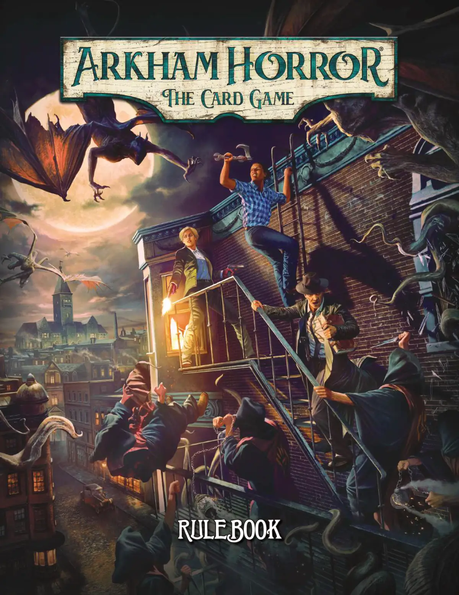
📝 第 1 页 AI 机翻对照（点击展开）
规则书
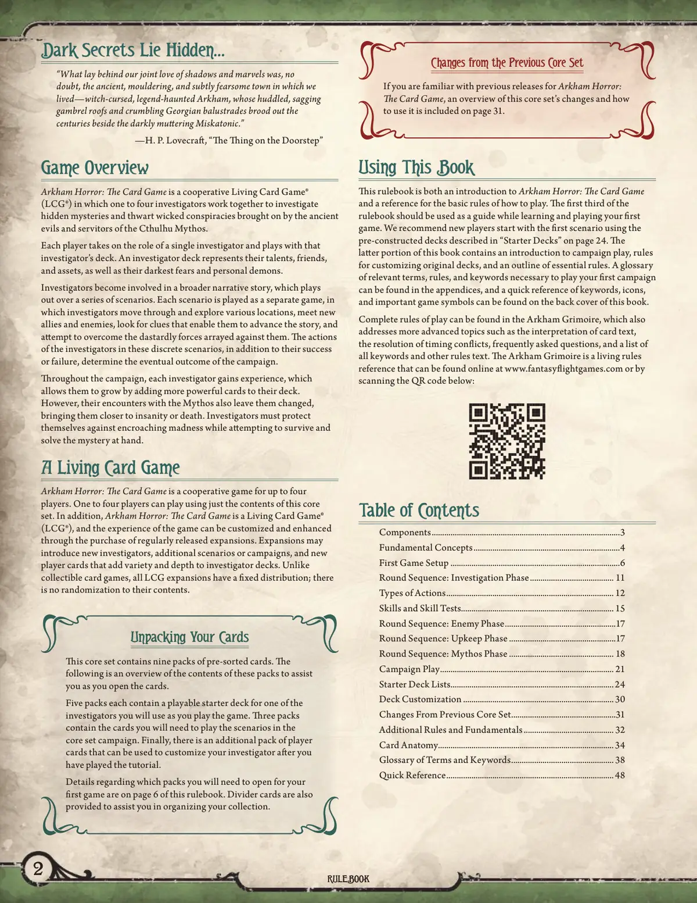
📝 第 2 页 AI 机翻对照（点击展开）
黑暗的秘密悄然隐藏……
"毫无疑问，支撑着我们共同热爱阴影与奇迹的，是我们所居住的那座古老、腐朽、又隐隐令人恐惧的小镇——被女巫诅咒、传说萦绕的阿卡姆(Arkham)，那里拥挤不堪、下垂的复折屋顶和摇摇欲坠的乔治式栏杆，在黑暗地低语着的密斯卡托尼克河(Miskatonic)畔，俯瞰着几个世纪。"
—H. P. Lovecraft, "The Doorstep上的东西"
游戏概览
《克苏鲁的呼唤：卡牌游戏》(Arkham Horror: The Card Game)是一款合作式生活卡牌游戏®(LCG®)，一到四名调查者共同努力，调查隐藏的神秘阴谋，并挫败由克苏鲁神话中的古老邪恶及其仆从所带来的邪恶阴谋。
每位玩家扮演一名调查者，并使用该调查者的牌组进行游戏。调查者牌组代表了他们的才能、朋友和资产，以及他们最深层的恐惧和个人恶魔。
调查者会卷入一个更广泛的叙事故事中，这个故事通过一系列场景展开。每个场景都作为一场独立游戏进行，调查者在其中移动并探索各个地点，结识新的盟友和敌人，寻找能够推动故事发展的线索，并试图克服针对他们的邪恶势力。调查者在这些独立场景中的行动，以及他们的成功或失败，决定了整个战役的最终结果。
在整个战役过程中，每位调查者都会获得经验，使他们能够通过向牌组中添加更强大的卡牌来成长。然而，他们与神话的遭遇也会使他们发生改变，使他们更接近疯狂或死亡。调查者必须在试图生存并解决当前谜题的同时，保护自己免受逐渐逼近的疯狂侵袭。
一款生活卡牌游戏
《克苏鲁的呼唤：卡牌游戏》是一款最多四名玩家的合作游戏。一到四名玩家仅使用这个核心盒子的内容即可进行游戏。此外，《克苏鲁的呼唤：卡牌游戏》是一款生活卡牌游戏®(LCG®)，通过定期购买扩展包，可以定制和增强游戏体验。扩展包可能会引入新的调查者、额外的场景或战役，以及新的玩家卡牌，为调查者牌组增加多样性和深度。与集换式卡牌游戏不同，所有LCG扩展包都有固定的内容分布；其内容中没有随机性。
使用本书
这本规则书既是《克苏鲁的呼唤：卡牌游戏》的入门指南，也是如何游戏基本规则的参考手册。规则书的前三分之一应在学习和进行第一场游戏时用作指南。我们建议新玩家使用第一个场景开始游戏，
第24页"起始牌库"中描述的预组牌库。本书的后半部分包含战役游戏介绍、自定义原始牌库的规则以及基本规则概述。可以在附录中找到玩第一个战役所需的术语、规则和关键词的词汇表，以及关键词、图标和重要游戏符号的快速参考可以在本书封底找到。完整游戏规则可以在《Arkham Grimoire》中找到，该书还涉及更高级的主题，如卡牌文本的解释、时间冲突的解决、常见问题解答以及所有关键词和其他规则文本的列表。《Arkham Grimoire》是一个动态规则参考，可以在 www.fantasyflightgames.com 在线找到，或通过扫描下方的二维码找到：
目录
组件..........................................................................................3
基本概念......................................................................4
首次游戏设置..................................................................................6
回合顺序：调查阶段......................................... 11
行动类型................................................................................ 12
技能与技能测试......................................................................... 15
回合顺序：敌人阶段.....................................................17
回合顺序：维护阶段....................................................17
回合顺序：神话阶段................................................... 18
战役游戏................................................................................... 21
起始牌库列表..............................................................................24
牌库自定义.........................................................................30
与先前核心集的变化..................................................31
附加规则与基础............................................ 32
卡牌结构....................................................................................34
术语与关键词词汇表.................................................38
快速参考................................................................................48
与先前核心集的变化
如果您熟悉《克苏鲁的呼唤：卡牌游戏》的先前版本，本核心集的变化及如何使用的内容包含在第31页。
拆解您的卡牌
本核心集包含九组预分类的卡牌。以下是这些卡包内容的概述，以帮助您
当你打开卡牌时。
五包中的每一包都包含一个可用的起始牌组，用于你在游戏中使用的调查员之一。三包包含你在核心战役中游玩场景所需的卡牌。最后，还有一包额外的玩家卡牌，在你完成教程后可用于自定义你的调查员。
关于第一场游戏需要打开哪些包的详细信息在本规则书第6页。还提供了分隔卡，以帮助你整理你的收藏。
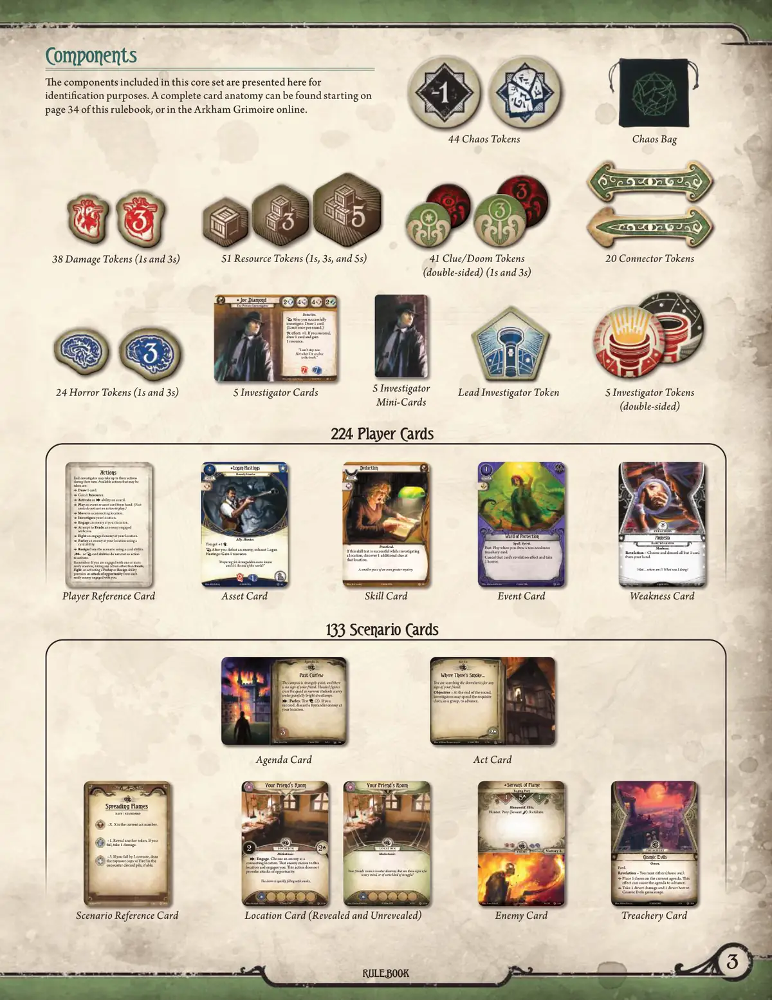
📝 第 3 页 AI 机翻对照（点击展开）
组件
本核心盒包含的组件在此列出以便识别。完整的卡牌解剖结构可从本规则书第34页开始找到，或在《Arkham Grimoire》在线资源中找到。
224张玩家卡牌
行动
每位调查员在其回合中可以执行最多三个行动。可执行的可选行动有：
= 摸1张牌。
= 获得1个资源。
= 激活卡牌上的能力。
= 从手牌打出事件或资产卡牌。（快速卡牌打出不消耗行动。）
= 移动到相邻的位置。
= 调查你所在的位置。
= 接触你所在位置的敌人。
= 尝试闪避与你接触的敌人。
= 战斗与你接触的敌人。
= 使用卡牌能力与你所在位置的敌人交涉。
= 使用卡牌能力放弃场景。
或能力激活不消耗行动。
记住：如果你与一个或多个准备状态的敌人接触，执行除闪避、战斗或激活交涉或放弃能力外的任何行动，都会触发每个与你接触的准备状态敌人的攻击机会。
玩家参考卡
© 2026 FFG
插图：Elijah Ring
资产
"为世界末日做准备看似疯狂，直到世界真的末日到来！"
你获得+1。
在你击败一个敌人后， Exhaust Logan Hastings：获得1个资源。
盟友。猎人。
Logan Hastings
赏金猎人
资产卡
© 2026 FFG
插图：Rob Laskey
技能
如果在调查位置时技能测试成功，在该位置额外发现1条线索。
熟练的。
推理
一个更大谜题的更小部分。
技能卡
© 2026 FFG
插图：Alexandr Elichev
事件
快速。当你摸到一张非弱点阴谋卡牌时打出。
取消该牌的揭示效果并承受1点精神创伤。
法术。灵性。
防护结界
事件卡
© 2026 FFG
插图：Chris Peuler
基础弱点
阴谋
等等...我在哪里？我刚才在做什么？
揭示——选择并弃掉你手牌中除1张外的所有牌。
疯狂。
失忆
弱点卡
133张场景卡
场景
© 2026 FFG
105a
1/11
–3。如果你失败2点或更多，从遭遇弃牌堆顶摸一张Fire!的副本（如果可能）。
–1。揭示另一个指示物。如果你失败，承受1点伤害。
–X。X是当前幕数。
蔓延的火焰
简单/标准
场景参考卡
© 2026 FFG
插图：Pixoloid Studios
9/11
113b
位置
宿舍很快充满了烟雾。
：接触。选择一个相邻位置的敌人。该敌人移动到此位置并与你接触。此行动不触发攻击机会。
密斯卡托尼克。
你朋友的房间
2
位置卡（已揭示和未揭示）
© 2026 FFG
113a
插图：Pixoloid Studios
9/11
位置
你朋友的房间一片混乱。但这些是疲惫心灵的迹象，还是某种挣扎的痕迹？
密斯卡塔尼克。
你朋友的房间
© 2026 FFG
插图：Peter Polach
10/11
敌人
猎人。猎物（最低）。反击。
类人生物。精英。
烈焰仆从
狂怒
胜利点 2。
敌卡
© 2026 FFG
插图：Walter Brocca
1/3
背叛
危险。
启示 – 你必须选择其中一项：
= 在当前议程上放置 1 个厄运标记。此效果可能导致议程推进。
= 受到 1 点直接伤害和 1 点直接恐惧。
宇宙邪恶获得激增。
预兆。
宇宙邪恶
背叛卡
© 2026 FFG
插图：Nele Diel
2/11
议程 1a
校园异常安静，没有你朋友的任何迹象。兜帽人物穿越广场，紧张的学生们在刺眼的街灯下匆忙穿行。
：交涉。测试（2）。如果你成功，在你所在位置弃置 1 个旁观者敌人。
宵禁
议程卡
© 2026 FFG
插图：William Thomas Arnold
5/11
场景 1a
你正在宿舍楼里搜寻任何关于你朋友的迹象。
目标 – 在轮结束时，调查员可以作为一个整体花费必要的线索来推进。
有烟之处……
2
场景卡
调查员
调查员
© 2026 FFG
插图：Aleksander Karcz
"我不能停下。
当我离真相如此接近时。"
成功调查后：摸 1 张牌。
（每轮限一次。）
效果：+1。如果你成功，摸 1 张牌并获得 1 个资源。
侦探。
乔·戴蒙德
私家侦探
44 混沌标记
混沌袋
38 伤害标记（1点和3点）
24 恐惧标记（1点和3点）
5 张调查员牌
51 个资源标记（1点、3点和5点）
41 个线索/厄运标记
（双面）（1点和3点）
5 张调查员
迷你牌
5 个调查员标记
（双面）
主调查员标记
20 个连接标记
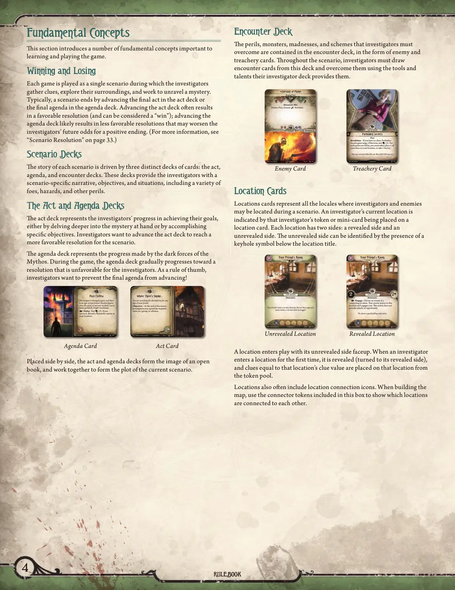
📝 第 4 页 AI 机翻对照（点击展开）
基本概念
本节介绍了一些对学习和游玩游戏至关重要的基本概念。
胜利与失败
每局游戏作为一个场景进行，在此期间，调查员们收集线索，探索周围环境，并努力解开谜团。通常，场景通过推进行动牌库中的最后一幕或议程牌库中的最后一张议程牌来结束。推进行动牌库通常会导致有利的结局（可视为"胜利"）；而推进议程牌库则可能导致不太有利的结局，这可能会恶化调查员获得积极结局的未来机会。（更多信息，请参见第33页的"场景结局"。）
场景牌库
每个场景的故事由三张不同的牌牌库驱动：行动牌库、议程牌库和遭遇牌库。这些牌库为调查员提供场景特定的叙事、目标和情境，包括各种各样的敌人、危险和其他危害。
行动牌库与议程牌库
行动牌库代表调查员实现目标的进展，无论是通过深入调查当前谜团还是完成特定目标。调查员希望推进行动牌库，以获得场景更有利的结局。
议程牌库代表神话黑暗势力的进展。在游戏过程中，议程牌库逐渐推进至对调查员不利的结局。经验法则，调查员希望阻止最后一张议程牌被推进！
行动牌库和议程牌库并排放置，形成一本打开的书的样子，共同构成当前场景的情节。
© 2026 FFG
插图：Nele Diel
2/11
议程 1a
校园异常安静，没有你朋友的任何迹象。兜帽人物穿过广场，紧张的学生们在刺眼的街灯下匆匆跑过。
：交涉。测试 (2)。如果你成功，在你所在位置弃置一个旁观者敌人。
宵禁
议程牌
© 2026 FFG
插图：William Thomas Arnold
5/11
行动 1a
你正在宿舍楼中寻找你朋友的任何踪迹。
目标 - 在回合结束时，调查员可以作为一个整体花费必要的线索来推进。
有烟之处...
2
行动牌
遭遇牌库
调查员必须克服的危险、怪物、疯狂和阴谋都包含在遭遇牌库中，以敌人和背叛卡的形式呈现。在整个场景中，调查员必须从此牌库中抽取遭遇卡，并使用他们的调查员牌库提供的工具和才能来克服它们。
位置卡
位置卡代表调查员和敌人所在的所有地点
在场景中可能被定位。调查员的当前位置由该调查员的指示物或迷你卡牌放置在地点卡牌上来表示。每个地点有两面：一面是已揭示面，另一面是未揭示面。未揭示面可以通过地点标题下方的钥匙孔符号来识别。
地点进入游戏时，其未揭示面朝上。当调查员首次进入一个地点时，该地点会被揭示（翻到已揭示面），并且等于该地点线索值的线索数量会从指示物池中放置到该地点上。
地点通常还包括地点连接图标。在构建地图时，使用本盒中包含的连接指示物来显示哪些地点相互连接。
© 2026 FFG
插图：Peter Polach
10/11
敌人
猎人。猎物（最低 ）。反击。
类人生物。精英。
烈焰仆从
狂怒
胜利 2。
敌人卡牌
© 2026 FFG
插图：Sara Biddle
3/4
背叛
他们说好奇心害死猫。但它也会害死你吗？
启示 – 如果你没有线索，禁忌秘密获得激增。否则，进行 (3) 测试。每失败1点，你必须要么将1个线索放置在你的地点上，要么承受1点精神创伤。
契约。
禁忌秘密
背叛卡牌
© 2026 FFG
113a
插图：Pixoloid Studios
9/11
地点
你朋友的房间一片混乱。但这些是疲惫心灵的迹象，还是某种挣扎的痕迹？
密斯卡托尼克。
你朋友的房间
未揭示地点
© 2026 FFG
插图：Pixoloid Studios
9/11
113b
地点
宿舍里很快充满了烟雾。
：交战。选择一个在连接地点的敌人。该敌人移动到此地点并与你交战。此行动不会引发机会攻击。
密斯卡托尼克。
你朋友的房间
2
已揭示地点
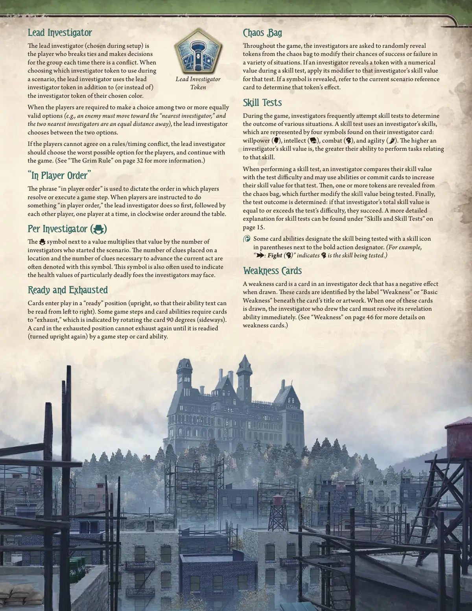
📝 第 5 页 AI 机翻对照（点击展开）
首席调查员
首席调查员（在设置阶段选定）是每次出现冲突时打破平局并为团体做决定的玩家。在场景中选择使用哪个调查员指示物时，首席调查员除了使用（或代替）其选定颜色的调查员指示物外，还要使用首席调查员指示物。
当玩家需要在两个或多个同等有效的选项中做出选择时（例如，敌人必须向"最近的调查员"移动，而两个最近的调查员距离相等），首席调查员在两个选项之间进行选择。
如果玩家无法就规则/时机冲突达成一致，首席调查员应为玩家选择最不利的选项，并继续游戏。（更多信息请参见第32页的"严酷规则"。）
"按玩家顺序"
"按玩家顺序"这一用语用于规定玩家解决或执行游戏步骤的顺序。当玩家被指示"按玩家顺序"执行某操作时，首席调查员首先执行，然后按顺时针方向围绕桌子，其他玩家依次每人执行一次。
每名调查员（）
值旁边的符号将该值乘以开始该场景的调查员数量。放置在地点上的线索数量和推进当前剧情所需的线索数量通常用此符号表示。该符号也常用于表示调查员可能面临的特别致命敌人的生命值。
准备和耗尽
卡牌以"准备"状态进入游戏（直立放置，以便其能力文本可以从左到右阅读）。某些游戏步骤和卡牌能力要求卡牌"耗尽"，这通过将卡牌旋转90度（横向）表示。处于耗尽状态的卡牌必须通过游戏步骤或卡牌能力重新恢复为准备状态（再次直立放置）后，才能再次耗尽。
混沌袋
在整个游戏中，调查员被要求从混沌袋中随机揭示指示物，以修改他们在各种情况下成功或失败的机会。如果调查员在技能测试期间揭示带有数值的指示物，将其修正值应用于该调查员在该测试中的技能值。如果揭示的是符号，请参考当前场景参考卡以确定该指示物的效果。
技能测试
在游戏中，调查员频繁尝试技能测试以确定各种情况的结果。技能测试使用调查员的技能，这些技能在其调查员卡上由四个符号表示：意志力（）、智力（）、战斗（）和敏捷（）。技能值越高，
调查员的技能值越高，他们执行与该技能相关任务的能力就越强。
在进行技能测试时，调查员会将他们的技能值与测试难度进行比较，并可以使用能力或打出卡牌来增加该测试的技能值。然后，从混沌袋中揭示一个或多个指示物，这些指示物会进一步修改被测试的技能值。最后，确定测试结果：如果该调查员的总技能值等于或超过测试的难度，他们就成功了。关于技能测试的更详细解释可以在第 15 页的"技能与技能测试"部分找到。
Æ 一些卡牌能力通过加粗行动指示符旁边的技能图标来指定被测试的技能。（例如，": 战斗 ()" 表示 是被测试的技能。）
弱点卡牌
弱点卡牌是调查员牌库中的一张卡牌，当被抽到时会产生负面效果。这些卡牌通过卡牌标题或艺术品下方的"弱点"或"基础弱点"标签来识别。当抽到这些卡牌之一时，抽到卡牌的调查员必须立即解决其揭示能力。（关于弱点卡牌的更多详情，请参见第 46 页的"弱点"。）
首席调查员
指示物
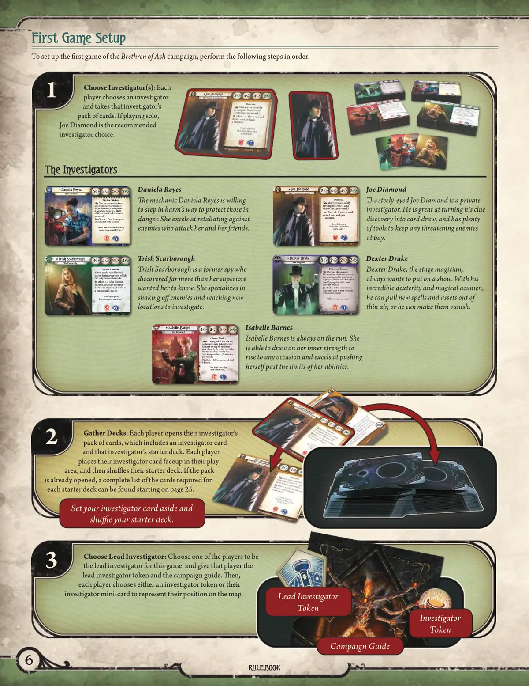
📝 第 6 页 AI 机翻对照（点击展开）
首次游戏设置
要设置《灰烬兄弟会》(Brethren of Ash)战役的首次游戏，请按顺序执行以下步骤。
机械师 Daniela Reyes 愿意挺身而出保护身处危险中的人。她擅长反击攻击她和她的朋友的敌人。
眼神锐利的 Joe Diamond 是一名私家侦探。他擅长将线索发现转化为摸牌，并拥有大量工具来阻止任何威胁性的敌人。
Trish Scarborough 是一名前间谍，她发现了上级不希望她知道的更多事情。她擅长摆脱敌人并到达新的地点进行调查。
舞台魔术师 Dexter Drake 总是想表演一场秀。凭借他惊人的灵巧和魔法才能，他可以从虚空中拉出新的法术和资产，或者让它们消失。
Isabelle Barnes 总是在逃亡。她能够依靠内心的力量应对任何场合，并擅长超越自身能力的极限。
选择调查员：每位玩家选择一名调查员并拿取该调查员的卡组。如果是单人游戏，推荐选择 Joe Diamond 作为调查员。
收集牌库：每位玩家打开他们的调查员卡组，其中包括一张调查员卡和该调查员的起始牌组。每位玩家将他们的调查员卡正面朝上放置在自己的游戏区域，然后洗混他们的起始牌组。如果卡组已经打开，可以在第25页开始找到每个起始牌组所需的完整卡牌列表。
选择首席调查员：选择一名玩家作为本局游戏的首席调查员，并将首席调查员标记和战役指南交给该玩家。然后，每位玩家选择一个调查员标记或他们的调查员迷你卡来代表他们在地图上的位置。
调查员
首席调查员
标记
将你的调查员卡放在一旁，洗混你的起始牌组。
战役指南
调查员
标记
调查员
© 2026 FFG
插图：Aleksander Karcz
"我不能停下来。
当我离真相如此接近的时候。"
成功调查后：摸1张牌。
（每轮限一次。）
效果：+1。如果你成功，摸1张牌并获得1个资源。
侦探。
Joe Diamond
私家侦探
调查员
© 2026 FFG
插图：Aleksander Karcz
"你相当不错，但没人能抓到我。"
在你的回合期间，你可以额外执行一个行动，该行动只能用于闪避。
效果：+0。此检定解决后，你可以与每个敌人脱离并移动到一个相连的位置。
机构。罪犯。
Trish Scarborough
前间谍
调查员
© 2026 FFG
插图：Aleksander Karcz
"I'll show you real magic."
在你打出一张资产后：
要么将你控制的另一张非故事资产返回到手牌，
要么从手牌打出另一张资产（支付其费用）。（每轮限一次。）
效果：+1。你可以将你所在位置的一张非故事资产返回到其所有者的手牌。
表演者。巫师。
Dexter Drake
The Magician
Survivor
调查员
© 2026 FFG
Illus. Aleksander Karcz
在你执行的技能测试中，承受1点直接恐怖：
将你弃牌堆中一张符合条件的技能牌投入此次测试。此测试结算后，将该牌洗入你的牌库。（每轮限一次。）
效果：+1。如果你成功，治愈1点恐怖。
被选中者。猎人。
Isabelle Barnes
The Returned
"My sister's sacrifice won't be in vain."
Daniela Reyes
Joe Diamond
Trish Scarborough
Dexter Drake
Isabelle Barnes
Guardian
调查员
© 2026 FFG
Illus. Aleksander Karcz
"Those creatures are definitely gonna know what hit 'em."
当一个敌人在你的位置攻击一名调查员时：
与该敌人战斗（使用基础战斗行动或卡牌上的战斗能力）。（每轮限一次。）
效果：+1。对你所在位置的一名敌人造成1点伤害。
守护者。工人。
Daniela Reyes
The Mechanic
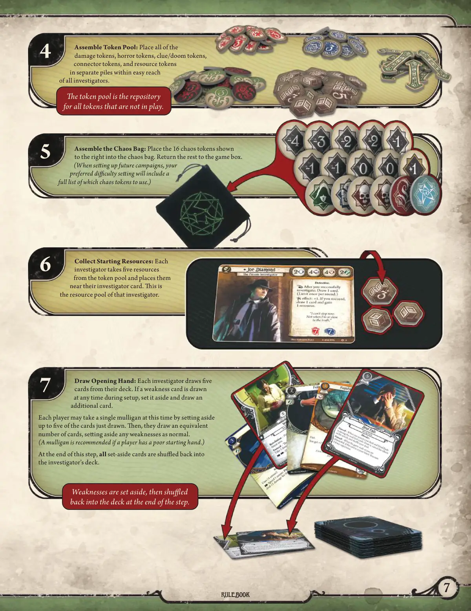
📝 第 7 页 AI 机翻对照（点击展开）
组建指示物池：将所有伤害指示物、恐惧指示物、线索/厄运指示物、连接指示物和资源指示物分别堆放在 piles 内，放在所有调查员容易拿到的地方。
组建混沌袋：将右侧显示的 16 个混沌指示物放入混沌袋中。其余的放回游戏盒中。
（在设置未来战役时，你选择的难度设置将包含一个完整的混沌指示物使用列表。）
收集起始资源：每位调查员从指示物池中拿取五个资源，并将其放在调查员卡牌附近。这是该调查员的资源池。
抽取起始手牌：每位调查员从他们的牌库中抽取五张卡牌。如果在设置过程中的任何时候抽到弱点卡牌，将其放在一边，然后额外抽取一张牌。
此时每位玩家可以将刚抽到的最多五张牌放在一边，进行一次换牌（mulligan）。然后，他们抽取相同数量的牌，并像平常一样将任何弱点牌放在一边。
（如果玩家起始手牌较差，建议进行换牌。）
在此步骤结束时，所有被放在一边的牌会被洗回调查员的牌库中。
指示物池是所有未进入游戏的指示物的存放处。
弱点牌被放在一边，然后在步骤结束时洗回牌库。
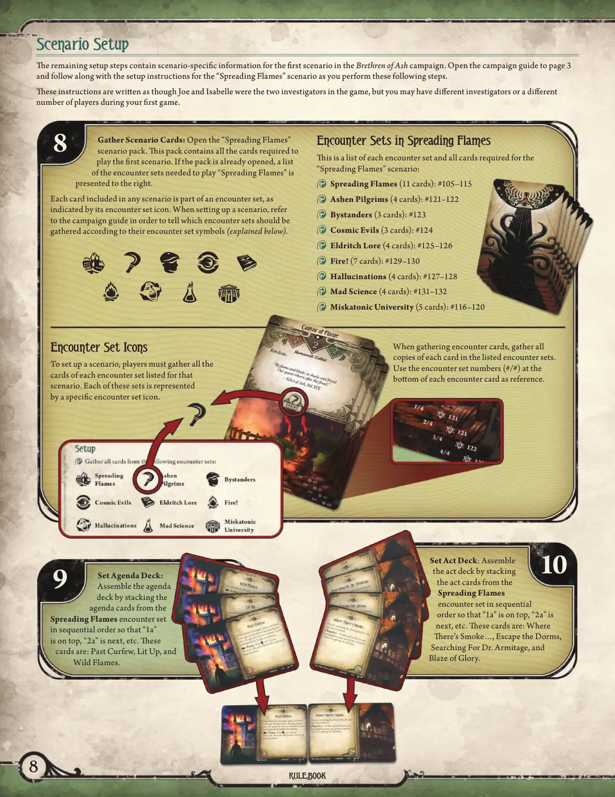
📝 第 8 页 AI 机翻对照（点击展开）
场景设置
其余的设置步骤包含《灰烬兄弟》战役中第一个场景的场景特定信息。打开战役指南到第3页，并在执行以下步骤时，按照"蔓延的火焰"场景的设置说明进行操作。
这些说明的撰写仿佛乔和伊莎贝尔是游戏中的两位调查员，但在你的第一局游戏中，你可能有不同的调查员或不同数量的玩家。
收集场景卡牌：打开"蔓延的火焰"场景包。这个包包含玩第一个场景所需的所有卡牌。如果该包已经打开，玩"蔓延的火焰"所需的遭遇套件列表显示在右侧。
任何场景中包含的每张卡牌都属于一个遭遇套件，如它的遭遇套件图标所示。在设置场景时，请参考战役指南，以确定应根据遭遇套件符号（如下所述）收集哪些遭遇套件。
设置议程牌库：
通过按顺序堆叠"蔓延的火焰"遭遇套件中的
议程卡牌来组建议程牌库，使"1a"在最上面，
"2a"在下面，以此类推。这些卡牌是：
宵禁、点燃和野火。
设置行为牌库：
通过按顺序堆叠"蔓延的火焰"遭遇套件中的
行为卡牌来组建行为牌库，使"1a"在最上面，
"2a"在下面，以此类推。这些卡牌是：
有烟之处...、逃离宿舍、寻找阿米蒂奇医生和荣耀之火。
遭遇套件图标
要设置场景，玩家必须收集该场景列表中每个遭遇套件的所有卡牌。这些套件中的每一个都由特定的遭遇套件图标表示。
在收集遭遇卡牌时，收集所列遭遇套件中每张卡的所有副本。使用每张遭遇卡底部的遭遇套件编号（#/ #）作为参考。
"蔓延的火焰"中的遭遇套件
这是每个遭遇套件和"蔓延的火焰"场景所需的所有卡牌列表：
Æ 蔓延的火焰（11张卡牌）：#105–115
Æ 灰烬朝圣者（4张卡牌）：#121–122
Æ 旁观者（3张卡牌）：#123
Æ 宇宙邪恶（3张卡牌）：#124
Æ 克苏鲁神话知识（4张卡牌）：#125–126
Æ 火！（7张卡牌）：#129–130
Æ 幻觉（4张卡牌）：#127–128
Æ 疯狂科学（4张卡牌）：#131–132
Æ 米斯卡塔尼克大学（5张卡牌）：#116–120
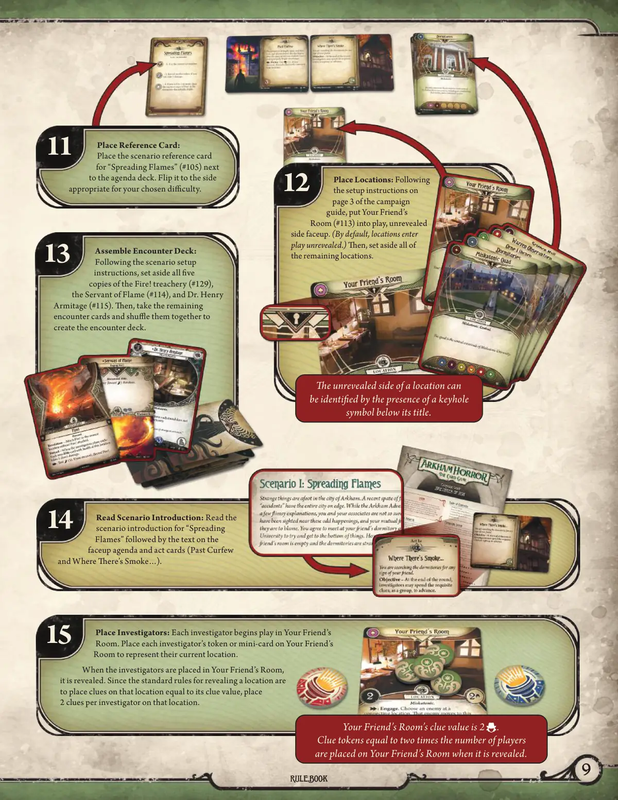
📝 第 9 页 AI 机翻对照（点击展开）
放置参考卡：
将"蔓延之火"（#105）的场景参考卡放在议程牌库旁边。将其翻到适合你选择的难度的一侧。
阅读场景介绍：阅读"蔓延之火"的场景介绍，然后阅读正面朝上的议程牌和行动牌上的文本（宵禁之后和有烟之处...）。
放置调查员：每位调查员开始在"你朋友的房间"进行游戏。将每位调查员的指示物或迷你卡放在"你朋友的房间"以表示他们当前位置。
当调查员被放置在"你朋友的房间"时，该位置被揭示。由于揭示位置的标准规则是在该位置上放置等于其线索值的线索指示物，因此为每位调查员在该位置上放置2个线索指示物。
组装遭遇牌组：
按照场景设置说明，将所有五张"火灾！"背叛牌（#129）、"火焰仆从"（#114）和"亨利·阿米蒂奇博士"（#115）放在一边。然后，将剩余的遭遇牌洗在一起，组成遭遇牌组。
放置位置：
按照战役指南第3页的设置说明，将"你朋友的房间"（#113）以未揭示面朝上的方式放入游戏中。（默认情况下，位置进入游戏时为未揭示状态。）然后，将所有剩余的位置放在一边。
位置的未揭示面可以通过其标题下方的钥匙孔符号来识别。
"你朋友的房间"的线索值为2 。当该位置被揭示时，放置等于玩家数量两倍的线索指示物。
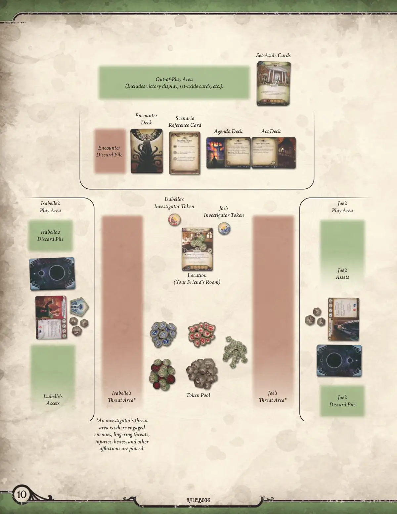
📝 第 10 页 AI 机翻对照（点击展开）
乔的弃牌堆
伊莎贝尔的资产
乔的资产
伊莎贝尔的游戏区域
伊莎贝尔的弃牌堆
乔的游戏区域
位置
（你朋友的房间）
遭遇弃牌堆
遭遇牌组
场景参考卡
备置牌
议程牌库
行动牌库
游戏外区域
（包括胜利展示区、备置牌等）。
伊莎贝尔的调查员指示物
乔的调查员指示物
指示物池
*调查员的威胁区域是放置交战的敌人、持续威胁、伤害、诅咒和其他 afflictions 的地方。
伊莎贝尔的威胁区域*
乔的威胁区域*
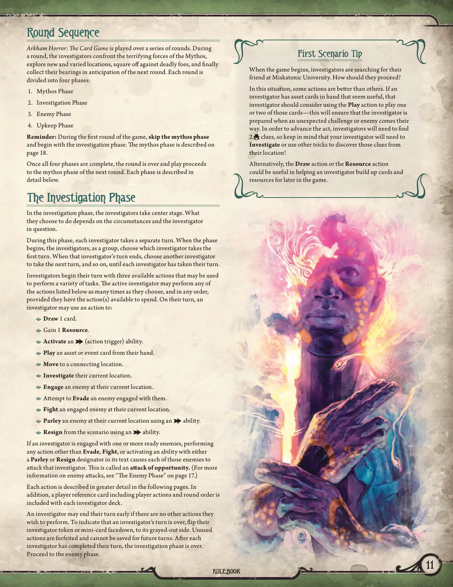
📝 第 11 页 AI 机翻对照（点击展开）
轮次顺序
《克苏鲁的呼唤：卡牌游戏》通过一系列轮次进行。在每一轮中，调查员面对神话的恐怖力量，探索新的多样化地点，与致命的敌人交锋，最后为下一轮做准备。每一轮分为四个阶段：
1. 神话阶段
2. 调查阶段
3. 敌人阶段
4. 维护阶段
提醒：在游戏的第一轮，跳过神话阶段，从调查阶段开始。神话阶段在第18页有描述。
当所有四个阶段完成后，本轮结束，游戏进入下一轮的神话阶段。每个阶段在下面有详细描述。
调查阶段
在调查阶段，调查员成为主角。他们选择做什么取决于具体情况和调查员本人。
在此阶段，每位调查员轮流行动。当阶段开始时，调查员作为一个团体，选择哪位调查员先行动。当那位调查员的回合结束时，选择另一位调查员进行下一回合，依此类推，直到每位调查员都完成了他们的回合。
调查员开始回合时拥有三个可用行动，可用于执行各种任务。当前调查员可以选择执行以下列出的任何行动，次数和顺序不限，只要他们有可用的行动点数。在他们的回合中，调查员可以使用行动来：
= 摸1张牌。
= 获得1个资源。
= 激活一个（行动触发）能力。
= 从手牌中打出资产或事件卡牌。
= 移动到相邻的地点。
= 调查当前所在地点。
= 与当前所在地点的敌人交战。
= 尝试闪避与交战的敌人。
= 攻击当前所在地点交战的敌人。
= 使用能力与当前所在地点的敌人交涉。
= 使用能力退出剧本。
如果调查员与一个或多个准备状态的敌人交战，执行除闪避、战斗或激活带有交涉或退出标记的能力外的任何行动，会导致每个敌人攻击该调查员。这被称为机会攻击。（关于敌人攻击的更多信息，请参见第17页的"敌人阶段"。）
每个行动在后续页面中有更详细的描述。此外，每套调查员牌组中都包含一张玩家参考卡，上面有玩家行动和轮次顺序。
如果调查员没有其他想要执行的行动，可以提前结束他们的回合。要表示调查员的回合结束，翻转他们的
调查员指示物或迷你卡牌面朝下放置，到其灰色面。未使用的行动将被 forfeited（没收）且不能留到以后的回合。在每个调查员完成他们的回合后，调查阶段结束。进入敌人阶段。
第一个场景提示
当游戏开始时，调查员们正在寻找他们在 Miskatonic University（密斯卡托尼克大学）的朋友。他们应该如何进行？
在这种情况下，一些行动比其他行动更好。如果一个调查员手中似乎有用的资产卡牌，该调查员应该考虑使用"打出"行动来打出一张或两张那些卡牌——这将确保当意外挑战或敌人出现时，调查员已经做好准备。为了推进剧情，调查员需要找到 2 个 线索，所以要记住，你的调查员需要使用"调查"行动或其他技巧来从他们所在的位置发现那些线索！
另外，"摸牌"行动或"资源"行动可能有助于调查员为游戏的后期积累卡牌和资源。
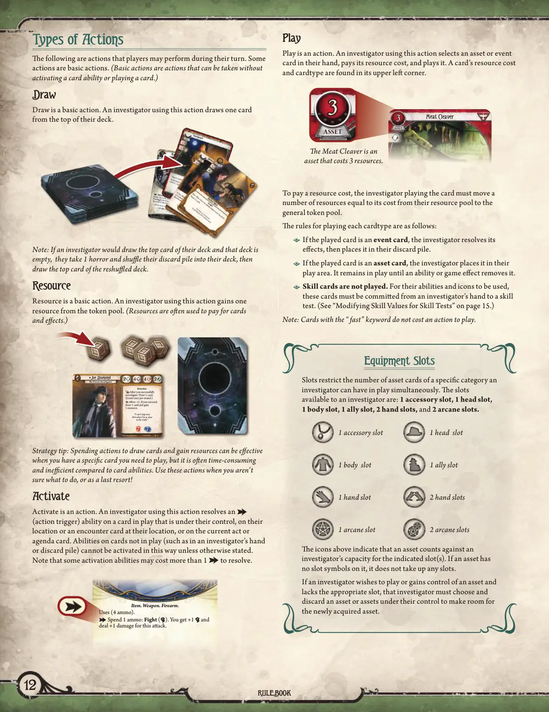
📝 第 12 页 AI 机翻对照（点击展开）
行动类型
以下是玩家在其回合中可以执行的行动。有些行动是基础行动。（基础行动是不需要激活卡牌能力或打出卡牌即可执行的行动。）
摸牌
摸牌是一项基础行动。使用此行动的调查员会从其牌库顶部摸一张牌。
注意：如果调查员要摸其牌库顶部的牌，但该牌库为空，他们会获得1点恐惧，将其弃牌堆洗入牌库，然后从重新洗好的牌库中摸顶牌。
资源
资源是一项基础行动。使用此行动的调查员会从指示物池中获得1个资源。（资源通常用于支付卡牌和效果。）
策略提示：当你有特定卡牌需要打出时，花费行动来摸牌和获得资源可能是有效的，但与卡牌能力相比，这通常耗时且效率低下。当你不确定该做什么时，或者作为最后手段时使用这些行动！
激活
激活是一项行动。使用此行动的调查员会解析一张在其控制下、在其所在位置或其所在位置的遭遇卡上，或在当前剧情或议程卡上的卡牌上已激活（行动触发）能力。除非另有说明，否则不在游戏中的卡牌（如调查员的手牌或弃牌堆）上的能力不能以这种方式激活。
请注意，一些激活能力可能需要花费超过1个才能解析。
调查员
© 2026 FFG
插图：Aleksander Karcz
"我不能停下来。
当我离真相如此接近时。"
成功调查后：摸1张牌。
（每轮限一次。）
效果：+1。如果你成功，摸1张牌并获得1个资源。
侦探。
乔·戴蒙德
私家侦探
使用（4弹药）。
花费1弹药：战斗（）。你获得+1，此次攻击造成+1伤害。
物品。武器。枪械。
打出
打出是一项行动。使用此行动的调查员会选择其手牌中的一张资产或事件卡，支付其资源费用，并打出它。卡牌的资源费用和卡牌类型在其左上角找到。
要支付资源费用，打出卡牌的调查员必须将其资源池中等于其费用的资源数量移至通用指示物池。
每种卡牌类型的打出规则如下：
= 如果打出的卡牌是事件卡，调查员会解析其效果，然后将其放入其弃牌堆。
= 如果打出的卡牌是资产卡，调查员会将其放入其游戏区域。它保持在场，直到某个能力或游戏效果将其移除。
= 技能卡不能被打出。要使用其能力和图标，这些卡牌必须从调查员的手牌中提交至技能
（参见第15页的"技能测试的技能值调整"）
注意：带有"快速"关键词的卡牌打出时不消耗行动。
肉斧（Meat Cleaver）是一种
消耗3个资源的资产。
资产
肉斧（Meat Cleaver）
装备槽位
槽位限制了调查员可以同时在场上的特定类别资产卡牌的数量。调查员可用的槽位有：1个饰品槽位，1个头部槽位，1个身体槽位，1个盟友槽位，2个手部槽位和2个神秘槽位。
上方的图标表明资产会占用调查员指定槽位的容量。如果资产上没有槽位符号，则它不占用任何槽位。
如果调查员想要打出或获得一个资产的控制权，但缺少相应的槽位，该调查员必须选择并弃置其控制下的一个或多个资产，为新获得的资产腾出空间。
1个饰品槽位
1个头部槽位
1个身体槽位
1个盟友槽位
1个手部槽位
2个手部槽位
1个神秘槽位
2个神秘槽位
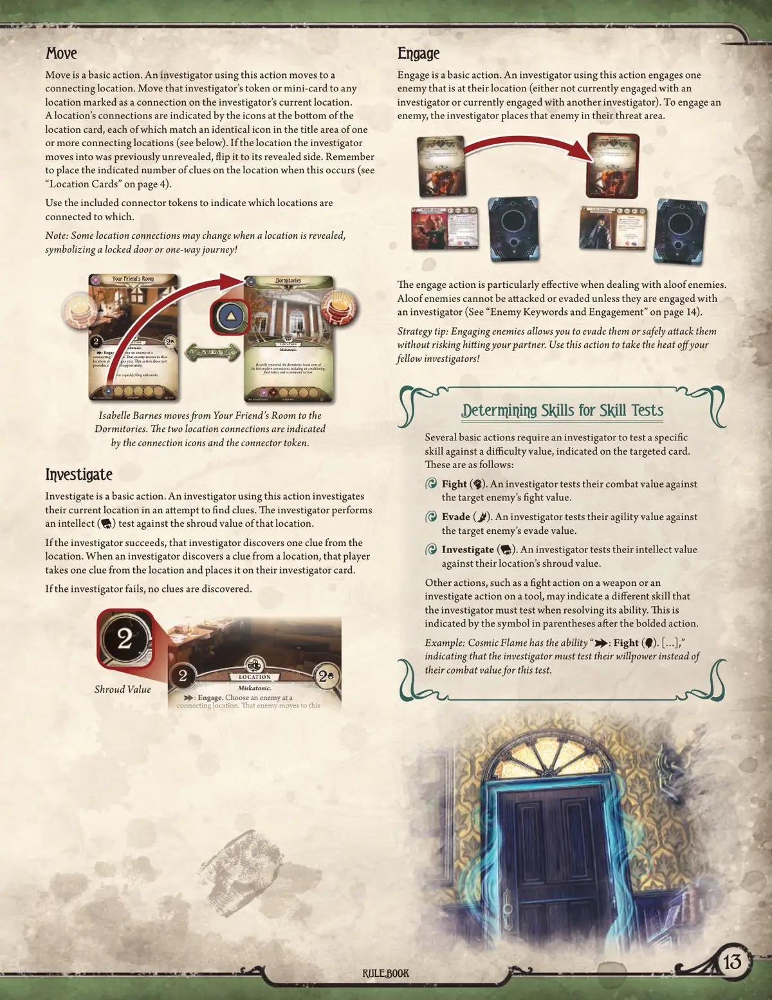
📝 第 13 页 AI 机翻对照（点击展开）
移动
移动是一项基础行动。使用此行动的调查员会移动到一个相连的位置。将该调查员的指示物或迷你卡移动到调查员当前位置上标记为连接的任何位置。
一个位置的连接由位置卡底部的图标表示，每个图标都与一个或多个相连位置标题区域中的相同图标相匹配（见下文）。如果调查员移动到的位置之前未被揭示，则将其翻到已揭示面。发生这种情况时，记得在位置上放置指定数量的线索（参见第4页的"位置卡"）。
使用随附的连接指示物来表示哪些位置与哪些位置相连。
注意：当位置被揭示时，某些位置连接可能会改变，象征着锁住的门或单向旅程！
调查
调查是一项基础行动。使用此行动的调查员会调查他们当前位置，试图寻找线索。调查员对该位置的隐匿值进行一次智力（）检定。
如果调查员成功，该调查员会从该位置发现一条线索。当调查员从位置发现线索时，该玩家从位置取走一条线索，并将其放置在其调查员卡上。
如果调查员失败，则不会发现任何线索。
伊莎贝尔·巴恩斯从"你朋友的房间"移动到"宿舍"。这两个位置连接由连接图标和连接指示物表示。
© 2026 FFG
插图：Pixoloid Studios
位置
最近翻新过的宿舍拥有一些最好的现代便利设施，包括空调、冲水马桶和公共冰箱。
密斯卡塔尼克。
宿舍
© 2026 FFG
插图：Pixoloid Studios
9/11
113b
位置
宿舍里很快充满了烟雾。
：交战。选择一个在相连位置的敌人。该敌人移动到此位置并与你交战。此行动不会引发借机攻击。
密斯卡塔尼克。
你朋友的房间
2
隐匿值
位置
：交战。选择一个在相连位置的敌人。该敌人移动到此位置并与你交战。此行动不会
密斯卡塔尼克。
2
交战
交战是一项基础行动。使用此行动的调查员会交战一个在其位置上的敌人（要么当前未与任何调查员交战，要么当前正与另一名调查员交战）。要交战敌人，调查员将该敌人放置在其威胁区域中。
交战行动在处理孤僻敌人时特别有效。孤僻敌人除非与调查员交战，否则无法被攻击或规避（参见第14页的"敌人关键词与交战"）。
战略提示：与敌人交战可以让你躲避他们或安全地攻击他们，而不会冒着击中同伴的风险。使用这个行动来为你的 fellow investigators 减压！
确定技能测试的技能
一些基本行动需要调查员针对一个难度值测试特定技能，该难度值显示在目标卡牌上。
这些如下：
Æ 战斗 ()。调查员测试其战斗力值对抗目标敌人的战斗值。
Æ 躲避 ()。调查员测试其敏捷值对抗目标敌人的躲避值。
Æ 调查 ()。调查员测试其智力值对抗其所在位置的隐匿值。
其他行动，例如武器上的战斗行动或工具上的调查行动，可能会指示调查员在解析其能力时必须测试的不同技能。这由粗体行动后括号中的符号表示。
示例：Cosmic Flame（宇宙之焰）具有能力": 战斗 (). […]"，表示调查员必须在此测试中测试其意志力而非战斗力值。
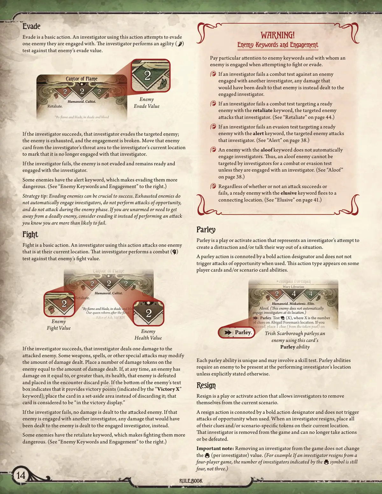
📝 第 14 页 AI 机翻对照（点击展开）
闪避
闪避是一项基础行动。使用此行动的调查员尝试闪避他们正在交战的敌人一名。调查员对该敌人的闪避值进行一次敏捷（）检定。
如果调查员成功，该调查员闪避了目标敌人；敌人被疲劳，交战状态被解除。将该敌人卡牌从调查员的威胁区域移动到调查员的当前位置，以标记该敌人不再与该调查员交战。
如果调查员失败，敌人未被闪避，仍然保持准备状态并与调查员交战。
一些敌人具有"警戒"关键词，这使得闪避它们更加危险。（参见右侧的"敌人关键词与交战"）
策略提示：闪避敌人对成功至关重要。疲劳的敌人不会自动与调查员交战，不会进行机会攻击，也不会在敌人阶段进行攻击。如果你没有武器或需要远离致命的敌人，考虑闪避它，而不是进行你极有可能失败的攻击。
战斗
战斗是一项基础行动。使用此行动的调查员攻击位于他们当前位置的一名敌人。该调查员对该敌人的战斗值进行一次战斗（）检定。
如果调查员成功，该调查员对被攻击的敌人造成一点伤害。一些武器、法术或其他特殊攻击可能会修改造成的伤害量。在敌人上放置等于造成伤害量的伤害指示物。任何时候，如果敌人身上的伤害等于或大于其生命值，该敌人被击败并放入遭遇弃牌堆。如果敌人文本框底部表明它提供胜利点（由"胜利X"关键词表示），则将该卡牌放入一个单独的区域而不是弃掉；该卡牌被视为"在胜利展示区中"。
如果调查员失败，不会对被攻击的敌人造成伤害。如果该敌人与另一名调查员交战，任何原本应造成给敌人的伤害都会改为造成给交战的调查员。
一些敌人具有"反击"关键词，这使得与它们战斗更加危险。（参见右侧的"敌人关键词与交战"）
敌人
闪避值
"通过火焰与刀刃，在阴影与鲜血中
我们的女王在洪水之后重生。"
反击。
人形。邪教徒。
火焰咏唱者
"通过火焰与刀刃，在阴影与鲜血中
我们的女王在洪水之后重生。"
—灰烬法令，第十九卷
反击。
人形。邪教徒。
火焰咏唱者
H
敌人
战斗值
敌人
生命值
交涉
交涉是一项打出或激活行动，代表调查员尝试
制造干扰和/或通过交谈摆脱困境。
谈判行动由粗体行动指示符表示，使用时不会触发攻击机会。此行动类型出现在一些玩家卡牌和/或场景卡牌能力上。
每个谈判能力都是独特的，可能涉及技能测试。除非另有明确说明，否则谈判能力要求执行调查员的位置上存在一个敌人。
辞职
辞职是一个使用或激活行动，允许调查员从当前场景中移除自己。
辞职行动由粗体行动指示符表示，使用时不会触发攻击机会。当调查员辞职时，将他们所有的线索和/或场景特定指示物放在他们当前位置。
该调查员被移出游戏，不能再采取行动或被击败。
重要提示：将调查员移出游戏不会改变（每位调查员）的数值。（例如，如果一名调查员在四人游戏中辞职，符号所指示的调查员数量仍然是四人，而不是三人。）
特里什·斯卡伯勒使用此卡牌的谈判能力
疏远（Aloof）能力与敌人谈判。（此敌人不会自动与其位置上的调查员交战。）
：谈判。测试(X)，其中X是阿比盖尔·福尔曼位置上的线索数量。如果你成功，将1个线索（从指示物池）放在阿比盖尔·福尔曼的位置上。（ 5）。
人形。密斯卡托尼克。精英。
阿比盖尔·福尔曼
谨慎的图书管理员
g g
g
：谈判。测试(X)，其中X是阿比盖尔·福尔曼位置上的线索数量。如果你成功，将1个线索（从指示物池）放在阿比盖尔·福尔曼的位置上。（ 5）。
警告！
敌人关键词与交战
尝试战斗或规避时，请特别注意敌人关键词以及敌人与谁交战。
Æ 如果调查员在与另一名调查员交战的敌人处进行的战斗测试失败，任何原本应给予该敌人的伤害将改为给予交战的调查员。
Æ 如果调查员针对具有反击关键词的待命敌人进行的战斗测试失败，目标敌人将攻击该调查员。（参见第44页的"反击"。）
Æ 如果调查员针对具有警戒关键词的待命敌人进行的规避测试失败，目标敌人将攻击该调查员。（参见第38页的"警戒"。）
Æ 具有疏远关键词的敌人不会自动与调查员交战。因此，除非疏远敌人与调查员交战，否则调查员无法将其作为战斗或规避测试的目标。（参见第38页的"疏远"。）
Æ 无论攻击成功或失败，具有难以捉摸关键词的待命敌人都会逃到相邻的位置。（参见第41页的"难以捉摸"。）
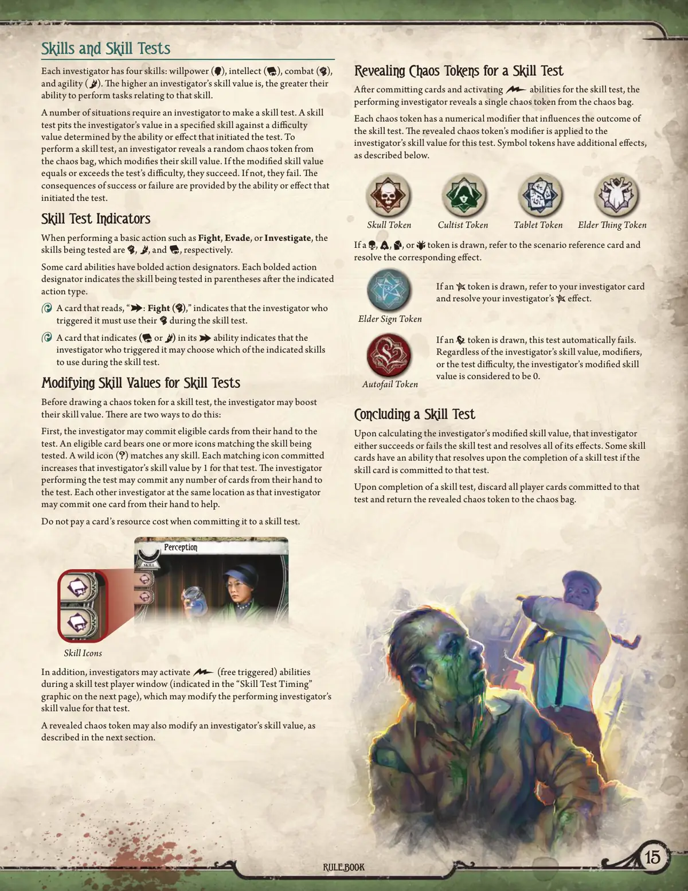
📝 第 15 页 AI 机翻对照（点击展开）
技能与技能测试
每位调查员有四项技能：意志力（）、智力（）、战斗（）和敏捷（）。调查员的技能值越高，他们在与该技能相关的任务中的能力就越强。
许多情况要求调查员进行技能测试。技能测试将调查员在指定技能中的数值与由发起测试的能力或效果决定的难度值进行比较。要进行技能测试，调查员从混沌牌袋中揭示一个随机的混沌指示物，该指示物会修改他们的技能值。如果修改后的技能值等于或超过测试的难度，他们就成功了。如果没有，他们就失败了。成功或失败的后果由发起测试的能力或效果提供。
技能测试指示器
在进行诸如战斗、闪避或调查等基础行动时，所测试的技能分别是、和。
一些卡牌能力有粗体的行动指示符。每个粗体行动指示符在指定的行动类型后的括号中表明所测试的技能。
Æ 一张写着": 战斗（）"的卡牌，表示触发它的调查员必须在技能测试中使用他们的。
Æ 一张在其能力中注明（或）的卡牌，表示触发它的调查员可以选择在技能测试中使用所指示的哪项技能。
为技能测试修改技能值
在为技能测试抽取混沌指示物之前，调查员可以提高他们的技能值。有两种方法可以做到这一点：
首先，调查员可以将他们手牌中符合条件的卡牌投入测试。符合条件的卡牌上有一个或多个与所测试技能相匹配的图标。万能图标（）匹配任何技能。每个匹配的图标投入都会将该调查员的技能值在该测试中提高1。进行测试的调查员可以投入他们手牌中的任意数量的卡牌到测试中。与该调查员在同一位置的其他每位调查员可以投入一张他们手牌中的卡牌来提供帮助。
将卡牌投入技能测试时，不需要支付该卡牌的资源费用。
此外，调查员可以在技能测试玩家窗口期间（如下一页的"技能测试时机"图所示）激活（免费触发）能力，这些能力可能会修改进行测试的调查员在该测试中的技能值。
揭示的混沌指示物也可能修改调查员的技能值，如下一节所述。
为技能测试揭示混沌指示物
在为技能测试投入卡牌和激活能力后，进行测试的调查员从混沌牌袋中揭示一个混沌指示物。每个混沌指示物都有一个数值修饰符，它会影响结果
技能测试。揭示的混沌指示物的修正值会应用于调查员在此测试中的技能值。符号指示物有额外效果，如下所述。
如果抽到、、或指示物，请查阅场景参考卡并解决相应效果。
如果抽到指示物，请查阅你的调查员卡并解决你的调查员的效果。
如果抽到指示物，此测试自动失败。
无论调查员的技能值、修正值或测试难度如何，调查员的修正后技能值被视为0。
结束技能测试
在计算调查员的修正后技能值后，该调查员要么成功要么失败技能测试，并解决其所有效果。一些技能卡具有在技能测试完成时触发的能力，前提是该技能卡已投入此测试。
技能测试完成后，弃置所有投入此测试的玩家卡，并将揭示的混沌指示物返回混沌袋。
骷髅指示物
邪教徒指示物
石板指示物
古神指示物
古神符文指示物
自动失败指示物
技能
感知
技能图标
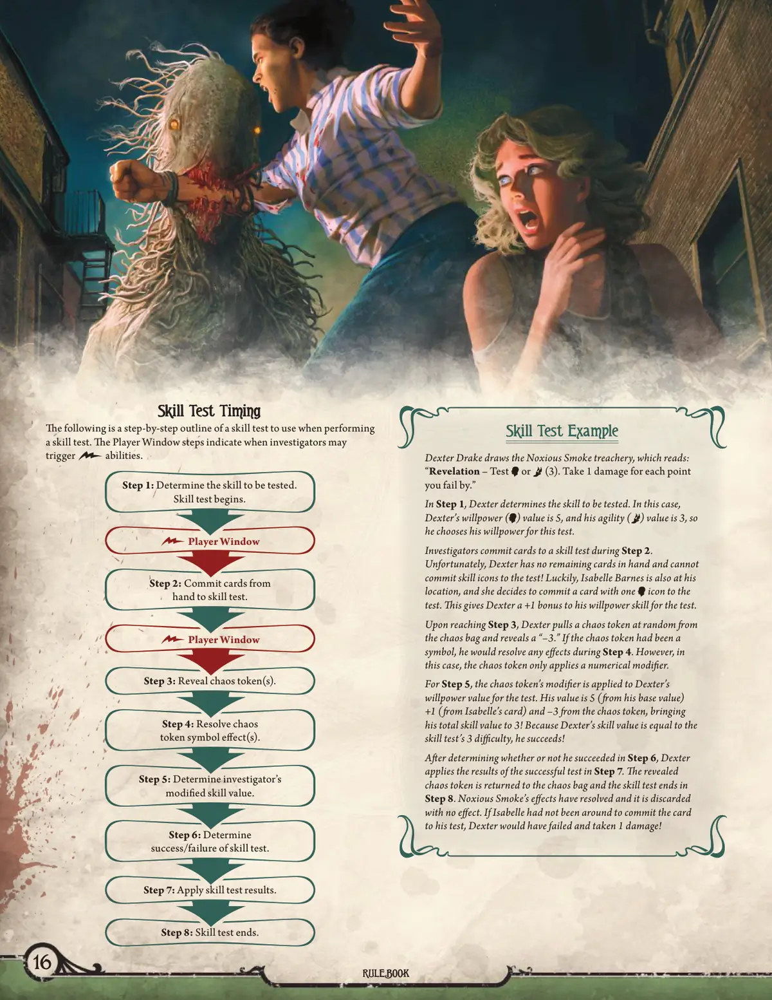
📝 第 16 页 AI 机翻对照（点击展开）
技能测试示例
德克斯特·德雷克抽到了"有毒烟雾"这张阴谋卡，内容如下：
"启示 – 测试 或 (3)。你每失败1点承受1点伤害。"
在第一步，德克斯特确定要测试的技能。在这种情况下，德克斯特的意志力()值为5，他的敏捷()值为3，因此他选择意志力进行此次测试。
调查员在第二步将牌投入技能测试。
不幸的是，德克斯特手牌已空，无法将技能图标投入测试！幸运的是，伊莎贝尔·巴恩斯也在他的位置，她决定投入一张带有1个图标的牌进行测试。这为德克斯特的意志力技能提供了+1加值。
到达第三步时，德克斯特从混沌袋中随机抽取一个混沌标记，揭示出"–3"。如果混沌标记是符号，他会在第四步解析任何效果。然而，在这种情况下，混沌标记仅应用数值修正。
对于第五步，混沌标记的修正值被应用于德克斯特的测试意志力值。他的值为5（基础值）+1（来自伊莎贝尔的牌）–3来自混沌标记，使他的总技能值达到3！因为德克斯特的技能值等于技能测试的3难度，他成功了！
在第六步确定是否成功后，德克斯特在第七步应用成功测试的结果。揭示的混沌标记被返回到混沌袋中，技能测试在第八步结束。"有毒烟雾"的效果已解析并被弃置，无效果。如果伊莎贝尔没有在旁边投入牌进行测试，德克斯特就会失败并承受1点伤害！
技能测试时机
技能测试时机
以下是进行技能测试时的分步指南。玩家窗口步骤表示调查员何时可以触发能力。
第一步：确定要测试的技能。
技能测试开始。
第二步：将手牌投入技能测试。
第四步：解析混沌标记符号效果。
第五步：确定调查员的修正后技能值。
第六步：确定技能测试的成功/失败。
第三步：揭示混沌标记。
玩家窗口
玩家窗口
第七步：应用技能测试结果。
第八步：技能测试结束。
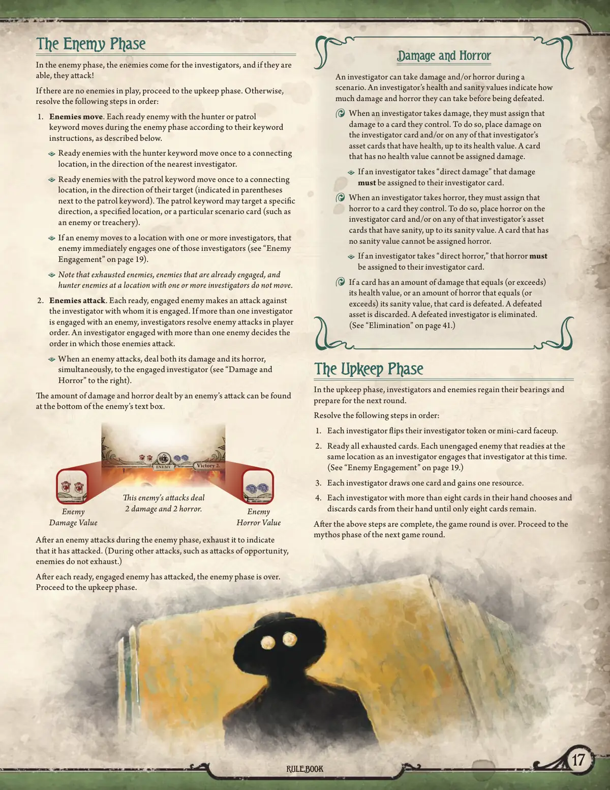
📝 第 17 页 AI 机翻对照（点击展开）
敌人阶段
在敌人阶段，敌人会来找调查员，如果他们能够，他们会发起攻击！
如果没有在场的敌人，继续进行维护阶段。否则，按顺序执行以下步骤：
- 敌人移动。每个拥有猎人或巡逻关键词的已准备敌人根据其关键词说明在敌人阶段移动，如下所述。
= 拥有猎人关键词的已准备敌人向最近的调查员方向，移动一次到相邻的位置。
= 拥有巡逻关键词的已准备敌人向其目标方向（在巡逻关键词旁的括号中指示），移动一次到相邻的位置。巡逻关键词可能针对特定方向、指定位置或特定的场景卡（如敌人或背叛卡）。
= 如果敌人移动到一个有一个或多个调查员的位置，该敌人立即与其中一个调查员交战（参见第19页的"敌人交战"）。
= 注意，已疲惫的敌人、已经交战的敌人，以及在有了一个或多个调查员的位置的猎人敌人不会移动。
- 敌人攻击。每个已准备、已交战的敌人向与其交战的调查员发起攻击。如果一个敌人与多个调查员交战，调查员按玩家顺序解决敌人攻击。与多个敌人交战的调查员决定这些敌人的攻击顺序。
= 当敌人攻击时，同时对其伤害和恐惧值施加给已交战的调查员（参见右侧的"伤害和恐惧"）。
敌人攻击造成的伤害和恐惧量可以在敌人文本框的底部找到。
敌人在敌人阶段攻击后，使其疲惫以表示它已经攻击过。（在其他攻击中，如机会攻击，敌人不会疲惫。）
在每个已准备、已交战的敌人攻击后，敌人阶段结束。继续进行维护阶段。
这个敌人的攻击造成
2点伤害和2点恐惧值。
敌人
胜利点 2。
敌人
伤害值
敌人
恐惧值
维护阶段
在维护阶段，调查员和敌人恢复方向，为下一轮做准备。
按顺序执行以下步骤：
- 每个调查员将其调查员指示物或迷你牌翻至正面朝上。
- 准备所有已疲惫的卡牌。每个在同一位置与调查员在一起的未交战敌人在此时与该调查员交战。（参见第19页的"敌人交战"）
- 每个调查员摸一张牌并获得一个资源。
- 每个手牌超过八张的调查员选择并弃置手牌，直到只剩八张牌。
完成上述步骤后，游戏回合结束。进入下一个游戏回合的神话阶段。
伤害与疯狂
调查员在场景过程中可能会受到伤害和/或疯狂。调查员的健康值和理智值表示他们在被击败前可以承受多少伤害和疯狂。
Æ 当调查员受到伤害时，他们必须将该伤害分配给他们控制的卡牌。为此，将伤害放置在调查员卡牌上和/或该调查员拥有的任何具有健康值的资产卡牌上，但不能超过其健康值。没有健康值的卡牌不能被分配伤害。
= 如果调查员受到"直接伤害"，该伤害必须被分配到他们的调查员卡牌上。
Æ 当调查员受到疯狂时，他们必须将该疯狂分配给他们控制的卡牌。为此，将疯狂放置在调查员卡牌上和/或该调查员拥有的任何具有理智值的资产卡牌上，但不能超过其理智值。没有理智值的卡牌不能被分配疯狂。
= 如果调查员受到"直接疯狂"，该疯狂必须被分配到他们的调查员卡牌上。
Æ 如果一张卡牌的伤害值等于（或超过）其健康值，或者疯狂值等于（或超过）其理智值，该卡牌就会被击败。被击败的资产被弃置。被击败的调查员被淘汰。（参见第41页的"淘汰"规则。）
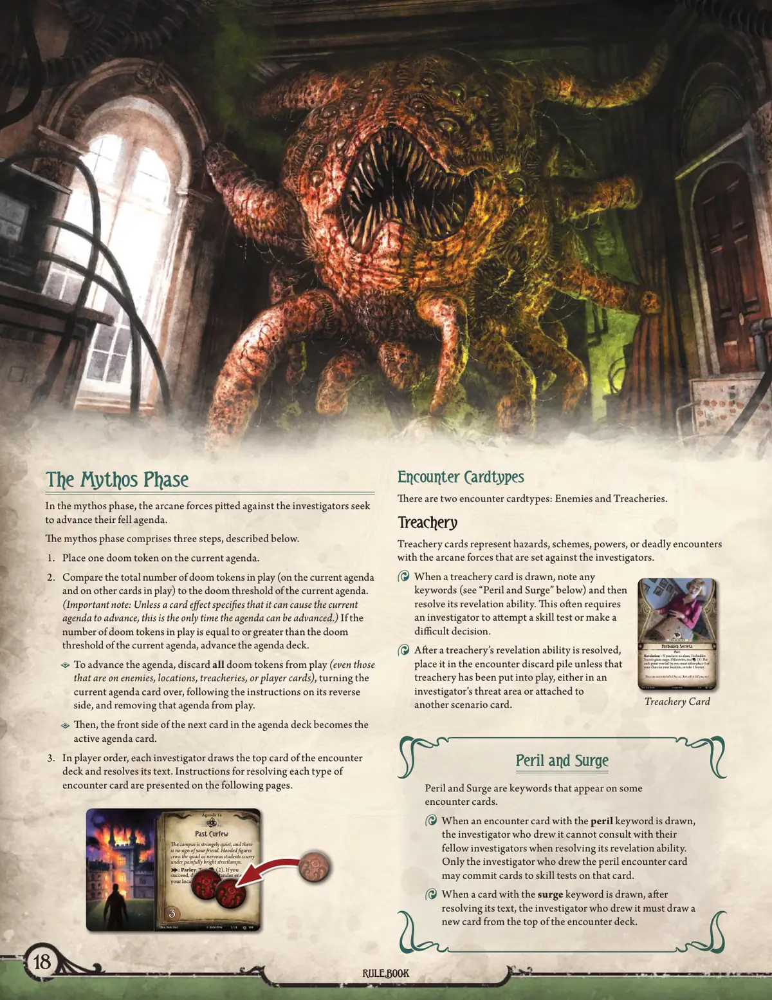
📝 第 18 页 AI 机翻对照（点击展开）
神话阶段
在神话阶段中，与调查员对抗的神秘力量试图推进他们邪恶的议程。
神话阶段包含三个步骤，描述如下。
- 在当前议程上放置一个厄运指示物。
- 将游戏中厄运指示物的总数（在当前议程上和游戏中其他卡牌上）与当前议程的厄运阈值进行比较。（重要提示：除非卡牌效果指定它可以导致当前议程推进，否则这是议程唯一可以被推进的时间。）如果游戏中厄运指示物的数量等于或大于当前议程的厄运阈值，推进议程牌库。
= 要推进议程，从游戏中弃置所有厄运指示物（即使那些在敌人、地点、阴谋或玩家卡牌上的），翻转当前议程卡，遵循其背面的说明，并将该议程从游戏中移除。
= 然后，议程牌库中下一张卡牌的正面成为当前议程卡。
- 按玩家顺序，每位调查员从遭遇牌库顶摸一张牌并解析其文本。解析每种类型遭遇卡牌的说明在后续页面中提供。
© 2026 FFG
插图：Nele Diel
2/11
议程 1a
校园异常安静，没有你朋友的任何迹象。兜帽人物穿过广场，紧张的学生们在刺眼的街灯下匆匆跑过。
：交涉。测试 (2)。如果你成功，在你所在地点弃置一个旁观者敌人。
宵禁
遭遇卡牌类型
有两种遭遇卡牌类型：敌人和阴谋。
阴谋
阴谋卡牌代表危害、计划、力量或与对抗调查员的神秘力量的致命遭遇。
Æ 当一张阴谋卡牌被摸到时，记录任何关键词（见下方的"危险和激增"），然后解析其揭示能力。这通常需要调查员尝试进行技能测试或做出艰难决定。
Æ 在阴谋的揭示能力被解析后，将其放入遭遇弃牌堆，除非该阴谋已被投入使用，要么在调查员的威胁区域中，要么附加到另一张场景卡牌上。
© 2026 FFG
插图：Sara Biddle
3/4
阴谋
他们说好奇心害死猫。但它也会害死你吗？
揭示 – 如果你没有线索，"禁忌秘密"获得激增。否则，测试 (3)。你每失败1点，必须要么将1个你的线索放在你所在地点，要么承受1点精神创伤。
契约。
禁忌秘密
阴谋卡牌
危险和激增
危险和激增是出现在一些遭遇卡牌上的关键词。
Æ 当一张带有危险关键词的遭遇卡牌被摸到时，摸到它的调查员不能与他们的
fellow investigators when resolving its revelation ability.
Only the investigator who drew the peril encounter card
may commit cards to skill tests on that card.
Æ When a card with the surge keyword is drawn, after
resolving its text, the investigator who drew it must draw a
new card from the top of the encounter deck.
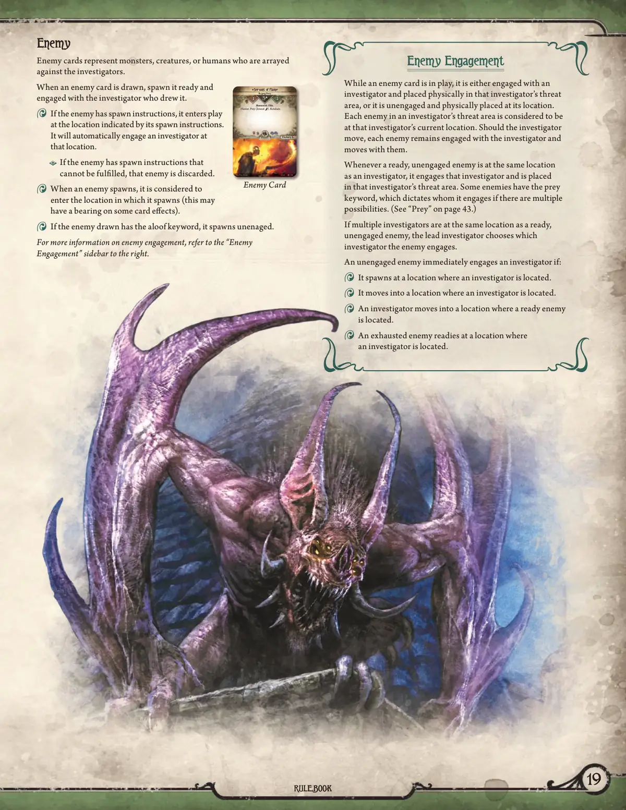
📝 第 19 页 AI 机翻对照（点击展开）
敌人
敌人卡牌代表与调查员对抗的怪物、生物或人类。
当抽到敌人卡牌时，将其以准备状态生成并与抽到它的调查员交战。
Æ 如果敌人有生成说明，它会在其生成说明指示的位置进入游戏。它会自动与该位置的调查员交战。
= 如果敌人的生成说明无法满足，则将该敌人弃置。
Æ 当敌人生成时，被认为进入其生成的位置（这可能对某些卡牌效果有影响）。
Æ 如果抽到的敌人有关键词"aloof"（疏离），它生成时不会交战。
关于敌人交战的更多信息，请参阅右侧的"敌人交战"侧边栏。
© 2026 FFG
插图：Peter Polach
10/11
敌人
猎人。猎物（最低威胁值）。反击。
类人生物。精英。
烈焰仆从
狂怒
胜利点 2。
敌人卡牌
敌人交战
当敌人卡牌在游戏中时，它要么与调查员交战并放置在该调查员的威胁区域，要么未交战并放置在其所在位置。
调查员威胁区域中的每个敌人都被认为在该调查员的当前位置。如果调查员移动，每个敌人仍与调查员交战并随他们一起移动。
每当一个准备状态、未交战的敌人与调查员在同一位置时，它会与该调查员交战并放置在该调查员的威胁区域。一些敌人有关键词"猎物"，这决定了如果有多种可能性时，它会与谁交战。（参见第43页的"猎物"）
如果多个调查员与一个准备状态、未交战的敌人在同一位置，则主调查员选择该敌人与哪个调查员交战。
未交战的敌人在以下情况下立即与调查员交战：
Æ 它在调查员所在的位置生成。
Æ 它移动到调查员所在的位置。
Æ 调查员移动到一个有准备状态敌人的位置。
Æ 一个疲惫的敌人在调查员所在的位置恢复准备状态。
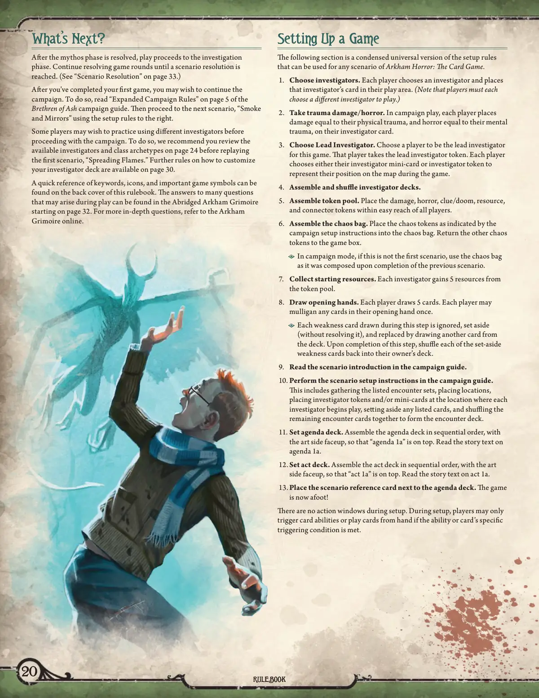
📝 第 20 页 AI 机翻对照（点击展开）
接下来是什么？
在神话阶段解决后，游戏进入调查阶段。继续解决游戏轮，直到达到场景解决。（参见第33页的"场景解决"。）
完成你的第一局游戏后，你可能希望继续战役。为此，请阅读《灰烬兄弟会战役指南》第5页的"扩展战役规则"。然后使用右侧的设置规则进行下一个场景"烟雾与镜面"。
一些玩家可能希望在继续战役前练习使用不同的调查员。为此，我们建议你在重玩第一个场景"蔓延火焰"之前，先查看第24页上可用的调查员和职业原型。关于如何自定义你的调查员牌组的更多规则可在第30页找到。
关键词、图标和重要游戏符号的快速参考可以在本规则书的封底找到。游戏中可能出现的许多问题的答案可以在第32页开始的《阿卡姆秘术简编》中找到。对于更深入的问题，请参考在线的《阿卡姆秘术》。
设置游戏
以下部分是设置规则的精简通用版本，可用于《阿卡姆恐怖：卡牌游戏》的任何场景。
- 选择调查员。每位玩家选择一名调查员，并将该调查员的牌放置在其游戏区域。（注意玩家必须各自选择不同的调查员进行游戏。）
- 承受创伤伤害/恐怖。在战役游戏中，每位玩家在其调查员牌上放置等同于其身体创伤的伤害，以及等同于其精神创伤的恐怖。
- 选择首席调查员。选择一名玩家作为本局游戏的首席调查员。该玩家获得首席调查员指示物。每位玩家选择其调查员迷你牌或调查员指示物来代表其在游戏地图上的位置。
- 组洗并洗混调查员牌组。
- 组建指示物池。将伤害、恐怖、线索/厄运、资源和连接指示物放置在所有玩家容易触及的位置。
- 组建混沌袋。根据战役设置说明将混沌指示物放入混沌袋中。将其他混沌指示物放回游戏盒中。
= 在战役模式中，如果这不是第一个场景，请使用完成前一个场景时组成的混沌袋。
- 收集起始资源。每位调查员从指示物池中获得5个资源。
- 抽取起始手牌。每位玩家抽取5张牌。每位玩家可以重抽其起始手牌中的任意牌一次。
= 在此步骤中抽到的每张弱点牌都被忽略，被置于一旁（不解决它），并通过再抽一张牌来替换。
牌库。完成此步骤后，将每组被单独放弱的弱点牌洗回其拥有者的牌库中。
- 阅读战役指南中的剧情介绍。
- 执行战役指南中的剧情设置说明。这包括收集列出的遭遇牌组、放置地点、在每个调查员开始游戏的位置放置调查员指示物和/或迷你卡牌、将列出的牌单独放置，并将剩余的遭遇牌洗在一起形成遭遇牌库。
- 设置议程牌库。按顺序组装议程牌库，艺术面朝上，使"议程1a"位于顶部。阅读议程1a上的故事文本。
- 设置幕牌库。按顺序组装幕牌库，艺术面朝上，使"幕1a"位于顶部。阅读幕1a上的故事文本。
- 将剧情参考卡放在议程牌库旁边。游戏现在开始了！
设置阶段没有行动窗口。在设置期间，玩家只有在能力或卡牌的具体触发条件满足时，才能触发卡牌能力或从手牌中打出卡牌。
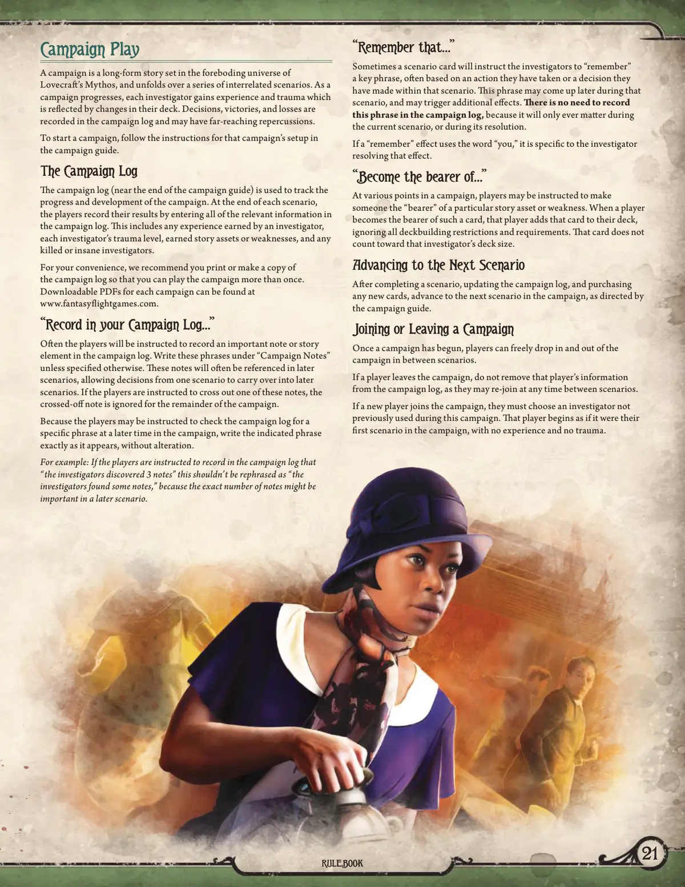
📝 第 21 页 AI 机翻对照（点击展开）
战役模式
战役是一个以洛夫克拉夫特神话（Lovecraft's Mythos）中令人不寒而栗的宇宙为背景的长篇故事，通过一系列相互关联的场景展开。随着战役的进行，每位调查员会获得经验和创伤，这些变化会反映在他们的牌库中。决定、胜利和失败都会被记录在战役日志中，并可能产生深远的影响。
要开始一场战役，请遵循战役指南中该战役设置的说明。
战役日志
战役日志（位于战役指南末尾）用于追踪战役的进展和发展。在每个场景结束时，玩家通过在战役日志中记录所有相关信息来记录他们的结果。这包括调查员获得的任何经验、每位调查员的创伤等级、获得的故事资产或弱点，以及任何死亡或疯狂的调查员。
为方便起见，我们建议您打印或复制一份战役日志，以便您可以多次进行战役。
每个战役的可下载PDF文件可以在 www.fantasyflightgames.com 找到。
"在您的战役日志中记录..."
玩家经常会被指示在战役日志中记录重要注释或故事元素。除非另有说明，否则请将这些短语写在"战役注释"下。这些注释通常会在后续场景中被引用，使一个场景中的决定能够延续到后续场景中。如果玩家被指示划掉其中一条注释，则被划掉的注释在战役的剩余部分将被忽略。
因为玩家可能会在战役的后续时间被指示检查战役日志中的特定短语，所以请完全按照显示的短语记录，不要做任何修改。
例如：如果玩家被指示在战役日志中记录"调查员发现了3张笔记"，这不应被改写为"调查员发现了一些笔记"，因为笔记的确切数量在后续场景中可能很重要。
"记住..."
有时场景卡会指示调查员"记住"一个关键短语，通常基于他们在该场景中采取的行动或做出的决定。这个短语可能会在该场景的后续出现，并可能触发额外效果。无需将此短语记录在战役日志中，因为它只会在当前场景或其结算过程中重要。
如果一个"记住"效果使用了"你"这个词，它仅适用于解决该效果的调查员。
"成为...的持有者"
在战役的各个阶段，玩家可能会被指示让某人成为特定故事资产或弱点的"持有者"。当玩家
成为此类卡牌的持有者时，该玩家将该卡牌加入其牌库，
忽略所有牌库构建限制和要求。该卡牌不计入该调查员的牌库大小。
进入下一场景
完成一个场景、更新战役日志并购买任何新卡牌后，
按照战役指南的指示，进入战役中的下一个场景。
加入或离开战役
一旦战役开始，玩家可以在场景之间自由地加入和离开战役。
如果玩家离开战役，不要将该玩家的信息从战役日志中移除，
因为他们可以在任何场景之间重新加入。
如果新玩家加入战役，他们必须选择一个在本战役中
尚未使用过的调查员。该玩家开始时仿佛是他们在战役中的第一个场景，
没有经验也没有创伤。
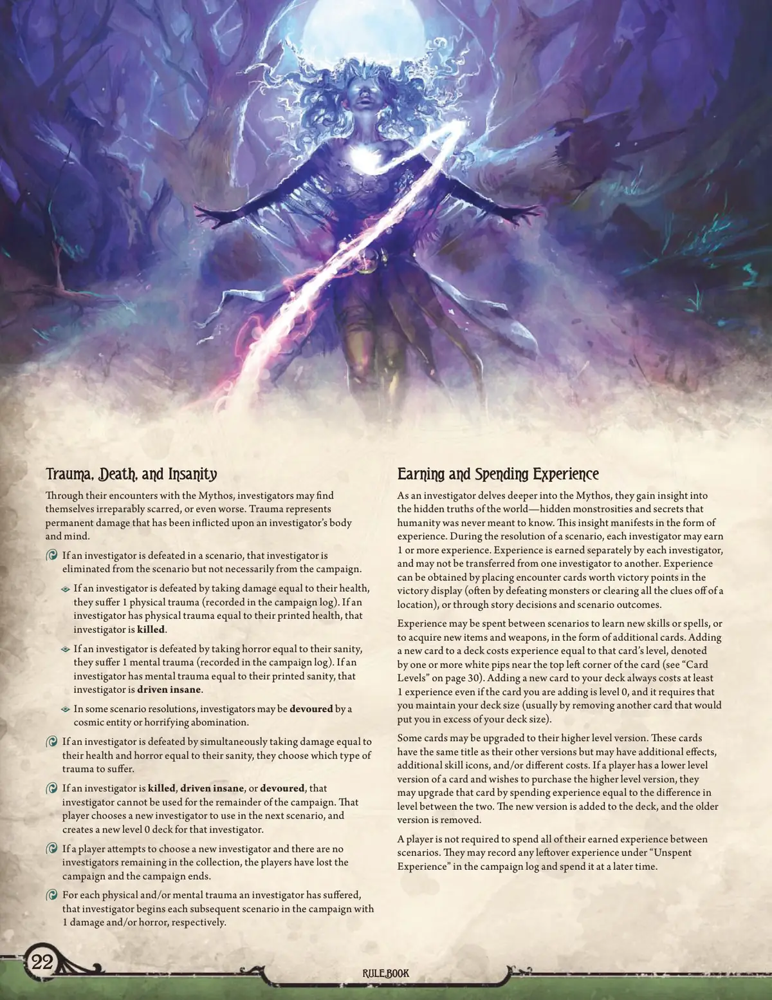
📝 第 22 页 AI 机翻对照（点击展开）
创伤、死亡与疯狂
通过与克苏鲁神话的遭遇，调查员可能会发现自己受到了不可弥补的伤害，甚至更糟。创伤代表对调查员身心造成的永久性伤害。
Æ 如果调查员在一场剧本中被击败，该调查员将从该剧本中被淘汰，但不一定被从整个战役中淘汰。
= 如果调查员因受到等同于其生命值的伤害而被击败，他们会遭受1点身体创伤（记录在战役日志中）。如果调查员的身体创伤等于其印刷生命值，该调查员死亡。
= 如果调查员因受到等同于其理智值的疯狂而被击败，他们会遭受1点精神创伤（记录在战役日志中）。如果调查员的精神创伤等于其印刷理智值，该调查员陷入疯狂。
= 在某些剧本结局中，调查员可能被宇宙实体或恐怖的怪物吞噬。
Æ 如果调查员因同时受到等同于其生命值的伤害和等同于其理智值的疯狂而被击败，他们选择遭受哪种类型的创伤。
Æ 如果调查员死亡、陷入疯狂或被吞噬，该调查员在战役的剩余时间内不能使用。该玩家选择一名新的调查员在下一个剧本中使用，并为该调查员创建一个新的0级牌库。
Æ 如果玩家尝试选择新调查员但收藏中已无调查员可用，玩家们已输掉战役，战役结束。
Æ 对于调查员遭受的每点身体和/或精神创伤，该调查员在战役中每个后续剧本开始时，分别受到1点伤害和/或疯狂。
获得与消耗经验
随着调查员深入探索克苏鲁神话，他们对世界的隐藏真相——人类本不该知晓的隐藏怪物和秘密——获得了更深的洞察。这种洞察以经验的形式显现。在剧本解决过程中，每名调查员可以获得1点或更多经验。经验由每名调查员单独获得，不能从一个调查员转移到另一个调查员。经验可以通过将获得胜利点数的遭遇卡放入胜利展示区（通常是通过击败怪物或清除某个位置上的所有线索）获得，或通过故事决定和剧本结局获得。
经验可以在剧本之间消耗，以学习新的技能或法术，或获取新的物品和武器，形式为额外的卡牌。向牌库添加新卡牌的成本等于该卡牌的等级，由卡牌左上角附近的一个或多个白色圆点表示（参见"卡牌"部分）。
（参见第30页的"等级"）。向你的牌库添加一张新牌总是至少需要1点经验值，即使你添加的是0级牌，并且这要求你保持你的牌库大小（通常是通过移除另一张会使你的牌库大小超限的牌）。
有些牌可以升级到它们的高级版本。这些牌与其他版本的牌具有相同的标题，但可能有额外的效果、额外的技能图标和/或不同的费用。如果一个玩家拥有某张牌的较低版本并希望购买其高级版本，他们可以通过花费等于两个版本之间等级差异的经验值来升级该牌。新版本被添加到牌库中，旧版本被移除。
玩家不必在两个场景之间花费所有获得的经验值。他们可以在战役日志中将任何剩余的经验值记录在"未使用经验值"下，并在稍后使用它。
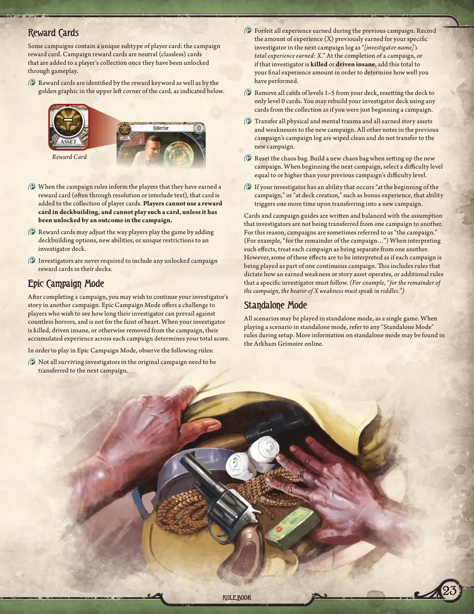
📝 第 23 页 AI 机翻对照（点击展开）
奖励卡牌
某些战役包含一种独特的玩家卡牌子类型：战役奖励卡牌。战役奖励卡牌是中立的（无职业的）卡牌，一旦通过游戏玩法解锁，就会被添加到玩家的收藏中。
Æ 奖励卡牌通过奖励关键词以及卡牌左上角的金色图形来识别，如下图所示。
Æ 当战役规则告知玩家他们已获得奖励卡牌（通常通过解决文本或插曲文本）时，该卡牌会被添加到玩家卡牌收藏中。玩家不能在构筑牌组时使用奖励卡牌，也不能打出这样的卡牌，除非它已在战役中被某个结果解锁。
Æ 奖励卡牌可能会通过为调查员牌组增加构筑选项、新能力或独特限制来调整玩家玩游戏的方式。
Æ 调查员从不被要求将任何已解锁的战役奖励卡牌包含在他们的牌组中。
史诗战役模式
完成一个战役后，您可能希望继续您调查员的故事，进入另一个战役。史诗战役模式为那些希望看到他们的调查员能在无数恐怖面前坚持多久的玩家提供挑战，不适合胆小者。当您的调查员被杀死、精神失常或以其他方式从战役中移除时，他们在每个战役中积累的经验决定了您的总分。
要进入史诗战役模式，请遵循以下规则：
Æ 原始战役中并非所有幸存的调查员都需要转移到下一个战役。
奖励卡牌
中立
资产
收藏家
—
Æ 放弃在前一个战役中获得的所有经验。将之前为您的特定调查员获得的经验量（X）记录在下一个战役日志中，为"[调查员姓名]获得的总经验：X"。在一个战役完成时，或者如果该调查员被杀死或精神失常，将此总数添加到您的最终经验量中，以确定您的表现有多好。
Æ 从您的牌组中移除所有1-5级的卡牌，将牌组重置为只包含0级卡牌。您可以使用收藏中的任何卡牌来重建您的调查员牌组，就像您刚开始一个战役一样。
Æ 将所有身体和精神创伤以及所有获得的故事资产和弱点转移到新战役中。前一个战役战役日志中的所有其他笔记都会被清除，不会转移到新战役中。
Æ 重置混沌袋。在设置新战役时构建一个新的混沌袋。开始下一个战役时，选择一个难度级别等于或高于您前一个战役的难度级别。
Æ 如果您的调查员有一个能力是在"回合开始时"发生，
"战役中"或"在牌库创建时"的能力，例如额外经验值，在转入新战役时会额外触发一次。
卡牌和战役指南的编写和平衡都基于调查员不会从一个战役转移到另一个战役的假设。
因此，战役有时被称为"该战役"。（例如，"在战役的剩余时间内..."）在解释此类效果时，将每个战役视为相互独立的。
然而，其中一些效果应被解释为每个战役都是作为一个连续战役的一部分在进行游戏。这包括规定已获得的弱点或故事资产如何运作的规则，或特定调查员必须遵守的额外规则。（例如，"在战役的剩余时间内，X弱点的持有者必须用谜语说话。"）
独立模式
所有场景都可以作为单局游戏以独立模式进行游玩。在以独立模式游玩场景时，在设置阶段参考任何"独立模式"规则。有关独立模式的更多信息可以在《Arkham Grimoire》在线找到。
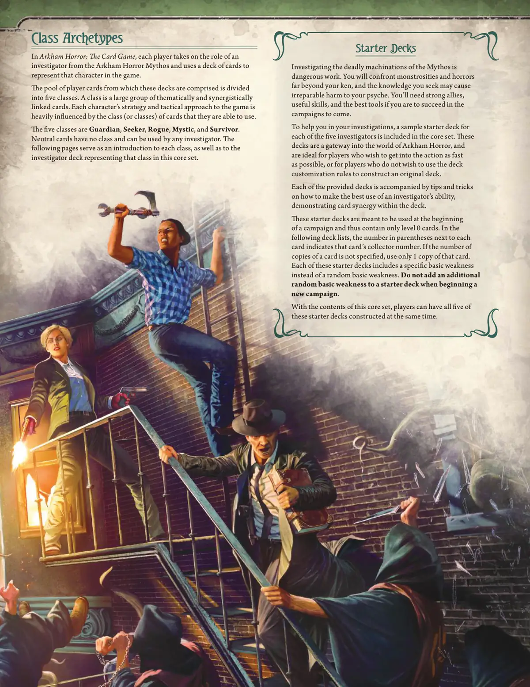
📝 第 24 页 AI 机翻对照（点击展开）
职业原型
在《克苏鲁的呼唤：卡牌游戏》中，每位玩家扮演一位来自克苏鲁神话的调查员，并使用一副卡牌来代表游戏中的这个角色。
构成这些牌库的玩家卡牌池被分为五个职业。职业是一组主题上和协同效应上相互关联的大型卡牌集合。每个角色的游戏策略和战术方法很大程度上受到他们能够使用的职业（或多个职业）卡牌的影响。
这五个职业是守护者、探索者、盗贼、神秘主义者和幸存者。
中立卡牌没有职业，任何调查员都可以使用。以下页面作为每个职业的介绍，以及在本核心集中代表该职业的调查员牌库。
起始牌库
调查神话的致命阴谋是危险的工作。你将 confront 远超你理解的怪物和恐怖，而你寻求的知识可能对你的心理造成不可弥补的伤害。如果你想在即将到来的战役中取得成功，你需要强大的盟友、有用的技能和最好的工具。
为了帮助你的调查，核心集中包含了五位调查员的示例起始牌库。这些牌库是进入克苏鲁的呼唤世界的门户，非常适合希望尽快投入游戏的玩家，或者不希望使用牌库自定义规则来构建原创牌库的玩家。
每个提供的牌库都附有关于如何最好地利用调查员能力的技巧和窍门，展示了牌库内的卡牌协同效应。
这些起始牌库应在战役开始时使用，因此只包含0级卡牌。在以下牌库列表中，每张卡牌旁边的括号中的数字表示该卡牌的收藏编号。如果未指定某张卡牌的数量，则只使用该卡牌的1张副本。
每个起始牌库都包含一个特定的基本弱点，而不是随机的基本弱点。在开始新战役时，不要为起始牌库额外添加随机的基本弱点。
使用本核心集的内容，玩家可以同时构建这五个起始牌库。
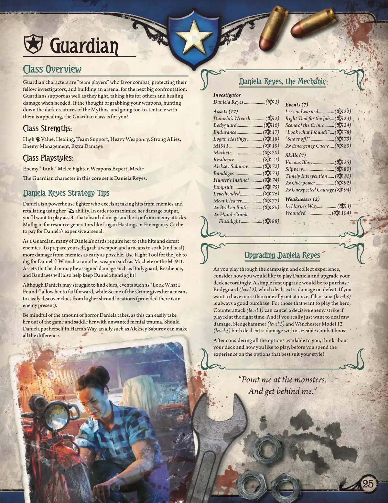
📝 第 25 页 AI 机翻对照（点击展开）
Daniela Reyes 策略提示
Daniela 是一名强大的战士，擅长承受敌人的攻击并使用她的 能力进行反击。为了最大化她的伤害输出，你应该使用能够吸收敌人攻击造成的伤害和恐惧值的资产。抽牌时寻找像 Logan Hastings 或 Emergency Cache 这样的资源生成器，以便支付 Daniela 昂贵的军备费用。
作为守卫者，Daniela 的许多卡牌要求她承受打击并击败敌人。为了做好准备，尽早获取一件武器以及一种能够吸收（和治疗）更多敌人伤害的方法。使用 Right Tool for the Job 来寻找 Daniela 的 Wrench 或其他武器，例如 Machete 或 M1911。能够治疗或可以分配伤害的资产，如 Bodyguard、Resilience 和 Bandages，也将帮助保持 Daniela 的战斗状态！
尽管 Daniela 可能难以找到线索，但诸如"Look What I Found!"之类的事件允许她向前推进，而 Scene of the Crime 则为她提供了一种从更高隐蔽值位置轻松发现线索的方法（前提是有敌人存在）。
注意 Daniela 承受的恐惧值数量，因为这很容易让她被淘汰并给她带来不想要的精神创伤。如果 Daniella 将自己置于 In Harm's Way 的境地，像 Aleksey Saburov 这样的盟友可能会起到决定性作用。
Daniela Reyes，机械师
调查员
Daniela Reyes.....................(
1)
资产 (17)
Daniela's Wrench............. (
2)
Bodyguard.........................(
16)
Endurance.........................(
17)
Logan Hastings...............(
18)
M1911................................(
19)
Machete.............................(
20)
Resilience...........................(
21)
Aleksey Saburov.............(
72)
Bandages...........................(
73)
Hunter's Instinct.............(
74)
Jumpsuit............................(
75)
Levelheaded.....................(
76)
Meat Cleaver...................(
77)
2x Broken Bottle.............(
86)
2x Hand-Crank
Flashlight.....................(
88)
事件 (7)
Lesson Learned...............(
22)
Right Tool for the Job....(
23)
Scene of the Crime..........(
24)
"Look what I found!"....(
78)
"Shove off!".......................(
79)
2x Emergency Cache.....(
89)
技能 (7)
Vicious Blow....................(
25)
Slippery.............................(
80)
Timely Intervention.......(
81)
2x Overpower..................(
92)
2x Unexpected Courage (
94)
弱点 (2)
In Harm's Way.................. (
3)
Wounded........................(
104)
守卫者
职业概览
守卫角色是"团队玩家"，他们偏爱战斗、保护同伴调查员，并为下一次重大冲突建立军备库。
守护者
守护者在战斗中同样提供支持，为他人承受伤害并在需要时治疗伤害。如果你认为拿起武器，猎杀神话生物的黑暗生物，并与它们正面交锋很有吸引力，那么守护者职业适合你！
职业优势：
高价值、治疗、团队支持、重型武器、强大的盟友、敌人管理、额外伤害
职业玩法：
敌人"坦克"、近战战士、武器专家、医疗兵
本核心套件中的守护者角色是 Daniela Reyes。
"指引我朝向怪物。
然后跟在我身后。"
升级 Daniela Reyes
随着你在战役中游玩并收集经验值，考虑你希望如何游玩 Daniela 并相应地升级你的牌库。一个简单的首次升级是购买 Bodyguard（2级），它在击败时造成额外伤害。如果你想同时拥有多个盟友，Charisma（3级）总是一个不错的选择。对于那些想要扮演英雄的玩家，Counterattack（1级）如果在合适的时机打出，可以取消决定性的敌人攻击。而如果你真的只想造成原始伤害，Sledgehammer（3级）和 Winchester Model 12（5级）都能通过可观的战斗提升造成额外伤害。
在考虑了所有可用的选项后，思考你的牌库和你喜欢的玩法方式，然后再将经验值花费在最适合你风格的选项上！
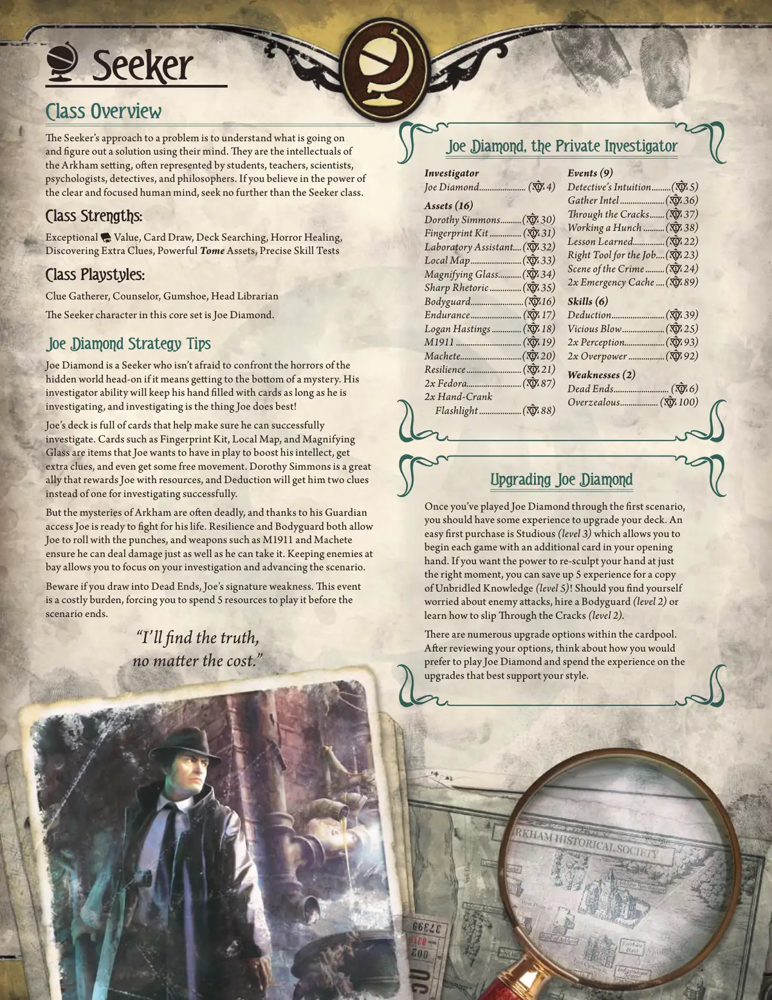
📝 第 26 页 AI 机翻对照（点击展开）
乔·钻石策略提示
乔·钻石是一位调查员，他不害怕直面隐藏世界的恐怖，如果这意味着要揭开谜底的话。只要他在进行调查，他的调查员能力就会让他的手牌保持充足，而调查正是乔最擅长的事情！
乔的牌库充满了帮助他成功进行调查的卡牌。例如指纹套件、本地地图和放大镜这些物品，乔希望它们在场上，以提高他的智力、获得额外线索，甚至获得一些免费移动。多萝西·西蒙斯是一位优秀的盟友，她会为乔提供资源，而推理则能让他在成功调查时获得两个线索而不是一个。
但阿卡姆的谜题往往是致命的，多亏了他的守护者权限，乔已经准备好为自己的生命而战。韧性和保镖都让乔能够承受打击，而像M1911手枪和砍刀这样的武器则确保他造成的伤害和他承受的伤害一样多。让敌人远离你，让你能够专注于调查和推进剧情。
如果你抽到死胡同，乔的标志性弱点，要小心。这个事件是一个沉重的负担，要求你在剧情结束前花费5资源来打出它。
乔·钻石，私家侦探
调查员
乔·钻石...................... (4)
资产 (16)
多萝西·西蒙斯..........(30)
指纹套件................(31)
实验室助理....(32)
本地地图........................(33)
放大镜...........(34)
犀利的言辞................(35)
保镖.........................(16)
耐力.........................(17)
洛根·黑斯廷斯...............(18)
M1911................................(19)
砍刀.............................(20)
韧性...........................(21)
2x 软呢帽..........................(87)
2x 手摇
手电筒.....................(88)
事件 (9)
侦探直觉.........(5)
收集情报......................(36)
穿过裂缝.......(37)
凭直觉行事...........(38)
吸取教训...............(22)
合适的工具....(23)
犯罪现场..........(24)
2x 紧急补给.....(89)
技能 (6)
推理.........................(39)
猛击....................(25)
2x 感知...................(93)
2x 压倒..................(92)
弱点 (2)
死胡同.......................... (6)
过度热情..........(100)
调查员
职业概览
调查员解决问题的方法是理解正在发生的事情，并运用他们的头脑找出解决方案。他们是阿卡姆背景中的知识分子，通常由学生、教师、科学家代表，
心理学家、侦探和哲学家。如果你相信清晰专注的人类心智的力量，那么寻踪者（Seeker）类就是你不二之选。
类别优势：
极高的价值、卡牌抽取、牌库搜索、恐惧治疗、发现额外线索、强大的典籍资产、精确的技能测试
游戏风格：
线索收集者、顾问、侦探、首席图书管理员
本核心包中的寻踪者角色是乔·戴蒙德（Joe Diamond）。
升级乔·戴蒙德
当你完成了第一个场景后，你应该有足够的经验来升级你的牌库。一个简单初期的购买是"勤学不倦"（Studious，3级），它允许你在每局游戏开始时在起手牌中额外获得一张牌。如果你想在关键时刻重塑手牌的力量，可以攒够5点经验购买一份"无界知识"（Unbridled Knowledge，5级）！如果你发现自己担心敌人的攻击，可以雇佣一名"保镖"（Bodyguard，2级）或学习如何"钻空子"（Through the Cracks，2级）。
卡牌池中有众多升级选项。在考虑了你的选择后，思考你更倾向于如何玩乔·戴蒙德，并将经验投入到最能支持你风格的升级上。
"我会找到真相，
不惜任何代价。"
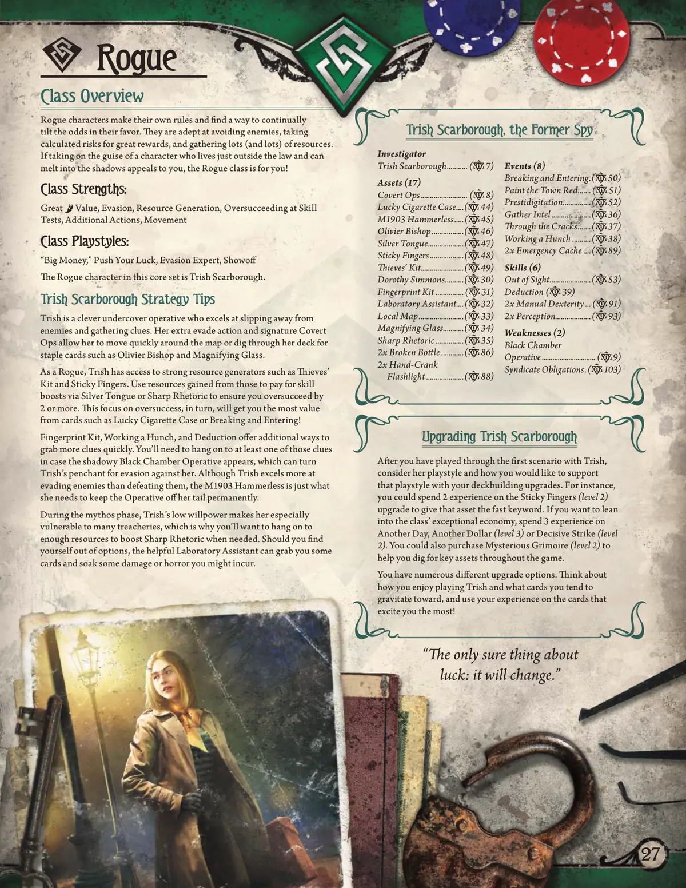
📝 第 27 页 AI 机翻对照（点击展开）
特里希·斯卡伯勒策略提示
特里希是一位聪明的特工，擅长摆脱敌人并收集线索。她的额外闪避行动和招牌秘密行动能力让她能够快速在地图上移动或翻找牌库寻找核心卡牌，如奥利维尔·毕晓普和放大镜。
作为一名盗贼，特里希可以使用强大的资源生成卡，如盗贼工具包和粘手。利用这些获得的资源通过银舌或犀利雄辩来支付技能提升，确保你超额成功2点或更多。这种对超额成功的关注，反过来会让你从幸运香烟盒或破门而入等卡牌中获得最大价值。
指纹工具包、凭直觉行事和推理提供了快速获取更多线索的其他方式。你需要保留至少一条线索，以防神秘的黑色特工出现，这可能会将特里希对闪避的偏好反过来对付她。尽管特里希更擅长闪避敌人而非击败他们，但M1903无声手枪正是她永久摆脱特工追击所需的。
在神话阶段，特里希的低意志力使她对许多背叛特别脆弱，这就是为什么你需要保留足够的资源来在需要时提升犀利雄辩。如果你发现自己没有选择，有用的实验室助手可以为你获取一些卡牌并吸收你可能受到的伤害或恐怖。
特里希·斯卡伯勒，前间谍
调查员
特里希·斯卡伯勒........... (7)
资产 (17)
秘密行动......................... (8)
幸运香烟盒....(44)
M1903无声手枪.....(45)
奥利维尔·毕晓普.................(46)
银舌...................(47)
粘手...................(48)
盗贼工具包.......................(49)
多萝西·西蒙斯..........(30)
指纹工具包................(31)
实验室助手....(32)
本地地图........................(33)
放大镜...........(34)
犀利雄辩................(35)
2x 破碎的酒瓶.............(86)
2x 手摇
手电筒.....................(88)
事件 (8)
破门而入。(50)
狂欢夜.......(51)
戏法...............(52)
收集情报......................(36)
穿过裂缝.......(37)
凭直觉行事...........(38)
2x 紧急缓存.....(89)
技能 (6)
隐身......................(53)
推理 (39)
2x 手部灵巧....(91)
2x 感知...................(93)
弱点 (2)
黑色特工
...............................(9)
犯罪集团义务。 (103)
盗贼
职业概览
盗贼角色制定自己的规则，并找到持续不断的方法
使局势向他们倾斜。他们擅长避开敌人，为丰厚回报承担计算过的风险，并收集大量（非常大量的）资源。
如果你扮演一个游走在法律边缘、能融入阴影的角色吸引你，那么盗贼职业适合你！
职业优势：
极高的价值，闪避，资源生成，在技能测试中过度成功，额外行动，移动
职业玩法风格：
"大钱"，推运气，闪避专家，炫耀
核心套件中的盗贼角色是特里什·斯卡伯勒(Trish Scarborough)。
升级特里什·斯卡伯勒
当你用特里什完成第一个场景后，考虑她的玩法风格以及你希望如何通过构筑升级来支持这种风格。例如，你可以花费2点经验值购买"灵巧之手"(Sticky Fingers，2级)升级，为该资产添加快速(fast)关键词。如果你想专注于该职业出色的经济能力，可以花费3点经验值购买"又一天，又一美元"(Another Day, Another Dollar，3级)或"果断打击"(Decisive Strike，2级)。你也可以购买"神秘魔典"(Mysterious Grimoire，2级)来帮助你在游戏中挖掘关键资产。
你有许多不同的升级选择。思考你喜欢如何游玩特里什，以及你倾向于选择哪些卡牌，并将你的经验值花在最让你兴奋的卡牌上！
"关于运气唯一确定的事：它会改变。"
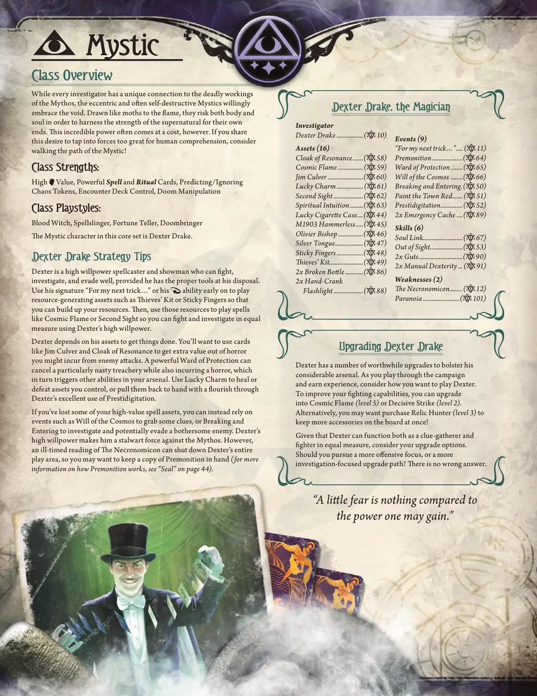
📝 第 28 页 AI 机翻对照（点击展开）
德克斯特·德雷克策略提示
德克斯特是一名意志力强大的施法者兼魔术师，只要手头有合适的工具，他就能很好地战斗、调查和闪避。尽早使用他的标志性"接下来是我的表演时刻..."或他的能力来打出像"盗贼工具包"或"粘手"这样的资源生成资产，这样你就能积累资源。然后，使用这些资源来打出"宇宙之火"或"第二视觉"等法术，这样你就能利用德克斯特的高意志力在战斗和调查方面取得平衡。
德克斯特依靠他的资产来完成事情。你会想要使用像"吉姆·卡尔弗"和"共鸣斗篷"这样的卡牌，从敌人攻击可能造成的恐惧中获得额外价值。一个强大的"防护符"可以取消特别恶毒的阴谋，同时也会造成恐惧，这反过来又会触发你军火库中的其他能力。使用"幸运护身符"来治疗或击败你控制的资产，或者通过德克斯特对"戏法"的出色运用，将它们收回手牌。
如果你失去了一些高价值的法术资产，你可以转而依靠"宇宙意志"之类的事件来获取一些线索，或者"破门而入"来调查并可能避开一个烦人的敌人。德克斯特的高意志力使他成为对抗神话的坚定力量。然而，不合时宜地阅读"死灵之书"可能会关闭德克斯特的整个游戏区域，所以你可能想在手头保留一份"预感"的副本（有关预感如何工作的更多信息，请参见第44页的"封印"）。
德克斯特·德雷克，魔术师
调查员
德克斯特·德雷克...................(
10)
资产 (16)
共鸣斗篷.......(
58)
宇宙火焰..................(
59)
吉姆·卡尔弗.........................(
60)
幸运护身符...................(
61)
第二视觉.....................(
62)
精神直觉..........(
63)
幸运香烟盒....(
44)
M1903无击锤手枪.....(
45)
奥利维尔·主教.................(
46)
银舌...................(
47)
粘手...................(
48)
盗贼工具包.......................(
49)
2x 破碎的酒瓶.............(
86)
2x 手摇
手电筒.....................(
88)
事件 (9)
"接下来是我的表演时刻.....(
11)
预感.....................(
64)
防护符.........(
65)
宇宙意志 ........(
66)
破门而入.(
50)
狂欢夜.......(
51)
戏法...............(
52)
2x 紧急补给.....(
89)
技能 (6)
灵魂链接...........................(
67)
隐身......................(
53)
2x 胆量..............................(
90)
2x 手灵巧....(
91)
弱点 (2)
死灵之书.........(
12)
偏执..........................(
101)
神秘
职业概览
虽然每位调查员都与神话的致命运作有着独特的联系，但古怪且常常自我毁灭的神秘主义者却自愿拥抱虚空。他们如同飞蛾扑火般被吸引，冒着身体和灵魂的危险，为了自己的目的而驾驭超自然的力量。然而，这种不可思议的力量往往需要付出代价。如果你也渴望 tapping into（利用）那些远超人类理解范畴的力量，不妨考虑踏上神秘主义者的道路！
职业优势：
高 价值，强大的法术和仪式卡牌，预测/忽略混沌标记，遭遇牌库控制，厄运操控
职业玩法：
血巫，法术专家，占卜师，厄运使者
本核心盒中的神秘主义角色是 Dexter Drake（德克斯特·德雷克）。
升级 Dexter Drake
Dexter 有许多值得升级的选择来增强他可观的武器库。当你进行战役并获得经验时，考虑你想要如何玩 Dexter。为了提高你的战斗能力，你可以升级为 Cosmic Flame（宇宙之火，5级）或 Decisive Strike（果断打击，2级）。或者，你可能想要购买 Relic Hunter（寻宝猎人，3级），以便在版图上同时保留更多配件！
考虑到 Dexter 可以同时作为线索收集者和战斗者发挥作用，考虑你的升级选项。你是应该追求更具进攻性的焦点，还是更注重调查的升级路径？没有错误的答案。
"一点恐惧与一个人可能获得的力量相比算不了什么。"
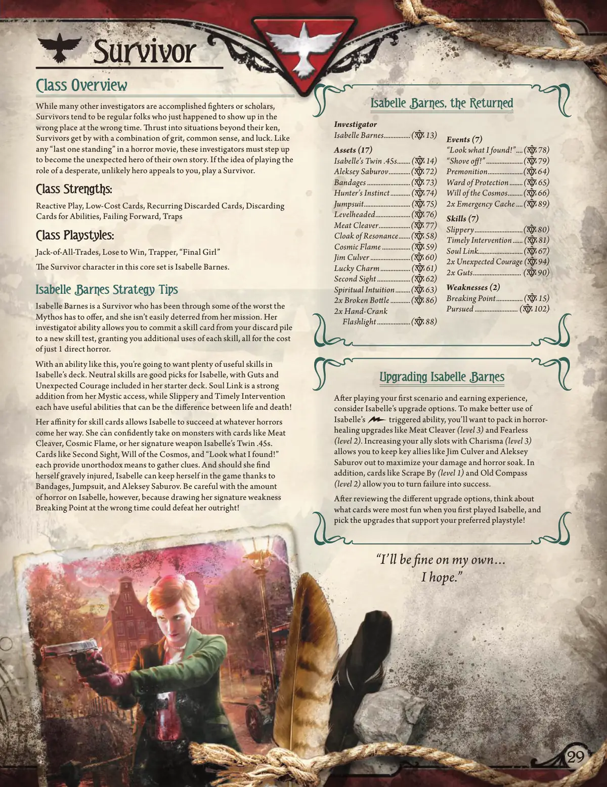
📝 第 29 页 AI 机翻对照（点击展开）
Isabelle Barnes 策略提示
Isabelle Barnes 是一位幸存者，她经历过神话（Mythos）所能提供的最糟糕的考验，而且她不会被自己的使命轻易吓退。她的调查员能力允许你从弃牌堆中提交一张技能卡牌到新的技能测试中，只需花费 1 点直接恐怖值，就能为你每种技能提供额外使用次数。
拥有这样的能力，你会想要在 Isabelle 的牌库中放入大量有用的技能。中性技能是 Isabelle 的不错选择，她的起始牌组中包含了勇气（Guts）和意外之勇（Unexpected Courage）。灵魂链接（Soul Link）是她神秘系（Mystic）访问中的强力补充，而滑溜（Slippery）和及时干预（Timely Intervention）各自都有有用的能力，这些能力可能就是生与死之间的区别！
她对技能卡的偏爱使 Isabelle 能够应对任何恐怖。她可以自信地使用肉类砍刀（Meat Cleaver）、宇宙之火（Cosmic Flame）或她的标志性武器 Isabelle 的双枪 .45s（Isabelle's Twin .45s）等卡牌来对抗怪物。像第二视界（Second Sight）、宇宙意志（Will of the Cosmos）和"看我找到了什么！"（"Look what I found!"）这样的卡牌都提供了非常规的收集线索的方式。如果她发现自己身受重伤，Isabelle 可以依靠绷带（Bandages）、连体工作服（Jumpsuit）和 Aleksey Saburov 来让自己继续留在游戏中。然而要注意 Isabelle 身上的恐怖值数量，因为在错误时机抽到她的标志性弱点崩溃点（Breaking Point）可能会直接导致她失败！
Isabelle Barnes，归来者
调查员
Isabelle Barnes................(
13)
资产 (17)
Isabelle 的双枪 .45s........(
14)
Aleksey Saburov.............(
72)
绷带...........................(
73)
猎人直觉.............(
74)
连体工作服............................(
75)
冷静.....................(
76)
肉类砍刀...................(
77)
共鸣斗篷.......(
58)
宇宙火焰..................(
59)
Jim Culver.........................(
60)
幸运符...................(
61)
第二视界.....................(
62)
精神直觉..........(
63)
2x 破碎的瓶子.............(
86)
2x 手摇
手电筒.....................(
88)
事件 (7)
"看我找到了！"....(
78)
"滚开！".......................(
79)
预感.....................(
64)
保护符.........(
65)
宇宙意志.........(
66)
2x 紧急缓存.....(
89)
技能 (7)
滑溜.............................(
80)
及时干预.......(
81)
灵魂链接...........................(
67)
2x 意外勇气.(
94)
2x 勇气............................. (
90)
弱点 (2)
崩溃点.................(
15)
被追捕........................... (
102)
升级 Isabelle Barnes
在完成第一个场景并获得经验值后，考虑 Isabelle 的升级选项。为了更好地利用
当你触发伊莎贝尔的能力时，你会想要装备一些恐怖-治疗升级，比如肉斧（3级）和无畏（2级）。用魅力（3级）增加你的盟友槽位，可以让吉姆·卡尔弗和阿列克谢·萨布罗夫这样的关键盟友持续在场，以最大化你的伤害和恐怖吸收。此外，像勉强应付（1级）和老罗盘（2级）这样的卡牌能让你将失败转化为成功。
在回顾了不同的升级选项后，想想你第一次玩伊莎贝尔时哪些卡牌最有乐趣，然后选择支持你偏好的游戏风格的升级！
幸存者
职业概览
虽然许多其他调查员是熟练的战士或学者，但幸存者往往是普通人，只是恰好在错误的时间出现在错误的地点。被推入超出他们理解范围的情况，幸存者依靠坚韧、常识和运气的组合来应对。就像恐怖电影中"最后站立的人"一样，这些调查员必须挺身而出，成为自己故事中意想不到的英雄。如果你扮演绝望的、不太可能的英雄角色吸引你，那就选择幸存者。
职业优势：
反应式游戏、低成本卡牌、重复使用的弃牌卡牌、通过弃牌使用能力、向前失败、陷阱
职业玩法风格：
多面手、以输换赢、陷阱师、"最终女孩"
本核心包中的幸存者角色是伊莎贝尔·巴恩斯。
"我自己会没事的...
我希望。"
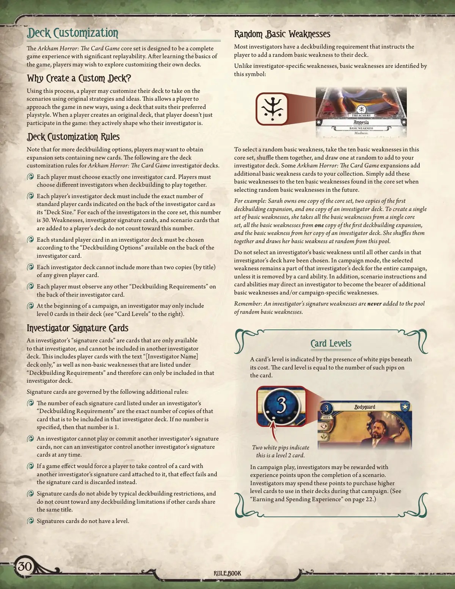
📝 第 30 页 AI 机翻对照（点击展开）
牌库自定义
《克苏鲁的呼唤：卡牌游戏》核心套盒被设计为一个具有显著可重玩性的完整游戏体验。在学习游戏基础后，玩家可能希望探索自定义自己的牌库。
为什么要创建自定义牌库？
通过这个过程，玩家可以自定义他们的牌库，以使用原创的策略和想法来应对场景。这允许玩家以新的方式接近游戏，使用适合他们偏好的游戏风格的牌库。当玩家创建原创牌库时，他们不只是参与游戏：他们积极地塑造了他们的调查员是谁。
牌库自定义规则
请注意，为了获得更多的牌库构建选项，玩家可能希望获取包含新卡牌的扩展套盒。以下是《克苏鲁的呼唤：卡牌游戏》调查员牌库的牌库自定义规则。
Æ 每位玩家必须选择恰好一张调查员卡牌。玩家在构建牌库以一起游戏时，必须选择不同的调查员。
Æ 每位玩家的调查员牌库必须包括调查员卡牌背面所指示的标准玩家卡牌的确切数量，作为其"牌库大小"。对于核心套盒中的每位调查员，这个数字是30。弱点卡牌、调查员签名卡牌以及添加到玩家牌库中的场景卡牌不计入此数量。
Æ 调查员牌库中的每张标准玩家卡牌必须根据调查员卡牌背面提供的"牌库构建选项"进行选择。
Æ 每个调查员牌库不能包含任何给定玩家卡牌超过两份（按标题）。
Æ 每位玩家必须遵守其调查员卡牌背面上列出的任何其他"牌库构建要求"。
Æ 在战役开始时，调查员的牌库中只能包含0级卡牌（参见右侧的"卡牌等级"）。
调查员签名卡牌
调查员的"签名卡牌"是仅对该调查员可用，且不能包含在其他调查员牌库中的卡牌。这包括带有"[调查员姓名]牌库专用"文本的玩家卡牌，以及列在"牌库构建要求"下的非基础弱点卡牌，因此只能包含在该调查员牌库中。
签名卡牌遵循以下额外规则：
Æ 列在调查员"牌库构建要求"下的每张签名卡牌的数量，就是应包含在该调查员牌库中的该卡牌的确切副本数量。如果没有指定数量，则该数量为1。
Æ 调查员不能使用或打出其他调查员的签名卡牌，也不能在任何时候控制其他调查员的签名卡牌。
<!--page:N-->
Æ 如果一个游戏效果会强制一个玩家获得一张带有另一位调查员签名卡牌的卡牌的控制权，则该效果失败，且签名卡牌被弃置。
Æ 签名卡不受典型牌库构筑限制的约束，如果其他卡牌共享相同名称，则不计入任何牌库构筑限制。
Æ 签名卡没有等级。
卡牌等级
卡牌的等级通过其费用下方的白色点数指示。卡牌等级等于卡牌上此类点数的数量。
在战役游戏中，调查员在完成一个场景后可能获得经验点。
调查员可以花费这些点数购买更高级别的卡牌，用于他们在该战役中的牌库。（参见第22页的"获取和花费经验"）
资产
保镖
两个白色点数表明
这是一张等级2卡牌。
随机基础弱点
大多数调查员都有牌库构筑要求，指示玩家向其牌库添加一张随机基础弱点。
与调查员特定的弱点不同，基础弱点通过以下符号识别：
要选择一张随机基础弱点，取本核心集中的十张基础弱点，将它们洗混，然后随机抽取一张添加到你的调查员牌库中。一些《克苏鲁的呼唤：卡牌游戏》扩展会向你的收藏中添加额外的基础弱点卡牌。在未来选择随机基础弱点时，只需将这些基础弱点添加到核心集中的十张基础弱点中。
例如：Sarah拥有一份核心集、两份第一份牌库构筑扩展和一份调查员牌组。要创建一组基础弱点，她取自一份核心集的所有基础弱点、一份第一份牌库构筑扩展的所有基础弱点，以及她那份调查员牌组的基础弱点。她将它们洗混，然后从这叠牌中随机抽取她的基础弱点。
在选择调查员的基础弱点之前，不要选择该调查员牌组中的所有其他卡牌。在战役模式中，所选弱点作为该调查员牌组的一部分保留在整个战役中，除非被卡牌能力移除。此外，场景说明和卡牌能力可能指示调查员成为额外基础弱点和/或战役特定弱点的携带者。
记住：调查员的签名弱点永远不会被添加到随机基础弱点池中。
基础弱点
背叛
启示——选择并弃置除1张外的所有牌
疯狂。
失忆
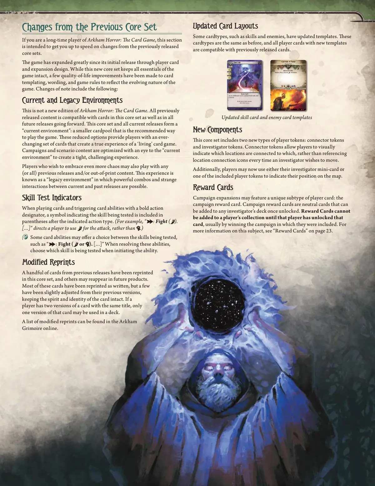
📝 第 31 页 AI 机翻对照（点击展开）
与前一个核心集的变化
如果您是《克苏鲁的呼唤：卡牌游戏》的长期玩家，本节旨在帮助您快速了解从先前发布的核心集发生的变化。
自首次发布以来，游戏通过玩家卡牌和扩展设计得到了极大的扩展。虽然这个新核心集保留了游戏的所有基本要素，但为了反映游戏的不断发展，在卡牌模板、措辞和游戏规则方面进行了一些生活品质改进。值得注意的变化包括以下内容：
当前和传统环境
这不是《克苏鲁的呼唤：卡牌游戏》的新版本。所有先前发布的内容都与本核心集中的卡牌以及未来所有发布的版本兼容。本核心集和所有当前发布版本形成了一个"当前环境"：一个更小的卡牌池，是推荐的游戏方式。这些减少的选项为玩家提供了一个不断变化的卡牌集合，创造了真正的"活"卡牌游戏体验。
战役和场景内容都针对"当前环境"进行了优化，以创造紧凑而具有挑战性的体验。
希望拥抱更多混乱的玩家也可以使用任何（或全部）先前发布的内容和/或已停产内容。这种体验被称为"传统环境"，其中当前和过去发布版本之间可能存在强大的组合和奇怪的互动。
技能测试指示器
在使用粗体行动设计器打出卡牌和触发卡牌能力时，一个表示被测试技能的符号会包含在指定行动类型后的括号中。（例如，": 战斗 ()。[...]" 指示玩家使用 进行攻击，而不是 。）
Æ 一些卡牌能力可能提供被测试技能的选择，例如": 战斗 ( 或 )。[...]" 在解决这些能力时，在启动能力时选择测试哪种技能。
修改的重印版
先前发布的一些卡牌已在本核心集中重印，其他卡牌也可能在未来产品中重新出现。
这些卡牌大多按原样重印，但其中一些从之前的版本进行了轻微调整，保持了卡牌的精神和本质不变。如果玩家拥有两个相同标题的卡牌版本，只能在一个牌库中使用其中一个版本。
修改的重印版列表可以在《阿卡姆法典》在线找到。
更新的卡牌布局
一些卡牌类型，如技能和敌人，已更新了模板。这些卡牌类型与之前相同，所有使用新模板的玩家卡牌都与先前发布的卡牌兼容。
新组件
本核心集包括两种新的玩家指示物类型：连接指示物
以及调查员指示物。连接指示物允许玩家直观地显示哪些地点相互连接，而不是每次调查员想要移动时都参考地点连接图标。此外，玩家现在可以使用他们的调查员迷你卡牌或其中包含的玩家指示物来表示他们在地图上的位置。
奖励卡牌
战役扩展可能包含一种独特的玩家卡牌子类型：战役奖励卡牌。战役奖励卡牌是中立卡牌，一旦解锁就可以添加到任何调查员的牌库中。奖励卡牌不能被添加到玩家的收藏中，直到该玩家解锁了该卡牌，通常是通过包含该卡牌的战役获胜。关于这个主题的更多信息，请参见第23页的"奖励卡牌"。
© 2026 FFG
插图：Peter Polach
技能
凭借远古的力量
我获得新生。
作为献祭灵魂链接的额外费用，承受1点精神创伤。
固有。法术。
灵魂链接
© 2026 FFG
插图：Peter Polach
10/11
敌人
猎人。猎物（最低）。反击。
人形。精英。
烈焰仆从
狂怒怒火
胜利点2。
更新的技能卡牌和敌卡牌模板
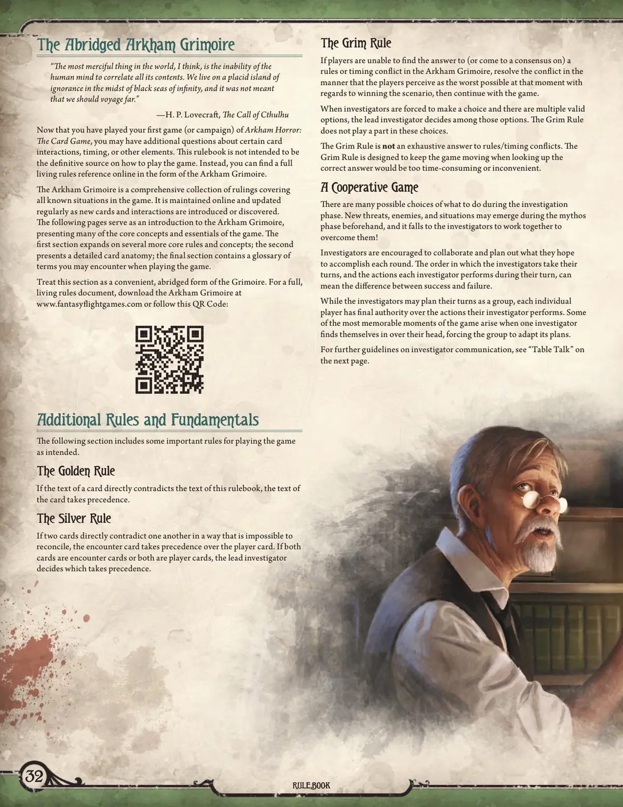
📝 第 32 页 AI 机翻对照（点击展开）
精简版阿卡姆秘典
"我认为，世界上最仁慈的事，莫过于人类心智无法将其所有内容关联起来。我们生活在无垠黑色海洋中的无知宁静之岛上，而我们本不应航行远航。"
—H. P. Lovecraft, 《克苏鲁的呼唤》
既然你已经玩了你的第一场（或战役）《阿卡姆恐怖：卡牌游戏》，你可能对某些卡牌互动、时机或其他元素有额外的问题。这本规则书并非旨在成为如何玩游戏的权威来源。相反，你可以在网上找到完整的动态规则参考，即阿卡姆秘典。
阿卡姆秘典是一个全面的裁决集合，涵盖了游戏中所有已知情况。它在线维护，并随着新卡牌和互动的引入或发现而定期更新。
以下页面作为阿卡姆秘典的介绍，呈现了许多游戏的核心概念和基本要素。第一部分扩展了几个更核心的规则和概念；第二部分介绍了详细的卡牌结构；最后一部分包含游戏中你可能遇到的术语表。
将本节视为秘典的便捷精简版。要获取完整的动态规则文档，请访问 www.fantasyflightgames.com 下载阿卡姆秘典或扫描此二维码：
额外规则与基础
以下部分包括一些按预期方式玩游戏的重要规则。
黄金法则
如果卡牌文本直接与本规则书文本相矛盾，则以卡牌文本为准。
白银法则
如果两张卡牌以无法调和的方式直接相互矛盾，则遭遇卡牌优先于玩家卡牌。如果两张卡牌都是遭遇卡牌或都是玩家卡牌，则由主调查员决定哪张优先。
grim 法则
如果玩家无法在阿卡姆秘典中找到规则或时机冲突的答案（或无法达成共识），则以玩家在那一刻认为对赢得场景最糟糕的方式解决冲突，然后继续游戏。
当调查员被迫做出选择且有多个有效选项时，由主调查员在这些选项中做出决定。grim 法则不参与这些选择。
grim 法则并非规则/时机冲突的全面解答。grim 法旨在当查找正确答案过于耗时或不方便时，让游戏继续进行。
一款合作游戏
在调查期间有许多可能的选择
阶段。在神话阶段之前，可能会出现新的威胁、敌人和情况，这需要调查者们共同努力来克服它们！
鼓励调查者们合作并规划出他们希望在每个轮次中完成的目标。调查者们采取回合的顺序，以及每位调查者在自己的回合中执行的行动，可能意味着成功与失败之间的区别。
虽然调查者们可以作为一个小组来规划他们的回合，但每位玩家对其调查者执行的行动拥有最终决定权。游戏中一些最令人难忘的时刻出现在当一位调查者发现自己力不从心，迫使团队调整其计划时。
有关调查者沟通的更多指导，请参阅下一页的"桌边谈话"。
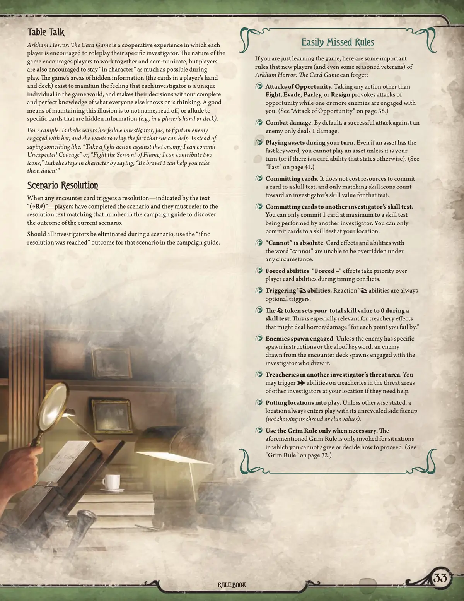
📝 第 33 页 AI 机翻对照（点击展开）
桌边谈话
《克苏鲁的呼唤：卡牌游戏》是一款合作体验，每位玩家都被鼓励扮演特定的调查员。游戏的性质鼓励玩家合作与交流，但玩家也被鼓励在游戏过程中尽可能保持"角色扮演"。游戏中隐藏信息区域（玩家手中的牌和牌库）的存在是为了维持每位调查员在游戏世界中是独特个体的感觉，并且他们在做决定时，并不完全了解其他人知道或思考的内容。维持这种错觉的一个好方法是不要提及、读出或暗示那些属于隐藏信息的特定卡牌（例如，在玩家手中或牌库中的卡牌）。例如：伊莎贝尔希望她的同伴调查员乔与她交战的敌人战斗，并且她想传达她可以提供帮助的事实。与其说"对该敌人采取战斗行动；我可以打出《意外的勇气》"或"与火焰仆从战斗；我可以提供两个图标"，伊莎贝尔通过说"勇敢点！我可以帮你击败他们！"来保持角色扮演。
场景解决
当任何遭遇卡牌触发解决过程——由文本"(→R#)"表示——玩家已完成该场景，他们必须查阅战役指南中与该编号对应的解决文本，以了解当前场景的结果。
如果在场景中所有调查员都被消灭，请使用战役指南中该场景的"如果未达成解决"的结果。
容易被忽略的规则
如果你刚开始学习这款游戏，以下是一些《克苏鲁的呼唤：卡牌游戏》的新玩家（甚至一些经验丰富的老玩家）可能会忘记的重要规则：
Æ 机会攻击。当你与一个或多个敌人交战时，采取除战斗、闪避、交涉或放弃以外的任何行动都会引发机会攻击。（参见第38页的"机会攻击"）
Æ 战斗伤害。默认情况下，对敌人的成功攻击只造成1点伤害。
Æ 在你的回合中打出资产。即使资产有关键词"快速"，除非轮到你（或有卡牌能力说明可以例外），否则你不能打出资产。（参见第41页的"快速"）
Æ 出示卡牌。将卡牌出示给技能测试不消耗资源，只有匹配的技能图标才计入调查员在该测试中的技能值。
Æ 向其他调查员的技能测试出示卡牌。你最多只能向其他调查员进行的技能测试出示1张卡牌。你只能在所在位置向技能测试出示卡牌。
Æ "不能"是绝对的。带有"不能"一词的卡牌效果和能力无法被覆盖。
任何情况下。
Æ 强制能力。"强制-"效果在时机冲突中优先于玩家卡牌能力。
Æ 触发能力。反应能力始终是可选触发。
Æ 指示物在技能测试期间将你的总技能值设为0。这对于可能因你失败每点而造成恐惧/伤害的背叛效应尤其重要。
Æ 敌人参与时生成。除非敌人有特定的生成说明 aloof 关键词，否则从遭遇牌库抽到的敌人会与抽取它的调查员一起参与。
Æ 其他调查员威胁区域中的背叛卡。如果你需要帮助，你可以触发位于你所在位置的其他调查员威胁区域中的背叛卡上的能力。
Æ 将地点置入游戏。除非另有说明，否则地点总是以其未揭示面朝上进入游戏（不显示其迷雾或线索值）。
Æ 仅在必要时使用 Grim Rule。上述 Grim Rule 仅在无法达成一致或决定如何进行的情况下才被调用。（参见第32页的"Grim Rule"。）
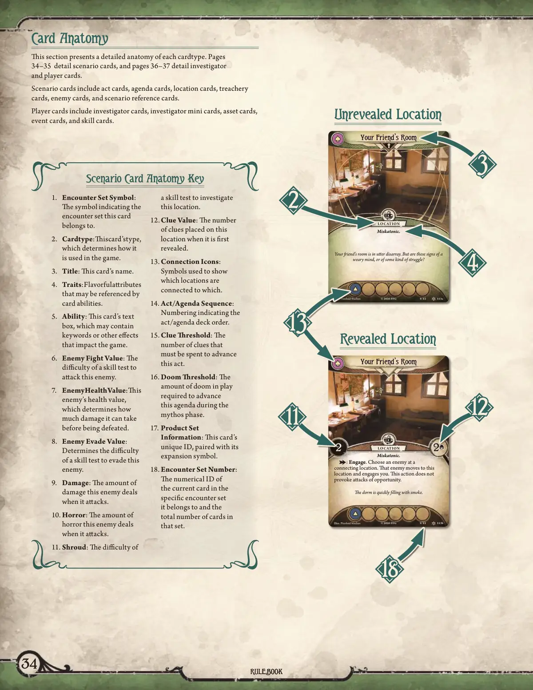
📝 第 34 页 AI 机翻对照（点击展开）
卡牌结构
本节详细介绍每种卡牌的结构。第34-35页详细说明场景卡牌，第36-37页详细说明调查员和玩家卡牌。
场景卡牌包括行为卡牌、议程卡牌、地点卡牌、背叛卡牌、敌人卡牌和场景参考卡牌。
玩家卡牌包括调查员卡牌、调查员迷你卡牌、资产卡牌、事件卡牌和技能卡牌。
未揭示地点
场景卡牌结构图解
1. 遭遇组符号：
表示此卡牌所属的遭遇组的符号。
- 卡牌类型：此卡牌的类型，决定了它在游戏中的使用方式。
- 标题：此卡牌的名称。
4. 特征：具有特色的属性，可能会被卡牌能力引用。
- 能力：此卡牌的文本框，可能包含影响游戏的关键词或其他效果。
6. 敌人战斗值：攻击此敌人所需的技能测试难度。
7. 敌人生命值：此敌人的生命值，决定了它在被击败前可以承受多少伤害。
8. 敌人闪避值：决定闪避此敌人所需的技能测试难度。
9. 伤害：此敌人在攻击时造成的伤害量。
10. 恐惧：此敌人在攻击时造成的恐惧量。
11. 遮蔽：调查此地点所需的技能测试难度。
12. 线索值：此地点首次揭示时放置的线索数量。
13. 连接图标：用于显示哪些地点与哪些地点相连的符号。
14. 行为/议程序列：表示行为/议程牌组顺序的编号。
15. 线索阈值：必须花费的线索数量，以推进此行为。
16. 厄运阈值：在神话阶段推进此议程所需的场上厄运量。
17. 产品组信息：此卡牌的唯一ID，与其扩展符号配对。
18. 遭遇组编号：此卡牌在其所属特定遭遇组中的当前卡牌的数字ID以及该组中的卡牌总数。
已揭示地点
© 2026 FFG
插图：Pixoloid Studios
9/11
113b
地点
宿舍很快充满了烟雾。
：交战。选择一个在连接地点的敌人。该敌人移动到此地点并与你交战。此行动不会引发机会攻击。
密斯卡托尼克。
你朋友的房间
2
© 2026 FFG
113a
插图：Pixoloid Studios
9/11
地点
你朋友的房间一片混乱。但这些是一个疲惫心灵的迹象，还是某种挣扎的迹象？
密斯卡托尼克。
你朋友的房间
1313
1111
1212
1818
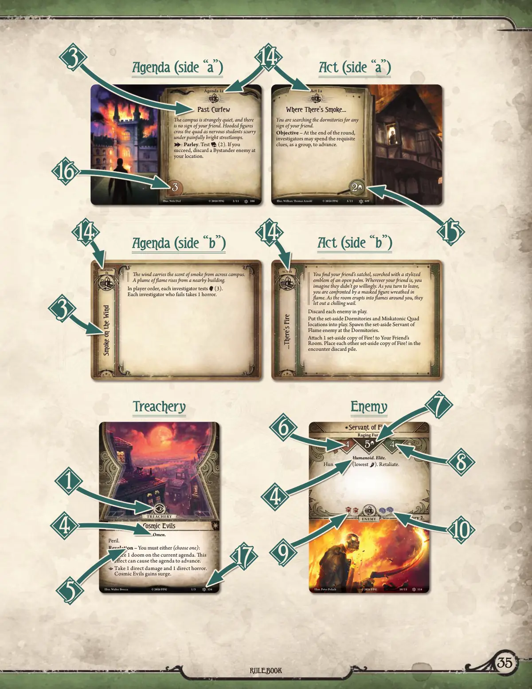
📝 第 35 页 AI 机翻对照（点击展开）
议程（A面）
议程（B面）
行动（A面）
行动（B面）
背叛
敌人
© 2026 FFG
插图：Nele Diel
2/11
议程 1a
校园异常安静，没有你朋友的任何迹象。戴着兜帽的身影穿过广场，紧张的学生们在刺眼的路灯下匆匆跑过。
：交涉。测试 (2)。如果你成功，在你所在位置弃置一个旁观者敌人。
宵禁之后
© 2026 FFG
插图：William Thomas Arnold
5/11
行动 1a
你正在宿舍楼里搜寻，寻找你朋友的任何踪迹。
目标 - 在回合结束时，调查员可以作为一个整体花费必要的线索来推进。
有烟之处…
2
议程
1b
风带来了校园另一边飘来的烟味。一股火焰从附近建筑升起。
按玩家顺序，每位调查员测试 (3)。
每位失败的调查员承受1点精神创伤。
风中的烟
行动 1b
你发现了你朋友的背包，上面有一个张开手掌的烫印图案。无论你的朋友在哪里，你想象他们不是自愿去的。当你转身离开时，一个被火焰环绕的蒙面人挡住了你的去路。当房间在你周围燃起熊熊大火时，他们发出了一声令人胆寒的尖叫。
弃置场上所有敌人。
将备用的宿舍和密斯卡托尼克广场地点置入游戏。在宿舍生成备用的火焰仆从敌人。
将1份备用的"火灾！"卡牌附加到"你朋友的房间"。将其他备用的"火灾！"卡牌置入遭遇弃牌堆。
…就有火
© 2026 FFG
插图：Walter Brocca
1/3
背叛
危险。
启示 - 你必须选择以下其中一项：
= 在当前议程上放置1点厄运。此效果可能导致议程推进。
= 承受1点直接伤害和1点直接精神创伤。
宇宙邪恶获得激增。
预兆。
宇宙邪恶
© 2026 FFG
插图：Peter Polach
10/11
敌人
猎手。猎物（最低）。反击。
人形。精英。
火焰仆从
狂怒之怒
胜利 2。
1414
1414
1414
1616
1515
1717
1010
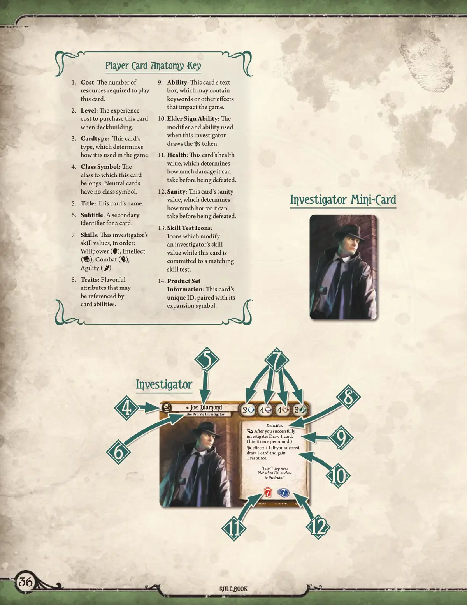
📝 第 36 页 AI 机翻对照（点击展开）
调查员
玩家卡牌结构说明
1. 费用：打出此卡牌所需的资源数量。
2. 等级：构筑牌库时购买此卡牌所需的经验值。
- 卡牌类型：此卡牌的类型，决定了它在游戏中的使用方式。
4. 职业符号：此卡牌所属的职业。中立卡牌没有职业符号。
- 标题：此卡牌的名称。
6. 副标题：卡牌的次要标识符。
- 技能：此调查员的技能值，顺序为：意志力（）、智力（）、战斗（）、敏捷（）。
8. 特性：可能被卡牌能力引用的具有风格特色的属性。
- 能力：此卡牌的文本框，可能包含影响游戏的关键词或其他效果。
10. 古神印记能力：当此调查员抽到指示物时使用的修正值和能力。
- 生命值：此卡牌的生命值，决定了它在被击败前可以承受多少伤害。
- 理智值：此卡牌的理智值，决定了它在被击败前可以承受多少恐惧。
13. 技能测试图标：当此卡牌被投入匹配的技能测试时，用于修正调查员技能值的图标。
14. 产品组信息：此卡牌的唯一ID，与其扩展符号配对。
调查员小卡
探索者
调查员
© 2026 FFG
插图：Aleksander Karcz
"我不能停下。当我离真相如此接近的时候。"
成功调查后：摸1张牌。
（每轮限一次。）
效果：+1。如果你成功，摸1张牌并获得1个资源。
侦探。
乔·戴蒙德
私家侦探
1111
1212
1010
<!--page:37>
事件
技能
资产
© 2026 FFG
插图：Alexandr Elichev
事件
快速。当你抽到一张非弱点阴谋卡牌时打出。
取消该卡牌的揭示效果并承受1点恐惧。
法术。灵体。
防护之盾
© 2026 FFG
插图：Nia Kovalevski
技能
如果在闪避非精英敌人的技能测试中成功，该敌人在下一个维护阶段不会准备。
熟练的。
滑溜
© 2026 FFG
插图：Elijah Ring
资产
"为世界末日做准备看起来很疯狂，直到世界末日真的来临！"
你获得+1 。
击败一个敌人后， Exhaust Logan Hastings：获得1个资源。
盟友。猎人。
洛根·黑斯廷斯
赏金猎人
1111
1212
1313
1414
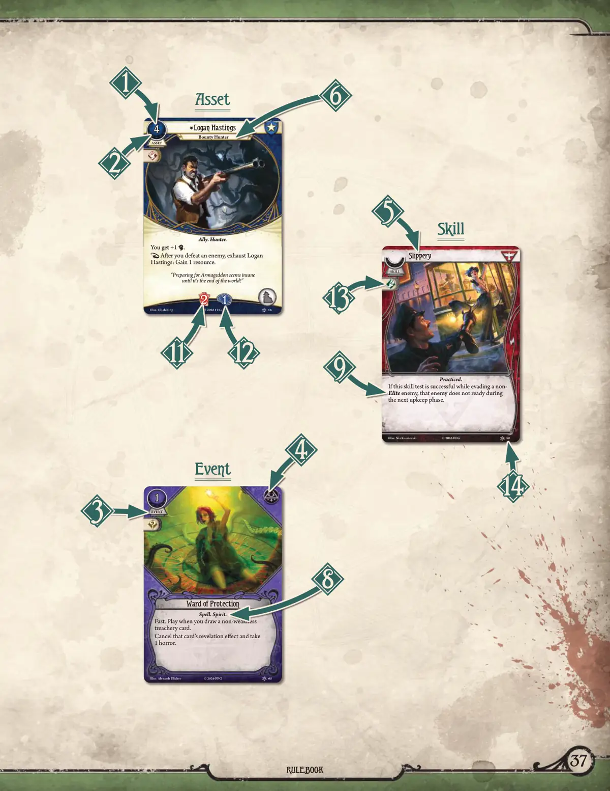
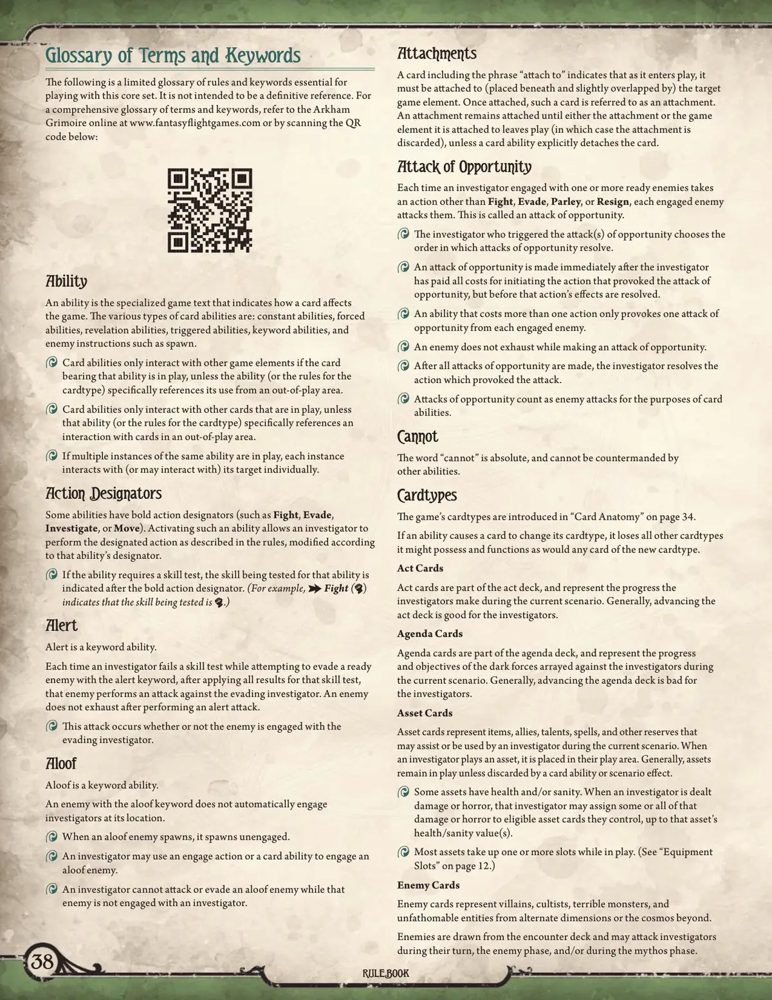
📝 第 38 页 AI 机翻对照（点击展开）
术语和关键词表
以下是使用这套核心游戏所必需的规则和关键词的有限术语表。本表不作为权威参考。如需全面的术语和关键词表，请访问 www.fantasyflightgames.com 上的《Arkham Grimoire》在线资源，或扫描下方的二维码：
能力
能力是指卡牌上表明该卡牌如何影响游戏的专门游戏文本。各种类型的卡牌能力包括：常驻能力、强制能力、揭示能力、触发能力、关键词能力以及如生成等敌人指令。
Æ 只有当拥有该能力的卡牌处于游戏中时，卡牌能力才会与其他游戏元素互动，除非该能力（或卡牌类型的规则）特别指出了其在非游戏区域的使用。
Æ 卡牌能力只与处于游戏中的其他卡牌互动，除非该能力（或卡牌类型的规则）特别指出了与非游戏区域中卡牌的互动。
Æ 如果相同能力的多个实例处于游戏中，每个实例会（或可能会）与其目标单独互动。
行动指示符
某些能力有粗体的行动指示符（如战斗、闪避、调查或移动）。激活此类能力使调查员能够根据规则执行指定的行动，并根据该能力的指示符进行修改。
Æ 如果能力需要技能测试，在粗体行动指示符后会标明该能力所测试的技能。（例如， 战斗 () 表示所测试的技能是。）
警戒
警戒是一种关键词能力。
每当调查员在尝试闪避具有警戒关键词的待命敌人时失败技能测试，在应用该技能测试的所有结果后，该敌人会对闪避的调查员进行攻击。敌人在执行警戒攻击后不会疲劳。
Æ 无论该敌人是否与闪避的调查员交战，此次攻击都会发生。
疏离
疏离是一种关键词能力。
具有疏离关键词的敌人不会自动与其位置上的调查员交战。
Ö 当疏离敌人生成时，它生成时未交战。
Ö 调查员可以使用交战行动或卡牌能力与疏离敌人交战。
Ö 当疏离敌人未与调查员交战时，调查员无法攻击或闪避该敌人。
附属卡
包含"附加到"字样的卡牌表示，当其进入游戏时，必须附加到（放置在目标游戏元素下方并略微重叠）目标游戏元素上。一旦附加，此类卡牌被称为附属卡。附属卡保持附加状态，直到附属卡或游戏元素被移除或以其他方式不再存在。
它所附属的元素离开游戏（在这种情况下，附属物被弃置），除非有卡牌能力明确地使该卡牌脱离。
机会攻击
每当一名与一个或多个就绪敌人交战的调查员采取除战斗、闪避、交涉或放弃以外的行动时，每个交战的敌人都会向他们发起攻击。这被称为机会攻击。
Æ 触发机会攻击的调查员选择机会攻击的解决顺序。
Æ 机会攻击在调查员支付了引发机会攻击的行动的所有成本后立即进行，但在该行动的效果被解决之前。
Æ 成本超过一个行动的能力只会引发每个交战敌人的一次机会攻击。
Æ 敌人在进行机会攻击时不会疲劳。
Æ 在所有机会攻击完成后，调查员解决引发攻击的行动。
Æ 机会攻击被视为敌人攻击，用于卡牌能力的目的。
不能
"不能"一词是绝对的，不能被其他能力推翻。
卡牌类型
游戏的卡牌类型在"卡牌解剖"（第34页）中介绍。
如果一个能力导致卡牌改变其卡牌类型，它会失去可能拥有的所有其他卡牌类型，并作为新卡牌类型的任何卡牌一样运作。
行动卡
行动卡是行动牌库的一部分，代表调查员在当前场景中取得的进展。通常，推进行动牌库对调查员有利。
议程卡
议程卡是议程牌库的一部分，代表当前场景中与调查员对抗的黑暗势力的进展和目标。通常，推进议程牌库对调查员不利。
资产卡
资产卡代表物品、盟友、天赋、法术以及其他可能协助或被调查员在当前场景中使用的资源。当调查员打出资产卡时，它被放置在其游戏区域。通常，资产卡留在游戏中，除非被卡牌能力或场景效果弃置。
Æ 一些资产具有生命值和/或理智值。当调查员受到伤害或恐怖时，该调查员可以将部分或全部伤害或恐怖分配给其控制的符合条件的资产卡，最多不超过该资产的生命值/理智值。
Æ 大多数资产在游戏中占用一个或多个槽位。（参见"装备槽位"，第12页。）
敌人卡
敌人卡代表反派、邪教徒、可怕的怪物以及来自异次元或宇宙之外的难以理解的实体。敌人从遭遇牌库中抽取，并可能在他们的回合、敌人阶段和/或神话阶段期间攻击调查员。
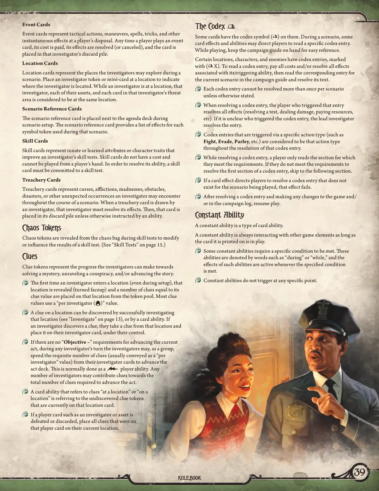
📝 第 39 页 AI 机翻对照（点击展开）
事件卡牌
事件卡牌代表玩家可用的战术行动、策略、法术、诡计和其他即时效果。当玩家打出事件卡牌时，支付其费用，解决其效果（或取消），然后将该卡牌放入该调查者的弃牌堆。
地点卡牌
地点卡牌代表调查者在场景中可能探索的地方。在地点放置一个调查者指示物或迷你卡牌以表明调查者的位置。当调查者在某个地点时，该调查者、他们的每张资产以及该调查者威胁区域中的每张卡牌都被视为在同一个地点。
场景参考卡牌
场景参考卡牌在场景设置时放置在议程牌库旁边。场景参考卡牌提供了该场景中使用的每个符号标记的效果列表。
技能卡牌
技能卡牌代表与生俱来或后天习得的属性或角色特征，可以提高调查者的技能测试。技能卡牌没有费用，不能从玩家的手牌中打出。要解决其能力，必须将技能卡牌投入到技能测试中。
背叛卡牌
背叛卡牌代表诅咒、疾病、疯狂、障碍、灾难或调查者在场景过程中可能遇到的其他意外情况。当调查者抽到一张背叛卡牌时，该调查者必须解决其效果。然后，除非有特殊能力指示，否则将该卡牌放入其弃牌堆。
混沌标记
混沌标记在技能测试期间从混沌袋中揭示，以修改或影响技能测试的结果。（参见第15页的"技能测试"。）
线索
线索标记代表调查者解开谜团、揭露阴谋和/或推进故事进展的进度。
Æ 调查者首次进入一个地点（即使在设置期间时），该地点会被揭示（翻面），并从标记池中在该地点上放置等于其线索值的线索数量。大多数线索值使用"每名调查者()"的值。
Æ 可以通过成功调查该地点（参见第13页的"调查"）或通过卡牌能力发现地点上的线索。如果调查者发现线索，他们从该地点取走一个线索并将其放在他们的调查者卡牌上，由他们控制。
Æ 如果当前幕没有"目标-"要求，在任何调查者的回合，调查者可以作为一个整体，从他们的调查者卡牌上花费所需数量的线索（通常表示为"每名调查者"的值）来推进幕牌堆。这通常作为玩家能力完成。任何
调查员数量可以贡献线索，以推进剧情所需的线索总数。
Æ 提到"在地点的"线索或"在地点上的"线索的卡牌能力，指的是当前在该地点卡牌上的未发现线索指示物。
Æ 如果调查员或资产等玩家卡牌被击败或弃置，将所有在该玩家卡牌上的线索放置到他们当前的地点上。
典籍
一些卡牌上有典籍符号()。在场景中，一些卡牌效果和能力可能会指示玩家阅读特定的典籍条目。游戏时，请将战役指南放在手边以便参考。
某些地点、角色和敌人有典籍条目，标记为( X)。要阅读典籍条目，支付所有相关成本和/或解决其触发能力的所有效果，然后在战役指南中阅读当前场景的相应条目并解决其文本。
Æ 每个典籍条目在每个场景中只能解决一次，除非另有说明。
Æ 解决典籍条目时，触发该条目的玩家解决所有效果（进行测试、造成伤害、支付资源等）。如果不清楚是谁触发了典籍条目，则由主调查员解决该条目。
Æ 通过特定行动类型（如战斗、闪避、谈判等）触发的典籍条目，在解决该典籍条目的整个过程中被视为该行动类型。
Æ 解决典籍条目时，玩家只阅读他们满足要求的章节。如果不满足解决典籍条目第一章节的要求，则跳到下一章节。
Æ 如果卡牌效果指示玩家解决一个当前场景中不存在的典籍条目，则该效果失败。
Æ 解决典籍条目并对游戏和/或战役日志做出任何更改后，继续游戏。
常驻能力
常驻能力是一种卡牌能力。
只要印有该能力的卡牌在场上，常驻能力就会持续与其他游戏元素互动。
Æ 一些常驻能力需要满足特定条件。这些能力用"期间"或"当...时"等词语表示，当指定条件满足时，这些能力的效果就会激活。
Æ 常驻能力不会在任何特定时间点触发。
规则书
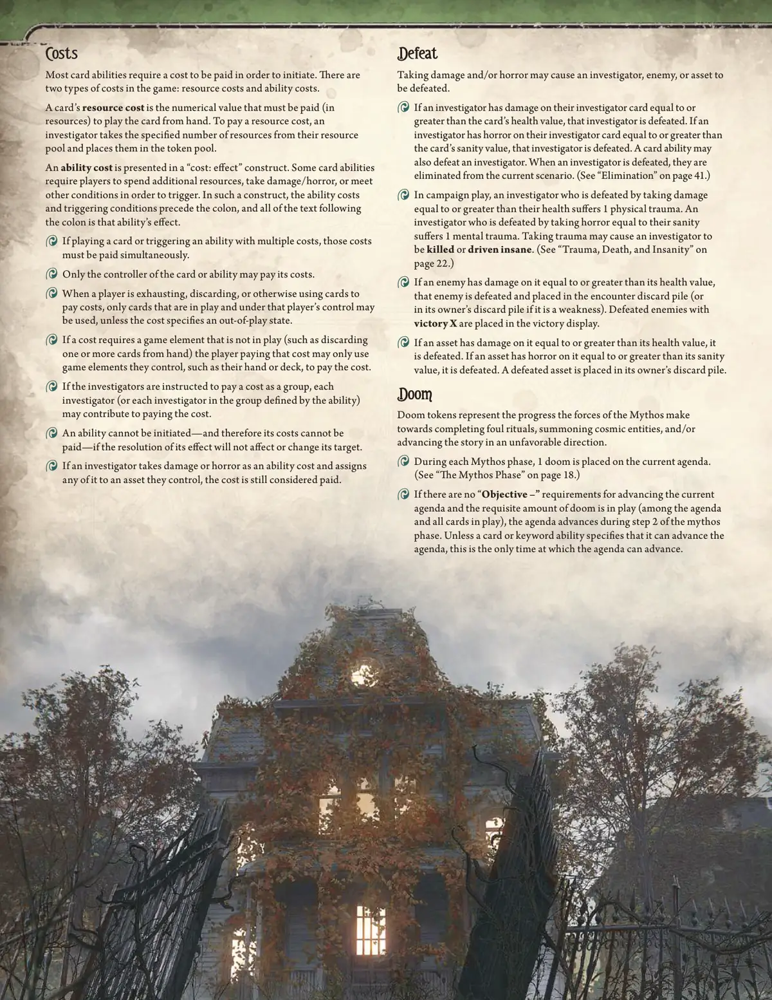
📝 第 40 页 AI 机翻对照（点击展开）
费用
大多数卡牌能力需要支付费用才能启动。游戏中存在两种类型的费用：资源费用和能力费用。
卡牌的资源费用是指从手牌打出该卡牌时必须支付的（资源）数值。要支付资源费用，调查员需要从其资源池中取出指定数量的资源，并将其放入指示物池中。
能力费用以"费用：效果"的结构呈现。某些卡牌能力要求玩家支付额外资源、承受伤害/疯狂，或满足其他条件才能触发。在此结构中，能力费用和触发条件位于冒号之前，冒号后的所有文本都是该能力的效果。
Æ 如果打出卡牌或触发能力时涉及多个费用，这些费用必须同时支付。
Å 只有卡牌或能力的控制者才能支付其费用。
Å 当玩家通过 exhausted（疲劳）、discard（弃置）或其他方式使用卡牌支付费用时，只有处于游戏中且在该玩家控制下的卡牌才能被使用，除非费用指定了非游戏中的状态。
Å 如果费用要求一个不在游戏中的游戏元素（例如从手牌弃置一张或多张卡牌），支付该费用的玩家只能使用他们控制的游戏元素（如他们的手牌或牌库）来支付费用。
Å 如果调查员被指示作为一个群体支付费用，每个调查员（或能力所定义的群体中的每个调查员）都可以为支付该费用做出贡献。
Å 如果一个能力的效果解决后不会影响或改变其目标，则该能力无法启动——因此其费用也无法支付。
Å 如果调查员将伤害或疯狂作为能力成本并分配给他们控制的任何资产，该费用仍被视为已支付。
失败
承受伤害和/或疯狂可能导致调查员、敌人或资产被击败。
Å 如果调查员在其调查员卡牌上的伤害值等于或大于该卡牌的生命值，该调查员即被击败。如果调查员在其调查员卡牌上的疯狂值等于或大于该卡牌的理智值，该调查员即被击败。卡牌能力也可能击败调查员。当调查员被击败时，他们将从当前场景中被淘汰。（参见第41页的"淘汰"）
Å 在战役游戏中，因承受等于或大于其生命值的伤害而被击败的调查员将承受1点身体创伤。因承受等于其理智值的疯狂而被击败的调查员将承受1点精神创伤。承受创伤可能导致调查员死亡或陷入疯狂。（参见第22页的"创伤、死亡与疯狂"）
Æ 如果一个敌人受到的伤害大于或等于其生命值，该敌人被击败并放入遭遇弃牌堆（如果是弱点，则放入其拥有者的弃牌堆）。带有胜利点X的被击败敌人被放入胜利展示区。
Æ 如果一个资产受到的伤害大于或等于其生命值，它被击败。如果一个资产受到的恐惧大于或等于其理智值，它被击败。被击败的资产被放入其拥有者的弃牌堆。
厄运(Doom)
厄运指示物代表神话力量完成邪恶仪式、召唤宇宙实体和/或以不利方向推进故事的进度。
Æ 在每个神话阶段，1点厄运会放置在当前议程上。（参见第18页的"神话阶段"）
Æ 如果没有"目标-"要求推进当前议程，且所需数量的厄运已在游戏中（议程和所有在场卡牌中），则议程在神话阶段的第2步推进。除非卡牌或关键词能力指定它可以推进议程，否则这是议程可以推进的唯一时间。
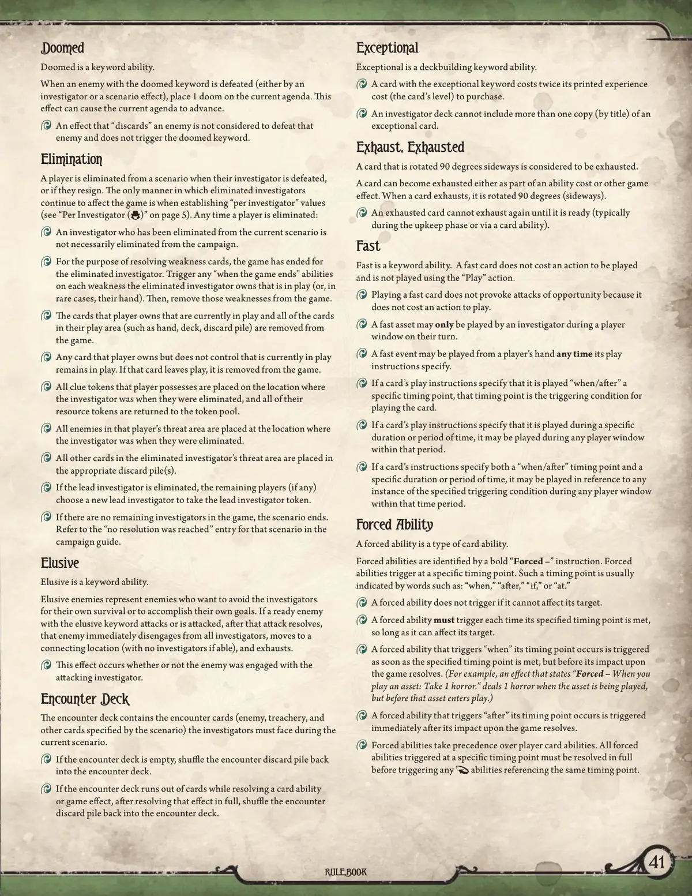
📝 第 41 页 AI 机翻对照（点击展开）
厄运
厄运是一种关键词能力。
当一个带有厄运关键词的敌人被击败时（无论是调查员还是场景效果导致的），在当前议程上放置1个厄运标记。这个效果可能导致当前议程推进。
Æ 一个"弃置"敌人的效果不被视为击败该敌人，也不会触发厄运关键词。
淘汰
当一个玩家的调查员被击败，或者他们主动退出时，该玩家在场景中被淘汰。被淘汰的调查员继续影响游戏的唯一方式是在建立"每名调查员"数值时（参见第5页的"每名调查员()"）。任何时候当玩家被淘汰时：
Æ 从当前场景中被淘汰的调查员不一定从战役中被淘汰。
Æ 为了解决弱点牌的目的，游戏对被淘汰的调查员已经结束。触发被淘汰的调查员拥有的每张在游戏中的弱点牌上的"当游戏结束时"能力（或者在极少数情况下，他们手牌中的弱点牌）。然后，将这些弱点牌移出游戏。
Æ 该玩家拥有的当前在游戏中的所有牌以及他们游戏区域中的所有牌（如手牌、牌库、弃牌堆）都被移出游戏。
Æ 该玩家拥有但不控制的当前在游戏中的任何牌仍然留在游戏中。如果那张牌离开游戏，它将被移出游戏。
Æ 该玩家拥有的所有线索标记被放置在调查员被淘汰时的位置，他们所有的资源标记被返还到标记池中。
Æ 该玩家威胁区域中的所有敌人被放置在调查员被淘汰时的位置。
Æ 被淘汰的调查员威胁区域中的所有其他牌被放入相应的弃牌堆中。
Æ 如果主调查员被淘汰，剩余玩家（如果有）选择一名新的主调查员来获得主调查员标记。
Æ 如果游戏中没有剩余的调查员，场景结束。请参考战役指南中该场景的"未达成决议"条目。
隐秘
隐秘是一种关键词能力。
隐秘敌人代表那些为了生存或实现自己的目标而想要避开调查员的敌人。如果一个准备状态的带有隐秘关键词的敌人攻击或被攻击，在该攻击结算后，该敌人立即与所有调查员脱离接触，移动到一个相连的位置（如果可能，没有调查员），并进入疲劳状态。
Æ 无论该敌人是否与攻击它的调查员交战，都会发生此效果。
遭遇牌库
遭遇牌库包含调查员在游戏中必须面对的遭遇牌（敌人、背叛牌和场景指定的其他牌）。
当前场景。
Æ 如果遭遇牌库为空，将遭遇弃牌堆洗回遭遇牌库。
Æ 如果在解决卡牌能力或游戏效果时遭遇牌库用完牌，在完全解决该效果后，将遭遇弃牌堆洗回遭遇牌库。
非凡
非凡是一种牌组构建关键词能力。
Æ 带有非凡关键词的卡牌，其购买成本是其印刷经验成本（卡牌等级）的两倍。
Æ 调查者牌组不能包含超过一张（按标题计）的非凡卡牌。
exhausted（耗尽）
旋转90度侧放的卡牌被视为已耗尽。
卡牌可以因能力成本或其他游戏效果而耗尽。当卡牌耗尽时，它会被旋转90度（侧放）。
Æ 耗尽的卡牌在准备前不能再次耗尽（通常在维护阶段或通过卡牌能力）。
快速
快速是一种关键词能力。快速卡牌打出时不消耗行动，且不使用"打出"行动来打出。
Æ 打出快速卡牌不会引发机会攻击，因为它打出时不消耗行动。
Æ 快速资产只能在玩家在其回合的玩家窗口期间由调查者打出。
Æ 快速事件可以在其打出说明指定的时间从玩家手牌打出。
Æ 如果卡牌的打出说明指定它在"当/在...之后"特定时间点打出，该时间点就是打出该卡牌的触发条件。
Æ 如果卡牌的说明指定它在特定持续时间或时间段内打出，它可以在该时间段内的任何玩家窗口期间打出。
Æ 如果卡牌的说明同时指定了"当/在...之后"时间点和特定持续时间或时间段，它可以在该时间段内任何玩家窗口期间，针对指定触发条件的任何实例打出。
强制能力
强制能力是一种卡牌能力类型。
强制能力通过粗体的"强制 -"说明来识别。强制能力在特定时间点触发。这样的时间点通常由以下词语表示："当"、"在...之后"、"如果"或"在"。
Æ 如果强制能力无法影响其目标，则不会触发。
Æ 每当其指定的时间点满足时，强制能力必须触发，只要它能影响其目标。
Æ 触发时间点为"当"的强制能力，在指定时间点满足时立即触发，但在其对游戏的影响解决之前。（例如，一个效果说明"强制 - 当你打出资产时：承受1点精神创伤。"在资产被打出时承受1点精神创伤，但在该资产进入游戏之前。）
Æ 触发时机为"之后"的强制能力，在其对游戏产生影响的效果解决后立即触发。
Æ 强制能力优先于玩家卡牌能力。在特定时机点触发的所有强制能力必须完全解决后，才能触发引用同一时机点的能力。
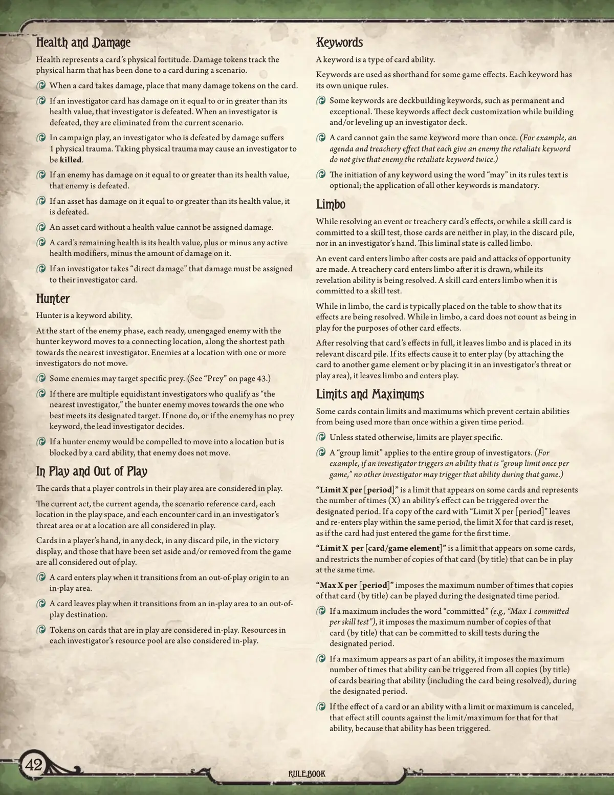
📝 第 42 页 AI 机翻对照（点击展开）
生命与伤害
生命代表一张牌的物理坚韧度。伤害指示物追踪在场景中一张牌所受到的物理伤害。
Æ 当一张牌受到伤害时，在该牌上放置相应数量的伤害指示物。
Æ 如果调查者牌上的伤害等于或大于其生命值，该调查者就被击败。当调查者被击败时，他们将从当前场景中被淘汰。
Æ 在战役游戏中，因伤害而被击败的调查者会受到1点身体创伤。承受身体创伤可能导致调查者死亡。
Æ 如果敌人牌上的伤害等于或大于其生命值，该敌人就被击败。
Æ 如果资产牌上的伤害等于或大于其生命值，该资产就被击败。
Æ 没有生命值的资产牌不能被分配伤害。
Æ 一张牌的剩余生命是其生命值，加上或减去任何活跃的生命修正值，再减去其上的伤害量。
Æ 如果调查者受到"直接伤害"，该伤害必须分配到其调查者牌上。
猎人
猎人是一种关键词能力。
在敌人阶段开始时，每个准备中且未交战的带有猎人关键词的敌人会沿着通往最近调查者的最短路径移动到相邻位置。在有至少一名调查者的位置上的敌人不会移动。
Æ 某些敌人可能针对特定的猎物。（参见第43页的"猎物"）
Æ 如果有多个距离相等且都符合"最近调查者"条件的调查者，猎人敌人会朝着最能满足其指定目标的那一个移动。如果没有，或者敌人没有猎物关键词，则由主调查者决定。
Æ 如果猎人敌人被迫要移动到一个位置，但被牌的能力阻挡，该敌人不会移动。
在场与离场
玩家在其游戏区域控制的牌被视为在场。
当前幕、当前议程、场景参考牌、游戏空间中的每个位置、以及调查者威胁区域或位置上的每张遭遇牌都视为在场。
玩家手中的牌、任何牌库中的牌、任何弃牌堆中的牌、胜利展示区中的牌，以及那些被置于一旁和/或从游戏中移除的牌都视为离场。
Æ 当一张牌从未在场来源转移到在场区域时，它进入游戏。
Æ 当一张牌从在场区域转移到离场目的地时，它离开游戏。
Æ 在场牌上的指示物被视为在场。每个调查者资源池中的资源也被视为在场。
关键词
关键词是一种牌能力。
关键词用作某些游戏效果的简写。每个关键词都有其独特的规则。
Æ 一些关键词是构筑牌库的关键词，例如永久和特殊。这些关键词影响在构筑和/或升级调查者牌库时的牌库定制。
Æ 一张卡牌不能获得相同的关键词超过一次。（例如，一个阴谋和背叛效果各自给一个敌人获得反击关键词，不会给该敌人两次反击关键词。）
Æ 任何在规则文本中使用"可以"一词的关键词的启动都是可选的；所有其他关键词的应用都是强制性的。
冥界（Limbo）
在解析事件或背叛卡牌的效果时，或者在技能卡牌被投入到技能测试中时，这些卡牌既不在游戏中，也不在弃牌堆中，也不在调查者的手牌中。这种中间状态被称为冥界。
事件卡牌在支付费用并做出机会攻击后进入冥界。背叛卡牌在抽到它时进入冥界，同时其揭示能力正在被解析。技能卡牌在投入到技能测试中时进入冥界。
在冥界中，卡牌通常被放置在桌面上以显示其效果正在被解析。在冥界中，卡牌不因其他卡牌效果的目的而被视为在游戏中。
在完全解析该卡牌的效果后，它离开冥界并被放置到相应的弃牌堆中。如果其效果导致它进入游戏（通过将卡牌附加到另一个游戏元素上，或将其放置到调查者的威胁区域或游戏区域中），它离开冥界并进入游戏。
限制和最大值
一些卡牌包含限制和最大值，这些限制和最大值防止某些能力在给定时间内被使用超过一次。
Æ 除非另有说明，否则限制是针对特定玩家的。
Æ "团队限制"适用于整个调查者团队。（例如，如果一个调查者触发了"团队限制每局游戏一次"的能力，则在该游戏期间没有其他调查者可以触发该能力。）
"限制X每[时间段]"是出现在某些卡牌上的限制，表示在指定时间段内，能力的效果可以被触发的次数（X）。如果在同一时间段内，带有"限制X每[时间段]"的该卡牌副本离开并重新进入游戏，则该卡牌的限制X会被重置，就像该卡牌刚刚首次进入游戏一样。
"限制X每[卡牌/游戏元素]"是出现在某些卡牌上的限制，限制了可以同时处于游戏中的该卡牌（按标题）的副本数量。
"最大值X每[时间段]"限制了在指定时间段内，该卡牌（按标题）的副本可以被玩出的最大次数。
Æ 如果一个最大值包含"投入"一词（例如，"每项技能测试最多投入1个"），它限制了该卡牌（按标题）的副本可以被投入的最大数量。
可以在指定期间内被提交进行技能测试的卡牌（按名称）。
Æ 如果最大值作为能力的一部分出现，它规定了在指定期间内，所有具有该能力的卡牌（按名称）（包括正在结算的卡牌）可以触发该能力的最大次数。
Æ 如果一张卡牌或带有限制或最大值的能力的效果被取消，该效果仍计入该能力的限制/最大值，因为该能力已被触发。
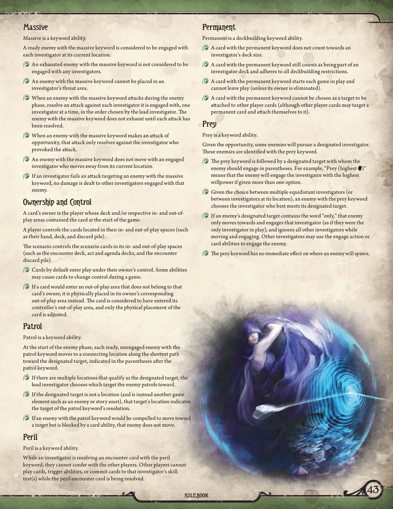
📝 第 43 页 AI 机翻对照（点击展开）
庞大
庞大是一种关键词能力。
一个具有庞大关键词的已准备状态的敌人被视为与在其当前位置的每位调查员交战。
Æ 一个具有庞大关键词的已疲劳状态的敌人不被视为与任何调查员交战。
Æ 具有庞大关键词的敌人不能被放置在调查员的威胁区域。
Æ 当一个具有庞大关键词的敌人在敌人阶段攻击时，针对其交战的每位调查员依次解决一次攻击，顺序由主调查员选择。具有庞大关键词的敌人直到所有攻击都解决后才进入疲劳状态。
Æ 当一个具有庞大关键词的敌人发起机会攻击时，该攻击只针对引发攻击的调查员进行。
Æ 具有庞大关键词的敌人不会随着一个离开其当前位置的交战调查员而移动。
Æ 如果调查员针对具有庞大关键词的敌人的攻击失败，不会对该敌人交战的其他调查员造成任何伤害。
所有权和控制权
卡牌的所有者是游戏开始时其牌库和/或相应的在场内和场外区域包含该卡牌的玩家。
玩家控制其场内和场外区域中的卡牌（例如他们的手牌、牌库和弃牌堆）。
剧本控制其场内和场外区域中的剧本卡牌（例如遭遇牌库、行为和议程牌库，以及遭遇弃牌堆）。
Æ 卡牌默认在其所有者的控制下进入游戏。某些能力可能导致卡牌在游戏过程中改变控制权。
Æ 如果一张卡牌将进入不属于该卡牌所有者的场外区域，它会被物理放置在其所有者相应的场外区域中。该卡牌被视为已进入其控制者的场外区域，只有卡牌的物理位置被调整。
巡逻
巡逻是一种关键词能力。
在敌人阶段开始时，每个具有巡逻关键词的已准备状态、未交战的敌人沿着指向指定目标的最短路径移动到一个相连的位置，该目标在巡逻关键词后的括号中注明。
Æ 如果有多个位置符合指定目标的标准，主调查员选择敌人巡逻向哪个目标。
Æ 如果指定目标不是位置（而是另一个游戏元素，如敌人或故事资产），该目标的位置表明巡逻关键词解决的目标。
Æ 如果一个具有巡逻关键词的敌人被迫向一个目标移动但被卡牌能力阻挡，该敌人不会移动。
危险
危险是一种关键词能力。
当调查员正在解决带有危险(encounter)关键词的遭遇卡时，他们不能与其他玩家商议。在危险遭遇卡被解决期间，其他玩家不能出牌、触发能力或将牌提交给该调查员的技能测试。
永久
永久是一种牌组构建关键词能力。
Æ 带有永久关键词的牌不计入调查员的牌组大小。
Æ 带有永久关键词的牌仍被视为调查员牌组的一部分，并遵守所有牌组构建限制。
Æ 带有永久关键词的牌在每局游戏开始时处于游戏中状态，且不能离开游戏（除非其所有者被淘汰）。
Æ 带有永久关键词的牌不能被选择作为目标附加到其他玩家的牌上（尽管其他玩家的牌可以以永久牌为目标并将自己附加到它上面）。
猎物
猎物是一种关键词能力。
有机会时，一些敌人会追捕指定的调查员。这些敌人带有猎物关键词标识。
Æ 猎物关键词后跟一个括号内的指定目标，表示敌人应该与之交战。例如，"猎物(最高)"表示如果有多项选择，敌人将与意志力最高的调查员交战。
Æ 在多个等距调查员之间（或在敌人所在位置的调查员之间）进行选择时，带有猎物关键词的敌人会选择最符合其指定目标的调查员。
Æ 如果敌人的指定目标包含"仅"一词，则该敌人仅向并仅与该调查员交战（就好像他们是场上唯一的调查员），并且在移动和交战过程中忽略所有其他调查员。其他调查员可以使用交战行动或卡牌能力与敌人交战。
Æ 猎物关键词对敌人生成的位置没有直接影响。
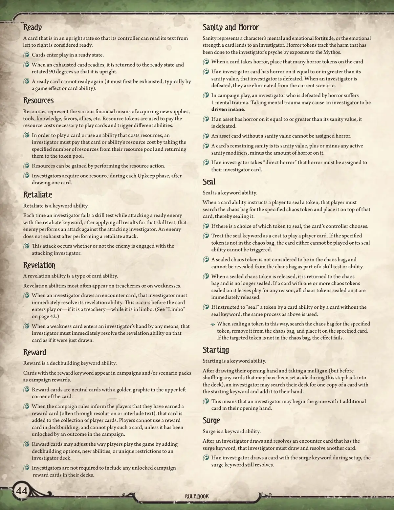
📝 第 44 页 AI 机翻对照（点击展开）
准备
处于直立状态，使其控制者能够从左到右阅读其文本的卡牌被视为已准备。
Æ 卡牌进入游戏时处于已准备状态。
Æ 当一张已疲劳的卡牌准备时，它会被返回到已准备状态并旋转90度，使其直立。
Æ 已准备的卡牌不能再次准备（它必须先被疲劳，通常通过游戏效果或卡牌能力）。
资源
资源代表获取新物资、工具、知识、人情、盟友等各方面的财务手段。资源指示物用于支付打出卡牌和触发不同能力所需的资源成本。
Æ 为了打出卡牌或使用需要资源的能力，调查员必须从其资源池中取出指定数量的资源并将其返回到指示物池，来支付该卡牌或能力的资源成本。
Æ 可以通过执行资源行动来获得资源。
Æ 调查员在每个维护阶段摸一张牌后，获得一个资源。
反击
反击是一个关键词能力。
每当调查员攻击带有反击关键词的已准备敌人时，在技能测试失败后，在应用该技能测试的所有结果后，该敌人会对攻击的调查员进行一次攻击。敌人在执行反击攻击后不会疲劳。
Æ 无论敌人是否与攻击的调查员交战，这次攻击都会发生。
启示
启示能力是一种卡牌能力。
启示能力最常出现在背叛卡或弱点卡上。
Æ 当调查员抽到遭遇卡时，该调查员必须立即解决其启示能力。这发生在卡牌进入游戏之前，或者——如果它是背叛卡——当它处于悬空状态时。（参见第42页的"悬空"）
Æ 当弱点卡通过任何方式进入调查员的手牌时，该调查员必须立即解决该卡上的启示能力，就像它刚刚被抽到一样。
奖励
奖励是一个牌组构建关键词能力。
带有奖励关键词的卡牌作为战役奖励出现在战役和/或战役包中。
Æ 奖励卡牌是带有金色图形的中立卡牌，位于卡牌左上角。
Æ 当战役规则告知玩家他们已获得奖励卡牌（通常通过解决文本或插曲文本）时，该卡牌会被添加到玩家卡牌收藏中。玩家不能在牌组构建中使用奖励卡牌，也不能打出这样的卡牌，除非它已在战役中被某个结果解锁。
Æ 奖励卡牌可能会通过向调查员牌组添加牌组构建选项、新能力或独特限制来调整玩家的游戏方式。
Æ 调查员不必包含任何已解锁的战役
牌库中的奖励卡牌。
理智与疯狂
理智代表角色的精神和情感韧性，或卡牌赋予调查者的情感强度。疯狂指示物追踪调查者因接触神话而对心灵造成的伤害。
Æ 当一张卡牌承受疯狂时，在该卡牌上放置相应数量的疯狂指示物。
Æ 如果调查者卡牌上的疯狂数量等于或大于其理智值，该调查者被击败。当调查者被击败时，他们将从当前场景中被淘汰。
Æ 在战役游戏中，被疯狂击败的调查者将遭受1点精神创伤。承受精神创伤可能导致调查者陷入疯狂。
Æ 如果资产上的疯狂数量等于或大于其理智值，该资产被击败。
Æ 没有理智值的资产卡牌不能被分配疯狂。
Æ 卡牌的剩余理智是其理智值，加上或减去任何活跃的理智修正值，再减去其上的疯狂数量。
Æ 如果调查者承受"直接疯狂"，该疯狂必须被分配到其调查者卡牌上。
封印
封印是一个关键词能力。
当卡牌能力指示玩家封印一个指示物时，该玩家必须在混乱袋中寻找指定的混乱指示物，并将其放置在该卡牌顶部，从而将其封印。
Æ 如果有选择封印哪个指示物的选项，由卡牌的控制者选择。
Æ 将封印关键词视为打出玩家卡牌的成本。如果指定的指示物不在混乱袋中，该卡牌要么无法打出，要么其封印能力无法触发。
Æ 被封印的混乱指示物不被视为在混乱袋中，也不能作为技能测试或能力的一部分从混乱袋中被揭示。
Æ 当被封印的混乱指示物被释放时，它被返回到混乱袋中并不再被封印。如果一张带有一个或多个被封印的混乱指示物的卡牌因任何原因离开游戏，所有被封印在其上的混乱指示物立即被释放。
Æ 如果通过卡牌能力或没有封印关键词的卡牌指示"封印"一个指示物，使用与上述相同的过程。
= 以这种方式封印指示物时，在混乱袋中寻找指定的指示物，将其从混乱袋中移除，并将其放置在指定的卡牌上。如果目标指示物不在混乱袋中，效果失败。
起始
起始是一个关键词能力。
在抽取起始手牌并换牌之后（但在将此步骤中可能被置于一旁的任何牌洗回牌库之前），调查者可以搜索其牌库，寻找一张带有起始关键词的卡牌并加入手牌。
Æ 这意味着调查者可以在游戏开始时在起始手牌中额外拥有1张牌。
涌动
涌动是一个关键词能力。
当一位调查员抽取并结算了一张带有"涌动(surge)"关键词的遭遇牌后，该调查员必须抽取并结算另一张牌。
Æ 如果一位调查员在设置阶段抽取了一张带有"涌动(surge)"关键词的牌，"涌动(surge)"关键词仍然会结算。
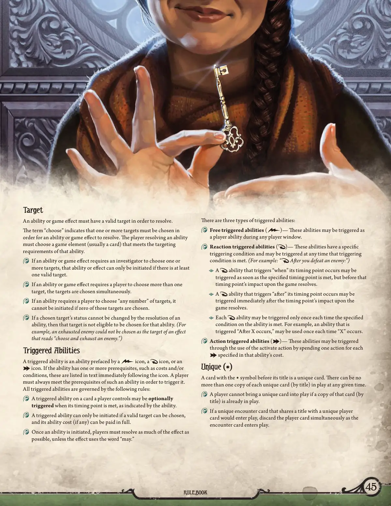
📝 第 45 页 AI 机翻对照（点击展开）
目标
能力或游戏效果必须拥有有效目标才能结算。
术语"选择"表示必须选择一个或多个目标，能力或游戏效果才能结算。结算能力的玩家必须选择符合该能力目标要求的游戏元素（通常是卡牌）。
Æ 如果能力或游戏效果需要调查员选择一个或多个目标，则只有在至少存在一个有效目标时，该能力或效果才能被启动。
Æ 如果能力或游戏效果需要玩家选择多个目标，则这些目标需同时被选择。
Æ 如果能力需要玩家选择"任意数量"的目标，则如果选择零个目标，则该能力不能被启动。
Æ 如果所选目标的状态无法通过能力的结算来改变，则该目标不符合该能力的选择条件。（例如，一个已疲惫的敌人不能被选择为"选择并疲惫一个敌人"效果的目标。）
触发能力
触发能力是由图标、图标或图标引导的能力。如果该能力有一个或多个先决条件，如费用和/或条件，这些条件会列在图标后的文本中。玩家必须始终满足此类能力的先决条件才能触发它。
所有触发能力都遵循以下规则：
Æ 玩家控制的卡牌上的触发能力可在其时间点满足时选择性地触发，如该能力所示。
Æ 只有在可以选择有效目标且其能力费用（如果有）能够全额支付的情况下，触发能力才能被启动。
Æ 一旦能力被启动，玩家必须尽可能多地结算该效果，除非该效果使用了"可以"一词。
触发能力有三种类型：
Æ 免费触发能力（）— 这些能力可在任何玩家窗口期间作为玩家能力触发。
Æ 反应触发能力（）— 这些能力具有特定的触发条件，可在该触发条件满足的任何时候触发。（例如：" 在你击败一个敌人后："）
= 触发"当"其时间点发生的能力可在指定时间点满足时立即触发，但在该时间点对游戏的影响结算之前。
= 触发"在...之后"其时间点发生的能力可在该时间点对游戏的影响结算后立即触发。
= 每次满足能力上指定的条件时，每个能力只能触发一次。例如，一个"After X occurs"（在X发生后）触发的能力，每次"X"发生时可使用一次。
行动触发能力 ()— 这些能力可以通过使用激活行动来触发，为能力成本中指定的每个 花费一个行动。
独特 ()
标题前带有 符号的卡牌是独特卡牌。在任何给定时间，游戏中每种独特卡牌（按标题计）不能有多于一个副本在场。
Æ 如果某独特卡牌（按标题计）的副本已经在场，玩家不能将该独特卡牌引入游戏。
Æ 如果一张与独特玩家卡牌共享标题的独特遭遇卡牌将进入游戏，则在遭遇卡牌进入游戏的同时，弃置玩家卡牌。
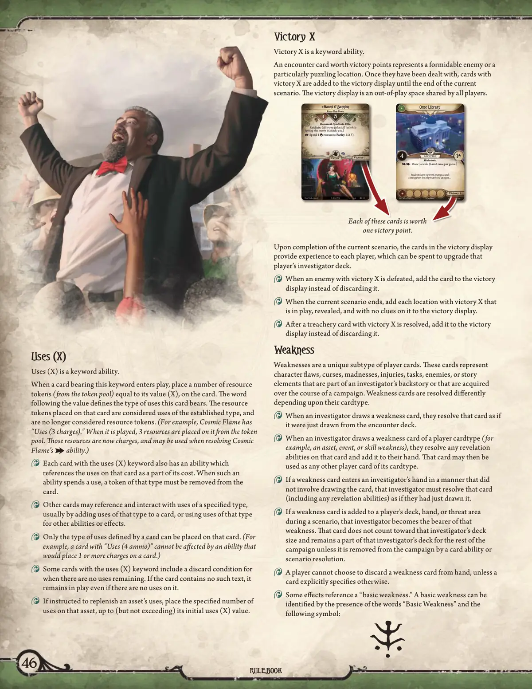
📝 第 46 页 AI 机翻对照（点击展开）
使用 (X)
使用 (X) 是一个关键词能力。
当带有此关键词的卡牌进入游戏时，从指示物池中放置等于其数值(X)的资源指示物到该卡牌上。数值后面的词语定义了该卡牌所拥有的使用类型。放置在该卡牌上的资源指示物被视为已建立类型的使用，不再被视为资源指示物。(例如，宇宙火焰(Cosmic Flame)拥有"使用(3充能)"。当它被打出时，从指示物池中放置3个资源指示物到它上面。这些资源现在是充能，可以在解决宇宙火焰的能力时使用。)
Æ 每张带有使用(X)关键词的卡牌也有一个能力，该能力引用该卡牌上的使用作为其成本的一部分。当这样的能力消耗一个使用时，必须从该卡牌上移除一个该类型的指示物。
Æ 其他卡牌可以引用和与指定类型的使用互动，通常通过向卡牌添加该类型的使用，或使用该类型的使用用于其他能力或效果。
Æ 只有卡牌定义的使用类型才能放置在该卡牌上。(例如，一张拥有"使用(4弹药)"的卡牌不能受到会在卡牌上放置1个或更多充能的能力的影响。)
Æ 一些带有使用(X)关键词的卡牌包含一个无使用剩余时的弃牌条件。如果卡牌不包含此类文本，即使上面没有使用，它也留在游戏中。
Æ 如果指示要补充资产的使用，在该资产上放置指定数量的使用，最多不超过(但不包括)其初始使用(X)值。
胜利 X
胜利 X 是一个关键词能力。
拥有胜利点数的遭遇卡牌代表一个强大的敌人或一个特别令人困惑的地点。一旦它们被处理，带有胜利X的卡牌将被添加到胜利展示区，直到当前场景结束。胜利展示区是一个所有玩家共享的离场区域。
在当前场景完成后，胜利展示区中的卡牌为每位玩家提供经验值，可以用来升级该玩家的调查员牌库。
Æ 当一个带有胜利X的敌人被击败时，将该卡牌添加到胜利展示区而不是弃掉它。
Æ 当当前场景结束时，将游戏中已揭示且没有线索的每个带有胜利X的地点卡牌添加到胜利展示区。
Æ 当一张带有胜利X的背叛卡牌被解决后，将其添加到胜利展示区而不是弃掉它。
弱点
弱点是玩家卡牌的一个独特子类型。这些卡牌代表角色缺陷、诅咒、疯狂、伤害、任务、敌人或调查员背景故事的一部分，或是在战役过程中获得的元素。弱点卡牌根据其卡牌类型以不同方式解决。
当调查者抽到弱点牌时，他们应将该牌视为刚从遭遇牌库中抽到一样来处理。
当调查者抽到玩家牌类型的弱点牌（例如，资产弱点、事件弱点或技能弱点）时，他们应处理该牌上的任何揭示能力，并将其加入手牌。该牌随后可被视为其牌类型的任何其他玩家牌使用。
如果弱点牌以未涉及抽牌的方式进入调查者的手牌，该调查者必须将该牌（包括任何揭示能力）视为刚抽到一样来处理。
如果在场景期间，弱点牌被加入玩家的牌库、手牌或威胁区域，该调查者将成为该弱点的持有者。该牌不计入该调查者的牌库大小，并作为该调查者牌库的一部分留在战役中，除非通过牌牌能力或场景解决将其从战役中移除。
玩家不能选择从手牌中弃掉弱点牌，除非有牌明确说明可以这样做。
一些效果会引用"基本弱点"。基本弱点可以通过"基本弱点"字样和以下符号来识别：
© 2026 FFG
插图：Pixoloid Studios
5/5
地点
学生报告称夜晚空荡的档案馆传出奇怪的声音……
：抽3张牌。（每局游戏限一次。）
密斯卡托尼克。
奥恩图书馆
胜利1点。
1
© 2026 FFG
插图：Nia Kovalevski
3/6
敌人
报复。（在与该敌人进行技能测试失败后，它会攻击你。）
花费1个资源：交涉。（ 3）。
人形。辛迪加。精英。
娜奥米·奥班农
掌控这座城镇
胜利1点。
每张牌价值一个胜利点。
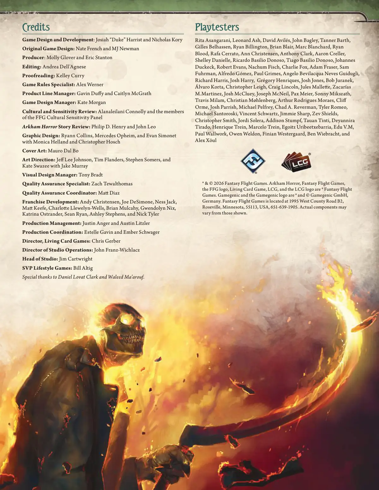
📝 第 47 页 AI 机翻对照（点击展开）
鸣谢
游戏设计与开发：Josiah "Duke" Harrist 和 Nicholas Kory
原游戏设计：Nate French 和 MJ Newman
制作人：Molly Glover 和 Eric Stanton
编辑：Andrea Dell'Agnese
校对：Kelley Curry
游戏规则专家：Alex Werner
产品线经理：Gavin Duffy 和 Caitlyn McGrath
游戏设计经理：Kate Morgan
文化与敏感性审查：Alanaleilani Connolly 和 FFG 文化敏感性小组成员
克苏鲁神话故事审查：Philip D. Henry 和 John Leo
平面设计：Ryann Collins、Mercedes Opheim 和 Evan Simonet，与 Monica Helland 和 Christopher Hosch 合作
封面艺术：Mauro Dal Bo
艺术指导：Jeff Lee Johnson、Tim Flanders、Stephen Somers 和 Kate Swazee，与 Jake Murray 合作
视觉设计经理：Tony Bradt
质量保证专家：Zach Tewalthomas
质量保证协调员：Matt Diaz
品牌开发：Andy Christensen、Joe DeSimone、Ness Jack、Matt Keefe、Charlotte Llewelyn-Wells、Brian Mulcahy、Gwendolyn Nix、Katrina Ostrander、Sean Ryan、Ashley Stephens 和 Nick Tyler
制作管理：Justin Anger 和 Austin Litzler
制作协调：Estelle Gavin 和 Ember Schwager
活体卡牌游戏总监：Chris Gerber
工作室运营总监：John Franz-Wichlacz
工作室主管：Jim Cartwright
生活方式游戏高级副总裁：Bill Altig
特别感谢 Daniel Lovat Clark 和 Waleed Ma'arouf。
® & © 2026 Fantasy Flight Games。Arkham Horror、Fantasy Flight Games、FFG 标志、Living Card Game、LCG 和 LCG 标志均为 ® Fantasy Flight Games。Gamegenic 和 Gamegenic 标志为 ® 和 © Gamegenic GmbH，德国。Fantasy Flight Games 位于美国明尼苏达州罗斯维尔县西县路 B2 号 1995 号，邮编 55113，电话 651-639-1905。实际组件可能与所示有所不同。
测试玩家
Rita Asangarani、Leonard Ash、David Avilés、John Bagley、Tanner Barth、Gilles Belhassen、Ryan Billington、Brian Blair、Marc Blanchard、Ryan Blood、Rafa Cerrato、Ann Christensen、Anthony Clark、Aaron Creller、Shelley Danielle、Ricardo Basilio Donoso、Tiago Basilio Donoso、Johannes Duckeck、Robert Evans、Nachum Fisch、Charlie Fox、Adam Fraser、Sam Fuhrman、Alfredo Gómez、Paul Grimes、Angelo Bevilacqua Neves Guidugli、Richard Harris、Josh Harry、Grégory Henriques、Josh Jones、Bob Juranek、Álvaro Korta、Christopher Leigh、Craig Lincoln、Jules Mallette、Zacarías M.Martinez、Josh McCluey、Joseph McNeil、Pax Meier、Sonny Mikszath、Travis Milam、Christian Møhlenberg、Arthur Rodrigues Moraes、Cliff Orme、Josh Parrish、Michael Pelfrey、Chad A. Reverman、Tyler Romeo、Michael Santoroski、Vincent Schwartz、Jimmie Sharp、Zev Shields、Christopher Smith、Jordi Solera、Addison Stumpf、Tauan Tinti、Deyannira
Tirado, Henrique Trein, Marcelo Trein, Egoitz Uribeetxebarria, Edu V.M,
Paul Wallwork, Owen Weldon, Finian Westergaard, Ben Wiebracht, and
Alex Xöul
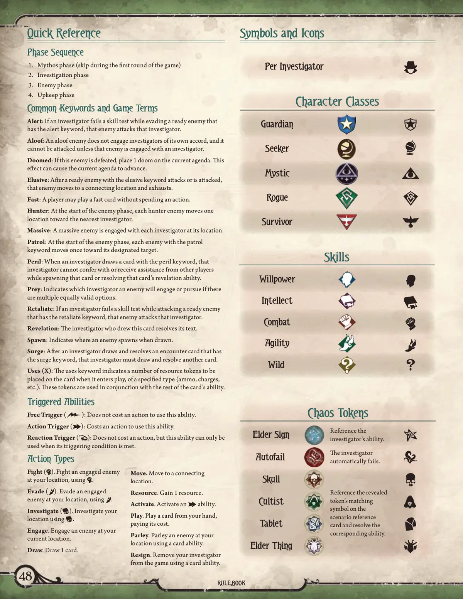
📝 第 48 页 AI 机翻对照（点击展开）
快速参考
阶段顺序
- 神话阶段（游戏第一轮跳过）
2. 调查阶段
3. 敌人阶段
4. 维护阶段
通用关键词和游戏术语
警戒：如果调查员在闪避一个具有警戒关键词的待命敌人时未能通过技能测试，该敌人会攻击该调查员。
疏离：疏离敌人不会主动与调查员交战，除非该敌人与调查员交战，否则无法被攻击。
厄运：如果这个敌人被击败，将1个厄运标记放置在当前议程上。这个效果可能导致当前议程推进。
难以捉摸：在具有难以捉摸关键词的待命敌人攻击或被攻击后，该敌人会移动到一个相连的位置并进入疲惫状态。
快速：玩家可以不打出行动来打出快速卡牌。
猎人：在敌人阶段开始时，每个猎人敌人向最近的调查员移动一个位置。
巨型：巨型敌人与其所在位置的所有调查员交战。
巡逻：在敌人阶段开始时，每个具有巡逻关键词的敌人向其指定目标移动一次。
危险：当调查员抽到具有危险关键词的卡牌时，在生成该卡牌或解析该卡牌的揭示能力期间，该调查员不能与其他玩家协商或接受援助。
猎物：指示如果存在多个同等有效的选项，敌人将与哪个调查员交战或追击。
反击：如果调查员在攻击具有反击关键词的待命敌人时未能通过技能测试，该敌人会攻击该调查员。
揭示：抽到此卡牌的调查员解析其文本。
生成：指示当抽到卡牌时敌人生成的位置。
激增：在调查员抽到并解析了具有激增关键词的遭遇卡牌后，该调查员必须再抽并解析一张卡牌。
使用(X)：使用关键词表示当卡牌进入游戏时，需要放置在卡牌上的资源标记数量（特定类型，如弹药、充能等）。这些标记与卡牌能力的其余部分结合使用。
触发能力
免费触发()：使用此能力不需要花费行动。
行动触发()：使用此能力需要花费行动。
反应触发()：不花费行动，但只有在其触发条件满足时才能使用此能力。
符号和图标
守护者
探索者
神秘主义者
盗贼
幸存者
角色职业
意志力
智力
战斗
敏捷
万能
?
技能
每个调查员
参考场景参考卡上已揭示标记的对应符号，并解析相应能力。
参考调查员的能力。
古神印记
调查员
自动失败。
自动失败
骷髅
邪教徒
石板
远古之物
行动类型
战斗 ()。使用 与你所在位置的已交战敌人战斗。
闪避 ()。使用 闪避你所在位置的已交战敌人。
调查 ()。使用 调查你所在的位置。
交战。与你当前位置的敌人交战。
摸牌。摸1张牌。
移动。移动到相邻的位置。
资源。获得1点资源。
激活。激活一个 能力。
打出。打出你手牌中的一张牌，支付其费用。
谈判。使用卡牌能力与你所在位置的敌人谈判。
弃权。使用卡牌能力将你的调查员移出游戏。
混沌指示物